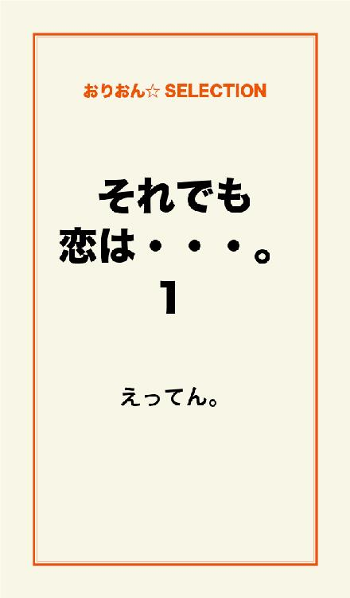
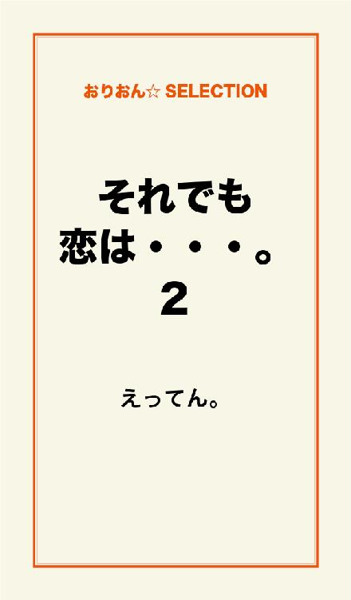
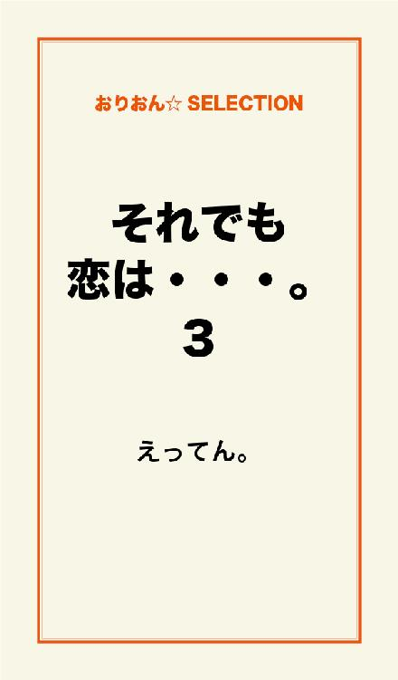

| それでも恋は...。 完全版 | |
| えってん。 | |
この本は横書きでレイアウトされています。
また、ご覧になる機種により、表示の差が認められることがあります。

厳しい残暑も終わりに近づき、蝉達もラストスパートをかけたように鳴いている。
時折そよぐ風は秋の気配を運ぶように優しく頬をなで、汗ばむ体を癒していく。
見上げると、夏の間空を占領していた入道曇が申し訳なさげに浮かんでいる。
「あんなにちっちゃくなっちゃって。影送りできそう」
眩しそうに手をかざして佐伯ひなこは微笑んだ。
可愛いエクボが二つくっきり浮かぶ。
まだ半袖の制服から伸びた細い腕は、夏の太陽の影響を受けなかったかのように白く透き通っている。
丸顔気味の顔に大きな瞳、少し小さな鼻、形の整った唇には色付きリップをひいてある。
耳の横でアップにした髪型は、そんな彼女によく似合う。
「そんなに見てたらクシャミでるぞ」
聞き慣れた声に振り返る。
ぱぁっと笑顔が華やぐ。
「藤堂く......」
クシュンっ。
小さなクシャミが一つ。
「な？
出たろ？」
言いながらひなこの少し小さな鼻をつつくのは藤堂誉。
ひなこの同級生で彼氏である。
「ほんとだぁ。でちゃったぁ」
笑ったほっぺにエクボが二つ。
「お待たせ。結構待たせたよな？ ごめんな？」
「そんなに待ってないから大丈夫だよ。用事はすんだ？」
空を見すぎてむずむずする目を、パチパチしながら藤堂を見上げる。
「すんだ。アイツ話なげーんだよなぁ。その上しつこい」
「それ麻里のこと？」
クスっと笑って苦そうな顔をする。
コメントに困った時のひなこの癖なのだが、お世辞にも可愛いと言えなくなるまでくしゃっとなってしまう。
感情がすぐ顔にでるタイプなのでコロコロ表情が変わるのだ。
くしゃっとなる顔を見たくて、わざと困らせるようなことを藤堂はよくする。
麻里というのは藤堂のクラスメイトで、ひなこの親友だ。
家も近所で昔から仲が良い、いわゆる幼なじみというやつである。
藤堂の評価が当たらずしも遠からずといったところなので、親友としては返答に困ってしまう。
くしゃっとなるのもそのためだ。
お喋り好きで機関銃のように話す麻里は、藤堂から見れば『話の長いしつこい奴』となってしまうのだろう。
それとは逆におっとり話すひなことどうして会話が成立するのか、藤堂にはまったく解らなかった。
「もうすぐ文化祭だからね。クラスの役員だし、張り切ってるんだよ」
「まぁなぁ。責任感強いしな」
「熱いもの持ってるよね」
「うっわ。熱苦しいってか？ ひっでぇ。俺には言えねー」
女の子の様な仕草で大袈裟に口を両手で覆う。
「ちっがーう。そんな事言ってないー」
とむぅっとむくれた。
「てゆうかその仕草気持ち悪い」
おえっとした仕草で冗談めいて口元に手をあてる。
「気持ち悪い言うな」
ひなこの頭をこずいた。
「しっかし、うちの学校も忙しいスケジュール立てるよなぁ。文化祭のあとすぐに修学旅行だろ？ 冬に回せってーの」
「でもさ。文化祭の盛り上がりを残しつつ、修学旅行に行けば楽しめるってゆう先生達の狙いかもしれないよ？ わーって」
両手を挙げてコロコロ笑う。
「わー？」
ふっと笑いながら藤堂が答える。
「そう。わーって」
こういう子供のようなひなこの仕草を藤堂はたまらなく気に入っていた。
「奴らにそんな気遣いが出来るかどうかは置いといて、わーっと楽しむか！」
「おー！ 楽しむぞー」
と軽く弾む。
「じゃあ立ち話もなんだし、そろそろ帰るか」
ぽんっと頭に手を置く。
本当は抱きしめたいところだが、校門なんかでやろうものなら、いかつい生徒指導のおっさんが竹刀ブンブン振り回して連行しにくるに違いない。
このご時世に竹刀振り回して何故に問題にならないのか、疑問に思わない奴はいないだろう。
「お腹すいたねぇ？
おやつ食べたいね？」
あ。
いた。
少し遠い目をし、何を食べようか考えているであろうひなこの頬をつついて、
「太りますがどーですか？」
つつかれた頬をぷうっと膨らませて、むぅっとうらめしそうに見上げる。
「なぁんでそんなこというのかな。意地悪」
今度は悲しそうに下をむく。
「いいもん。そうなったらとことん太ってやるんだから」
と何故か意欲的になっている。
「ごめんごめん。じゃあなんか食べるか」
「わぁーい！ コロッケたべたぁい」
コロッケコーロコロと鼻唄を歌いながらぴょんぴょん跳びはねだした。
「ほんっと、忙しいやつ」
眩しそうに目を細め藤堂は、ひなこの後を追った。
「そういや、ひなこ？ 俺来る前になんか食ってなかったか？」
はたと動きが止まり、つんのめった体を起こしながら振り返る。
「マフィン食べたんだったぁ。うそー。忘れてたぁ」
と、悔しそうにその場にうなだれた。
ぶはっと吹き出し、笑いながらひなこの前にしゃがみこむと、ひなこの頭に手を置き、困った顔を見ようと一言。
「お嬢さん？ とことん太ってもよかったのでは？」
「もーっ！ ばかー」
ひなこのへなちょこパンチが炸裂した。
やがてよろよろと立ち上がり、帰ろっかと歩き出すと、鞄から携帯を取り出してメールをうち始める。
「お母さんにコロッケ作ってもらお」
よっぽど食べたかったのか、先ほどの落ち込みから一転、またもやコロッケコロコロと唄っている。
メールを打ち終え満面の笑顔で藤堂を見る。
「作ってくれるって？」
「返信まだだからわかんないけど、多分だいじょぶかな」
そっか。と、ひなこの手を取って歩き出す。
いきなりで驚いたひなこが思わず手をひっこめると、同時に強く引き戻される。
「逃がしません」
かあっと頬が茹だる。
藤堂と付き合い出して半年近く経つのに、ひなこはまだそれに馴れていない。
藤堂が初めての彼氏で、もとより男の子に免疫がないのだから無理もない。
真っ赤に茹だった頬を、見られないように俯いて歩き、繋がれた手を見てさらに噴火。
頭から湯気が出ているのではないかと思う程顔が蒸気しているのがわかる。
目のやり場がなくなり顔を上げると、藤堂が覗き込んでいた。
「にゃっ」
びっくりして声がひっくり返る。
「にゃってなんだよ」
「なんか、なんでかびっくりしちゃって」
焦っているためしどろもどろだ。
しっかりしなさい！
何動揺してんの私！！
頭の中で自分に喝を入れる。
「まぁ、こんなイケなメンにじっと覗き込まれちゃーなぁ。アタフタするわな」
自画自賛でフンフンと頷く。
事実、藤堂は校内でも指折りのイケなメンで、ひなこと付き合う前はかなりの女子生徒に言い寄られていた。
ほどよく整った瞳には長い睫毛が並んでおり、鼻はすっと通っている。
薄い唇は男子とは思えない程綺麗に保たれていて、もちろん目立つオヒゲなどは一切ナッシングだ。
少し茶色い髪はワックスで無造作にしあげている。
こだけでも申し分ないのに、１８０センチ近い背丈が男前度をさらに後押ししている。
神様は不公平だとひなこはいつも思っていた。
なんで自分なんかと付き合っているのか今でも不思議で仕方がない。
「アタフタしてないもんっ。覗き込まれてるなんて思わなかったから、驚いたんです！」
繋いだ手をブンブン振り回す。
「今度不意打ちで顔覗き込んであげる。絶対ビックリするから」
斜めに顔を上げて挑発してみせる。
「そしたらキスします」
挑発し返され撃沈。
冷えかけていた頬がまた茹で上がる。
「ひなこかーわい」と頬をつつかれたところで白旗をあげ、降参。
悔しそうに唇を噛む。
藤堂は、楽しみ楽しみ。
と得意げに歩く。
いつもひなこは弱点をつかれて惨敗してしまう。
だが藤堂にからかわれるのは嫌ではなかった。
「くたびれ公園よってく？」
藤堂が目の前にある公園を指さす。
ひなこの家のすぐ側にある古い公園で、使いこまれた遊具が子供達を待ち構えている。
残念なことに子供達は新しい遊具が揃う公園にたむろっているのだが。
公園なのに子供達の姿がくたびれて見えるので、みんなからはそう呼ばれている。
藤堂とひなこやその他のカップルにとって、子供達に茶化されることなくのんびり出来る数少ない場所なのだ。
「よってくぅ」
ひなこはいつの間にか取り出していた小銭入れを、しゃかしゃか振っている。
公園に寄る時は自動販売機で飲み物を買うのがお決まりなのだ。
「今日は何のもっかなぁ」
スキップを踏んでクルッとターン。
五回目のスキップターンでひなこのサービス。
スカートの裾がやや大きく持ち上がり、淡い水色の生地が一瞬現れた。
もちろん本人にはサービスするつもりなどない。
藤堂はぎょっとなって慌てて廻りを見回す。
誰も居ないことにホッとし、
「たく。何サービスしてんだアイツは」
と苦笑する。
「藤堂君早くー。なんか新しいの入ってるー」
そんな藤堂などお構いなしで、ひなこは飲み物を選んでいる。
藤堂は興奮気味のひなこに駆け寄った。
「ココナッツスカッシュだって。どうなんだろこれ。
どうだろね？」
言いながらボタンを押す。
ガッコンとジュースが落ちてくる。
またサービスさせないように、ひなこより先にしゃがんだ藤堂がジュースを取って渡す。
「ありがとー」
嬉しそうにジュースをうけとり缶を眺めている。
「チャレンジャーだなぁ」と言いつつ、藤堂はいつもの緑茶を買って今日の座り場所を探している。
広くもなく狭くもない公園の隅に設置された、ブランコに決め、
「あそこは？」
とひなこを伺う。
「ブランコいいねぇ」
ひなこも依存はないようだ。
二人で並んで歩きだし、ブランコに座る。
座ると同時にプシュっと缶を開ける音がする。
「あ。なんかいい匂いだぁ」
と藤堂にも向ける。
藤堂も鼻を近づけて、
「ホントだ。わりとよさげ」
「ね。じゃあ、いっただきまーす」
ひなこは、ごくごくと喉を鳴らして飲み始めた。
「うまい？」
ひなこはプッハーっと言わんばかりに口から缶を離して一言。
「んまいっ」
「ははっ。おっさんか」
「えへへ」
藤堂も緑茶を飲む。
「そーいや。ひなこのクラスは文化祭なにすんの？」
さっきまで華やいでいた顔に影がさす。
ジュースを一口すすり、重いため息をついた。
「メイド喫茶」
「メイド喫茶ぁ！？」
ぶぅーっとお茶を吹き出し、慌てて拭う。
「文化祭は楽しみなんだけど、なんだか乗り切れなくて」
まぁ、タイプじゃないわなぁ。と藤堂は頷く。
「ミニスカートとか着て黄色い声で喋るのって、文化祭ではどうなのかなぁ」
肩に重しを乗せているかのように沈み込む。
確かに、おっとりタイプのひなこには気の重い出し物だろう。
「ミニスカート？」
「そう。ミニスカート」
「結構膝上？」
「......多分結構」
少し沈黙したあと、
「ミニスカートのひなこかぁ。
いいなそれ。萌えぇ。みたいな？」
ひなこの足をマジマジと見つめる。
「もぉー。ばかー」
本日二度目のヘナチョコパンチを繰り出すが、思いのほか距離がありあえなく不発に終わる。
「藤堂君のクラスはカラオケなんだよね？ 麻里に聞いたよ」
「ま、無難にね」
「いっぱい入ってくれるといいね？」
「いやいやぁ。ひなこ喫茶には敵いません」
困らせてやろうとからかうと、案の定くしゅっと顔をしかめて俯いた。
「文化祭まであとどれくらいだぁ？」
藤堂は上を向いて逆算し始めた。
「だいたい二週間くらいかな。そのあとは楽しい修学旅行！！」
「北海道！！」
二人でハモる。
「同じクラスだったらなぁ。一緒に廻れてもっと思い出作れるのに......」
あーあ。
と表情が沈みブランコを揺らしながらジュースをすする。
たまにこういう素直な気持ちを口に出して言うので、藤堂も不意をつかれる。
そしてそれが可愛くて仕方がない。
抱きしめてキスをしたい。
こういう時は強くそう思う。
藤堂は緑茶の缶を置き、ブランコから立ち上がって、まだちびちびジュースを飲んでいるひなこの前にしゃがんだ。
「それそんなにうまい？」
ひなこは缶に口を付けたままこくこく頷く。
「もらっていい？」
と口から缶を外し、代わりに自分の唇をあてる。
ひなこはびっくりしてブランコから落ちそうになり、藤堂にしがみつく。
ひなこの腰に腕をまわし反対の手でブランコの鎖を掴んで二人分の体重を支える。
ひなこも抗おうとせず藤堂に体を預ける。
藤堂はいつもの重ねるだけのキスから更に深く口づける。
ひなこは一瞬強張ったがすぐ力がぬける。
今までに感じたことのない感覚に全身が震え、腰から砕けそうになるのを必死でこらえる。
息をすることさえ忘れてしまいそうな、優しく激しいキスに脳までとろけそうになり、もぅこれ以上は無理だと思った時唇が離れた。
「ほんとだ。うまい」
ひなこは金縛りにあったように動けない。
潤んだ目で藤堂を見ると、今度は耳元で藤堂が囁く。
「ごちそうさま」
そこで一気に引き戻される。
なにも考えられなくなり言葉が出ない。
藤堂が吹き出して、
「茹でダコみてぇ。真っ赤っか」
その言葉に全てから解放されたひなこはありったけの力で、へなちょこパンチを繰り出した。
「むぃー」
意味不明な言葉と共にはなたれた本日三回目のへなちょこパンチは、クリティカルヒットだった。
ひなこのへなちょこパンチが炸裂した次の日、藤堂のクラスに転校生が来ることになった。
文化祭と修学旅行が迫っているこの時期には珍しいことで、一同の話題は転校生一色だ。
藤堂には転校生など全くどうでもいいことなのだが、一応廻りの友人に話を合わせる。
ホームルーム開始のベルが鳴り、いよいよご対面とばかりに各々自分の席につく。
しばらくしてガラガラと勢いよくドアが開く。
「お、なんだ珍しく席についとるな」
と担任が入って来る。
「転校生が気になるといったところか？」
お見通しと言いたげにニヤニヤ笑う。
「じゃあ、朝の挨拶は後回しにして、早速紹介するか」
そう言ってドアの向こうに声をかけた。
「入りなさい」
視線がドアに集中する。
転校生が入った瞬間、何気なく見ていた藤堂は息を飲んだ。
──
児嶋
紗枝
──
心の中で呟く。
中学の時の同級生で数カ月間付き合っていた相手だ。
付き合ったと言っても、相手を好きだからというのではなく、告白されなんとなく付き合った程度なのだが、藤堂には思い出したくない事の一つだった。
「児嶋紗枝です。よろしくお願いします」
紗枝が低めの声で無難な挨拶をし、一礼する。
藤堂を除く男子生徒は、どんどん紗枝に魅入られていく。
少し日焼けし、スラッと伸びたモデル体型の手足に加え、面長の顔には彫りの深い目、筋の通った鼻。
形の整った唇には控えめにグロスをひいてある。
やや癖のある髪は腰の位置まで伸びているが、まるで暑苦しさを感じさせないほど彼女の全てにハマっていた。
「どうだ？ 美人だろう？」
担任が何故か自慢げに男子生徒を見る。
お前の娘じゃねぇだろ。
と言いたいところだ。
「こんな時期に珍しいんだが、親御さんの仕事の関係で仕方がなかったそうだ。文化祭やらなんやらもあるし、とにかく仲良くやってくれ」
さくっと転校生紹介をすませ空いている席を指差す。
「あの席だ」
紗枝は指し示した方を確認し、はい。
と席に向かう。
紗枝の席は教室の真ん中あたりで、一番端の一番隅に席がある藤堂からは離れているが、嫌でも藤堂の目に入る。
見付かりたくない心境で顔を伏せようとした時、紗枝と目が合った。
驚くかと思いきや紗枝の方は知ってましたとばかりに目配せする。
知ってたってか。
付き合っていたのは中学二年生の時で、三年生になりクラスも離れたので話すこともなかった。
友達を通じてまだ自分を好きだという事を聞かされたりもしたが、藤堂は聞き流していた。
最初から興味本位で付き合っていただけだった藤堂にとって、紗枝の気持ちは正直重かったのだ。
付き合っているというステータスと、高校に進んだ時のためのキャリアが欲しいだけで、中学生で真剣に付き合う奴などいないと、軽い気持ちだった。
しかし紗枝の想いは驚くほど真剣で、付き合いだしてすぐに後悔し始めた。
早々に別れを切り出そうと思ったのだが、付き合えた喜びの絶頂にいる紗枝を見ると、可哀相で言えなかった。
毎日のように一緒に帰り、学校で嫌というほど話をしているのに電話でも話をし、休みの日には二人で出掛ける。
藤堂の時間はほとんど紗枝に使っていることに堪えられなくなり、数ヶ月後に別れを告げた。
もちろん泣きわめかれ、しばらく承諾してくれなかった。
そして、「今の志望校よりランクの高い高校を受けるから受験に備えて今から勉強に集中したい」と学生の別れの決まり文句を、口にするしかなくなった。
紗枝の性格上、自分も同じ高校を受験すると言い出しかねなかったので、三つもランクを上げた高校の名前を伝えた。
自分には無理と理解したのか、それで承諾してくれた。
ようやく別れて楽になれたかと思っていたら、今度は自分と紗枝の友達やらに酷いだの最低だのと罵声を浴びせられ、しばらくの間女子からは冷たくあしらわれる事になった。
紗枝に告げた別れの理由が嘘だったと責められ始める前に、勉強に勤しんだ。
おかげで今の学校に入り、ひなこにも出会えたのだが......。
女と付き合うのがこんなにも疲れるものなのかと落胆し、もう誰とも付き合うものかと決めた。
ひなこに会うまでは。
人を好きになる気持ちというのはこうも自分を変えるものなのかと、感動すら覚えた。
自分の時間を紗枝に使っていた時は苦痛で仕方なかったのに、ひなこに対してはもっと使いたい。
使ってほしい。
二十四時間では足りないとすら思ってしまう。
今の藤堂にはあの頃の紗枝の気持ちが少しわかる。
席に着いて鞄の中身を出している紗枝を横目で見た時、寒気がした。
紗枝の隣の席が麻里であることに今気がついた。
どうか、一瞬の目配せに気がついていませんように！
今の念に気付いたのかなんなのか、麻里が振り返り藤堂を見て目を細めた。
ヤバイ。
何かに感づいている。
藤堂は体が固まってしまった。
ホームルーム終了のチャイムと共に、紗枝の廻りに男子が群がる。
美人とお近づきになりたい下心が見え見えだ。
質問攻めの合間に愛想笑いでさらっとかわすだけで、紗枝からは話し掛ける気はないらしく、必要以上に喋らない。
藤堂が授業の用意をするため、教科書を出そうとした時、麻里が声をかけてきた。
「藤堂君？ 児嶋さんと知り合いなの？」
何かを言われる気はしていたので、想定内の質問だった。
嘘をつくわけにもいかないが、付き合っていた事は伏せる事にした。
「ああ。中学んときの同級生」
「ふぅん。そうなんだ」
納得しきれていない麻里の様子に、これ以上の事は聞かないでくれ。
と祈る。
「話し掛けに行けばいいのに」
──探るつもりか？──
藤堂は敏感になりすぎている自分を落ち着かせようと、教科書をめくりながら答えた。
「下心連中に混ざってまでしたい話ないし」
「向こうも藤堂君のコト気がついてるんじゃないの？」
やっぱりきたか。
解りやすいぞ、立木麻里。
「どうかな。そうだとしても向こうも特に話す事ないんじゃねーの？」
「なんかさぁ......」
麻里が何か言いかけたところで始業ベルが鳴った。
切り抜けた。
と同時に言葉の続きが気になる。
何を探ろうとしているのか。
紗枝と中学が同じで数ヶ月間付き合っていたという事まで話さなければ気が済まないのだろうか。
俺ではなく紗枝に探りを入れる方が早いものを......。
いずれバレる事だが、できれば隠しておきたい。
ひなこには知られたくない。
過去に誰かと付き合っていた事は知られても構わない。
隠しておきたいのはそこではない。
好きでもない相手と興味本位で付き合って傷付けてしまった事を、繊細なひなこが知ればどう思うだろうか。
そんなことを平気で出来る奴だと幻滅されるのではないか。
自分とも同じようにつきあっているのではないかと、傷付くのではないだろうか。
それが怖くてたまらない。
紗枝の方に視線を移した。
男子どもはすでに散っており紗枝の背中がよく見える。
「なんで来るんだよ」とその背中にむかって呟いた。
ほどなくして物理の担任が入って来た。
「これから小テストをします」
予告なしの小テスト実施にブーイングが飛ぶ。
クラスの誰かが異義をとなえた。
「転校生が来たばかりなんですよー？ 習ってない所が出たら可哀相じゃないですかー」
他の生徒も、そうだそうだとはやしたてる。
藤堂も、いいぞ。
もっとごねろと他力本願だ。
物理担任は、
「リサーチ済みです」と軽くあしらい、テストを配り始めた。
全員しぶしぶ出してあった教科書をしまう。
「予告なしのお詫びに、テストが出来た人は席さえ立たなければ何しててもかまいません」
物理担任の言葉にヤッターっと一同喜びの声をあげる。
前から順にテスト用紙が廻ってくる。
一つ前の友人が藤堂に渡しながら呟いた。
「これでどうやって時間残せってんだよ」
用紙に目を落とすと、一面ビッシリ文字が埋めつくされている。
しかも二枚。
「逆に時間たんねーよ」
藤堂もぼやく。
「では始め！！」
藤堂は開始と共に問題を解きだした。
思っていたより簡単に作られており、授業が終わる二十分も前に解き終わった。
廻りを見ると数人が問題を解き終え各々自由に時間を使っている。
携帯をいじっている者、本を読んでいる者、寝ている者もいる。
紗枝の方に視線をやる。
まだ解き終えていない様子がうかがえた。
何チェックしてんだ俺は。
と小さく舌打ちし、テスト用紙を机の隅に追いやった。
鞄から携帯を取り出し、予告無しの小テストを終え、自由な時間が出来た事を書き、ひなこにメールを送った。
そして自分も寝ようと思い、机に突っ伏して気が付いた。
授業中に携帯なったらビビルだろうな。
まぁマナーモードかなんかにしてあるだろうから、見付かる心配はないだろうけど。
そのまま目を閉じて残りの時間を過ごした。
やがて終業ベルが鳴り、一同わらわらとテストを提出する。
本気で寝てしまった藤堂を友人が起こす。
「お前寝てたのかよ。なんでそんな余裕あんだよ」
不服そうに藤堂の用紙を覗く。
藤堂はすかさず、
「あれじゃねぇ？ 頭の差？」
「俺今お前の全てに腹が立つ」
と藤堂の分も持って席をたった。
「持ってってくれんの？」
「おぅ。さっさと佐伯んとこ行け」
「気がきくねぇ。サンキュー」
と紗枝の方は見ずにドアに向かった。
廊下に出て隣の教室に向かうと、ひなこも教室から出てきた。
藤堂を見付け、嬉しそうに、若干照れながら近寄ってくる。
「びっくりしたぁ」
さっきのメールの事だろう。
「送ってから気が付いた。ごめん。大丈夫だったか？」
藤堂が顔の前で手を合わせる。
「平気。マナーモードだったから。それに、なんか楽しかったし」
と嬉しそうだ。
「麻里からもメールもらったんだよ。転校生がきたんだってね？」
やはり麻里もメールを送っていた。
藤堂のメールに転校生の事が書かれていなかったのを変に思わないだろうか。
麻里は藤堂と紗枝が同じ中学だった事は知らせているのだろうか。
とりあえず同じ中学だった事は伝えておくことにした。
「あぁ。そうなんだ。実は中学の同級生でさ」
「えー。そうなの？ びっくりだね」
と目をまんまるくして驚いた。
そして藤堂の肩の向こうを見て確認する。
「あの人がそう？」
藤堂は振り返り紗枝を見つける。
ちょうど教室から出てきたところで、先程とは違い群がっている男子は三人だけだった。
「そう。児嶋紗枝」
「児嶋さんってゆうんだぁ。すごい美人だね！ モデルさんみたいにスラーってしてて、綺麗な人」
ひなこは完全に見とれてしまっている。
ひなこの身長は１６０センチで低いわけではないのだが、もうちょっとあれば藤堂と並んだとき少しは釣り合いが取れるのにと思っている。
「さっきはもっと群がってた」
「へぇ。でもそうだよねぇ。あれだけ綺麗だったら群がっちゃうよね」
少し間が空いて、ひなこは言いにくそうに小声で尋ねた。
「仲......よかったりした？」
どう答えようか。
付き合ってた事を言うなら今が流れ的に一番自然で、一番言いやすい。
ひなこならどんな付き合いだったのかなど問い詰めたりしない。
落ち込ませるかもしれないが、隠していたくてもいずれ知られてしまう事だ。
藤堂はひなこに向き直り、
「いや。ちょっと話したことがあるって程度」
違う言葉がでた。
話すと決めたのに、言えなかった。
言いたくなかったのだ。
他の誰かから知らされるより、本人から知らされる方が傷つかなくて済む事は解っているのに。
しかしもう遅い。
もう言えない。
「よかったぁ。って言うのも変だよね。皆と仲良い方がいいのにね。......でも、よかった」
ひなこは安堵した表情で微笑む。
藤堂は笑いかける事しか出来なかった。
そして二時間目の始業ベルが鳴る。
「じゃあ戻るね」
「ん」
右手を軽く挙げて頷く。
ひなこは教室に向かって歩きだし、ドアの前でもう一度振り返り、バイバイと小さく手を振った。
藤堂が手を振り返すのを見て教室に戻る。
藤堂も教室に戻り席についた。
少し汗ばむ手で頭を抱え込み机に沈み込む。
嘘をついてしまった。
どれだけそうしていただろうか、気がつくととっくに授業は始まっており、初老の古文担任が本を読み上げていた。
藤堂は机のなかから教科書を取り出し適当に開く。
そして自分が中学時代と何も変わっていないことに苛立ち、舌打ちする。
あの時と違うのは、絶対に傷付けてはいけない人に、傷付けてしまうことを言ったということ。
ひなこに嘘をついたのだ。
「何やってんだよ。俺」
『午後、文化祭準備』
正面玄関にある授業変更を書き込むボードに、でかでかと書かれていた。
午後からの授業がまるっきり無くなるというサプライズに、生徒達のテンションがあがる。
よっしゃー。
やるぞー！
と意気込んでいるが、おそらく昼休みの延長が午後いっぱい続くという結果になりそうだった。
「よかったぁ。今日の英語あたりそうだったんだよねぇ。助かった」
べランダにもたれかかり背伸びをしながら麻里が言った。
「よかったねー。私も次は化学だったからラッキーだったな」
ひなこも苦手な教科がカットになりホッとしている。
昼休みも半分が過ぎ、食後のデザートタイムに突入した。
イチゴのつぶつぶポッキーをほおばりながら浮足立つ男子を眺めている。
「喜びすぎだっつーの。あいつら子供か？」
麻里も呆れたように見てやれやれとため息をつく。
「あはは。すごいはしゃぎようだよね。楽しそう」
毎年、文化祭が近づくと各日ペースで午後の授業がカットされる。
午後からの時間を『文化祭の準備をしている』という名目で好きに使える権利を得た生徒達は、水を得た魚のようにはしゃぎまくる。
時折見回りに来る教師に備え、偵察隊も編成される。
そして見回りの間だけ作業に打ち込む。
女子はそんな男子がおかしくてたまらない。
勿論、教師側も文化祭の準備など二の次だということはお見通しなのだが、そうでもしないと準備が全く進まないので、苦肉の策というところだ。
「風も冷たくなってきたし、そろそろ長袖の制服だね」
少し冷たい風を受け、ひなこは外に目をやった。
「だねー。昨日まで半袖でちょうどよかったのにね。ぼちぼち食べ物が美味しくなってきますなぁ」
と青く澄んだ空を見上げる。
しばらくそうしているとひなこが思い出したように声をあげた。
「あ。転校生見たよ！ すっごい美人だからびっくりした」
またもや目をまんまるくする。
「あー！ もう見た！？ だよね！ キレイすぎ！ あれは卑怯だわ。あんな美人が現れたら平凡女子はどーすりゃいいのよ。クラスの男子も群がる群がる。席が私の隣なんだけど、なんか目のやり場に困るんだよね！ キレイだから見ていたい！ けど見れない！ 禁断の果実的な存在だわ！」
と一気にまくしたてる。
機関銃スイッチが入ったようだ。
ふと、昨日の藤堂が思い浮かび可笑しくなった。
そのまま公園でのキスまで記憶が遡る。
何思い出してんの私！！と真っ赤になりそうな顔を鎮めようと再び空を見上げる。
そんなひなこをお構いなしに麻里は機関銃をぶっ放す。
ひなこも聞いてる余裕がない。
散々ぶっ放したあと少し低めの声で、
「藤堂君なんか言ってた？」
とひなこを伺う。
藤堂の名前に引き戻され麻里を見る。
「何かって......別になにも？ 中学の同級生だって言ってたけど」
少し怪訝な顔をしたひなこに、
「なぁんだ。あいつちゃんと言ったんだ。ヤキモチやきの誰かさん気遣って言わないかと思ったから、私が変わりに言ったげようと思ったのに」
とからかい口調で言う。
「ヤキモチやきなんかじゃないもんっ！」
心外だとばかりにひなこも反論。
はいはい。と軽くあしらわれ、ひなこも引き下がる。
「ひなこはホント素直でカワイイんだから。そりゃあ藤堂君も人目もはばからずちゅーってしたくなる訳だわ」
ひなこの顔が赤くなり、そしてまたたくまに青くなった。
「やっ......それ、なな......何......言って......」
言葉が全く繋がらない。
見られた？ 見られてた！？ うそっ！ どうしよう！？
どうしたらいい！？
完全にパニック状態だ。
麻里がぷっと吹き出しゲラゲラと笑い出した。
「あはははは。わっかりやすい。あんたなんて顔してんのよ。赤くなったり青くなったり忙しい子ねぇ」
「だって。いきなり変な事言うから！」
と、ここで昼休み終了のベルが鳴る。
「さってー。戻ろっかな」
麻里は残りのお菓子をほうばり備え付けのごみ箱にゴミを捨てた。
二人はベランダを出て歩きだし、ひなこの教室の前で、じゃあ。と手を挙げる。麻里がもう一度振り向き、
「メイド喫茶期待してるわよん。黄色い声マスターしてね」
とチシャ猫の様に笑う。
「言わないで」
ひなこは両手を麻里に向かって伸ばし、顔をフルフル振った。
ひなこは席に向かいながら考える。
結局麻里には見られていたのだろうか。
昨日の映像が浮かび上がりレンジより早く顔に火が通る。
だめだめだめだめ。
もう考えない。と顔を縦にコクコク振った。
ほどなくして担任教師が入って来た。
あってないような注意事項と、貸し出し用具の取扱などの説明を読み上げたあと、クラス委員と実行委員に後を任せて教室を出る。
任された役員は待ってましたとばかりに前に立ち、作業工程を黒板に書き始めた。
「とりあえず、教室の飾り付けと衣装的な物を作る班に分けるんで、このクジ引いて」
藤堂のクラス委員がクジの入った箱を振る。
実行委員は麻里である。
「両端の前の席同士でジャンケンして、勝った列から引くってことで」
ジャンケンが始まり、藤堂の列から引いていく事になった。
藤堂の引いたクジに書かれてあったのは、
『かだり』
これ書いたヤツ誰だよ。
立木か？
「藤堂。お前何？」
前から声がして顔を上げる。
黙ってクジを見せた。
「かだり......ね。俺の見ろよ」
友人がクジを見せる。
『いしょ』
「あいつらヤバクね？ なんかこええよ」
二人はすでにドン引き状態でクジを見る。
「いしょって......どう？ これ」
『かだり』が飾り付け班で、『いしょ』が衣装班のようだ。
藤堂はクジの箱を持って廻る役員を見る。
お前ら大丈夫か？
「児嶋さんどっちかなぁ。一緒の班になりたくね？」
友人がデレっと紗枝を見て鼻の下を伸ばしている。
冗談じゃねぇ。
藤堂は持っていたクジをクシャっと丸め友人に投げつける。
「別に」
「んだよ。まぁお前は佐伯がいるからなぁ。あいつ可愛いし、目移りしないよなぁ」
伸びた鼻の下を指でこすりながら、あーあとため息をつく。
「俺も彼女ほしー。佐伯とか児嶋さんみたいなんじゃなくてもいいから、誰かコクってくんないかなぁ。即答でオッケーすんのにな」
止めとけ。
藤堂は心の中で呟く。
朝、ひなこに嘘をついてから顔を合わせていなかったが、紗枝の事は流れに任せ状況を見ようと決めた。
下手に動いて悪化してしまったら、それこそどこから手を付けていいか解らなくなる。
知られてしまった時、言えるタイミングが来たら、嘘をついた理由を説明し、本当の事を話そう。
そして心から謝ろう。
「じゃあ、衣装班はこっちで飾り付け班はあっち側に移動ー」
指であっちこっちと指し示す。
飾り付け班は藤堂側だったので、席についたままわらわら移動する様子を眺めた。
「クジ処分は各自でよろしく」
はいはーい。とゴミ箱に立ち寄り班に別れる。
藤堂のクジは先程二人分丸めて投げ付けたので、何処かに転がってしまった。
退屈そうにあちこち目を這わせる。
誰かが落としたクジに気が付き、拾い上げた。
『飾り付け』
クジにはそう書かれていた。
おそらく途中で面倒になったのだろう。
藤堂は、最後までちゃんと書こうぜ。とクジを丸め、まだ空いている前の席に投げた。
頬づえをついて同じ班の顔ぶれを見る。
「児嶋さんも飾り付け！？」
男子生徒の声にカクンと頬づえが外れる。
「私の姿が見えぬのか？」
紗枝の隣にいる麻里を見てそのまま机の上に潰れた。
よりによって立川も一緒かよ。
小さく唸る。
麻里の事は嫌いではない、ひなこの親友だし、しつこくなければ多少なら機関銃スイッチが入っても、それはそれでおもしろい。
何にでも興味津々で、あちこち走り廻っているのも愉快だ。
だがその興味が自分と紗枝に向いている今は、うざったいというより脅威だ。
頼むから引っ掻き回すなよ。と願う。
麻里はひなこの親友だ。
ひなこが傷つくようなことしないだろう。
麻里が付き合ってた事を知ったとしても、ひなこに話すようなことはないと言いきれる。
自分に何らかのアクションがあるはずだ。
あんな付き合い方しなければひなこに言えたのだろうか？
困ってクシュッとなった顔のひなこを、からかってこの話をおしまいにできたのだろうか。
駄目だ。
もう考えるな。
流れに身をまかせよう。
安ずるより産むが安しだ。
「んじゃあ。各班で作業始めてー」
役員の声で一同動きだした。
作業開始から一時間程経過したが、文化祭準備は進められていた。
飾り付けデザインや、出店の名前など、各班であれこれ決めている。
ひなこはメイド喫茶で着るウェイトレスの制服を作る班になった。
ミニスカート着用は義務化されているので、せめて丈の長さ調節を訴えようと志願したのだ。
メイド風にするだめにブレザータイプの制服をアレンジするだけなので、そう手間もかからない。
裾に付けるフリルやエプロン、頭に付けるパブーシュカなどを用意すればそれらしく見える。
ある程度のデッサンをし、ピンクや白いキレなどでフリルをあしらい付けてみる。
「なかなかいいんじゃない？ 本物のフリル付けたら完璧っしょ。ひなこ頭のやつこっちと変えてみて」
しっかり着せ替え役に抜擢されたひなこは、白い半袖のシャツにピンクのキレで作ったフリルを、襟元と袖口に付け、裾上げ前の紺色のスカートには白いフリルが付けられている。
「はーい」
白いバブーシュカを取り、ピンクに変える。
「あっ！ いいねぇ！ ピンクに決まり！」
そうだねぇ。と一同盛り上がる。
「じゃあ次スカートいこうか」
仕立担当が遠慮なく豪快に裾を上げ、マチ針で仮止めする。
「ちょっ。ちょちょちょ......待って待って！」
ひなこは慌てて後ろに後ずさる。
「あっ。ごめん刺さっちゃった？」
仕立係りも慌てる。
「違うの！ 刺さってはいないから」
と落ち着く。
「じゃあどうしたの？」
仕立係りは少し怪訝な顔をする。
ひなこは俯き、言いにくそうに仕立係りを見る。
「んっとね。スカート......の裾、ここまで上げなきゃ......ダメかな？ もうちょっと長い方が品があると......」
そこで仕立係の鉄拳デコピンがパチンと飛んだ。
「んにゅっ」
ひなこはオデコを押さえた。
「オバカっ！ メイド喫茶の看板娘が何言ってんの！」
仕立係が大声で窘める。
ひなこは仕立係の大声より、自分の知らない間に看板娘になっていたことに驚いた。
「看板......娘？」
廻りの皆もうんうんと頷いている。
ひなこの肩に手が乗せられた。
「ひなこ？ あなたはここの看板娘なのよ？ ひなこが目の保養役をしないで一体誰ができると思ってんの？ アニメみたいな顔と体。歌のお姉さんみたいな声出せる女が何処にいる？」
妙に説得力のある言葉にひなこはたじろぐ。
「大丈夫！ 何かあったら私たち皆で助けるから」
言いながらスカートの裾上げを完了させた。
何かって何！？
私何されるの！？
そういうお店！？
学校で！？
文化祭で！？
ひなこは裾上げにも気が付かないほど、思考を巡らせていると、勢いのある男子の声が飛んだ。
「よく言ったぞ！ 女人でありながらアッパレ！ 女人にだけ危険な目に合わせるわけにはゆかぬ！ 我々も全力で力になるぞ！」
わーー！っと全員の士気が高まる。
まるで戦にでも向かうような勢いに、ひなこは完全にパニックに陥った。
危険なって何！？
文化祭ってそんなに危険なものだった！？
なんでこんなになってるの！？
「そんなに危険なら別の出し物に変えた方がいいよぉ！」
ひなこは半泣きで訴える。
「佐伯！ 女子の体と顔使って打ち上げの軍資金稼がにゃならんのに、何寝ぼけたこと言ってんだ！ メイド喫茶は男子の方が人数の多い学校で一番稼げる出店なんだ！ そんな体してる奴が今更逃げられるとでも思ってんのか！？ その足出されて群がらん男がいると思うのか！？ メイド喫茶向けの容姿をフルに活かして稼げ！ 以上！！」
麻里の機関銃を上回る勢いに呆然となり、女子全員が売り物にされてしまった事に絶望感で一杯になった。
「あっつい男なんだから。さてー。ありがたいお言葉も頂いたし、続きやろっか」
そーだねぇ。と、ひなこ以外の女子全員は全く気にするふうでもなく作業に戻る。
なんか本気で嫌になってきちゃった......。
ひなこは短く上げられたスカートの裾を、ギュッと掴んで深くため息をついた。
藤堂君、見せモノになっちゃいました。
ごめんなさい。と隣のクラスを向き、両手を合わせて謝った。
「ひなこ拝んでないで早く来てー」
仕立係がハサミをぶんぶん振って手招きする。
「危ないよー」
ひなこは慌てて持ち場についた。
「こらっ男子！ 遊んでないでちゃんと花作って！」
藤堂の教室では麻里の激が飛んでいる。
サボると自分もどやされる事が解っていたので、藤堂はチマチマ紙の花を作っていた。
こんな大量に花作ってどこに飾る気だ？
藤堂は疑問に思いながら次々と作る。
軸の付いていない牡丹のような花で、よく歓迎会などの時部屋の壁に張り付けられるタイプの物である。
「藤堂君って手先起用だねぇ」
いつからいたのか、麻里が藤堂の手元を見て関心する。
顔を上げ、麻里の左側に目を移す。
紗枝が立っていた。
同じクラスで話さないで過ごせないわな。
さすがに。
観念したように麻里に向き直る。
「そりゃどーも」
警戒してか、やや冷たい口調になってしまう。
「手先起用な男って繊細って感じしない？ 児嶋さん」
急に振られて驚いたように
「そうだね。繊細な感じがする」
と当たり障りなく返す。
「昨日真面目にやってねって話した時はウザがってたけど、藤堂君はやるときはやる男なんだよ」
満足そうに頷く。
「正直ウザイ。けど、どやされるとうるさいし、お前見張りに付きそうだから」
「そこまで嫌そうにしなくてもいいじゃなーい」
と紗枝を床に座らせ自分も隣に座った。
教室を広く使うため、机類は後ろに追いやり広いスペースを作ってそこにビールシートなどを敷いてある。
藤堂もその上でひたすら花を作っていた。
次のを作ろうと手を伸ばしたとき、紙が無くなりそうなのに気付いた。
「私、職員室行ってもらってくるからー。お喋りでもしてまってて」
言うなり教室を出て行った。
勘弁しろ。
いきなり二人にするな！
どういうつもりだ？
気まずいまま、しばらくお互い黙っていたが、紗枝が口を開いた。
「久しぶりだね」
藤堂も自然に、
「ああ。久しぶり」
と答えた。
「なんか気まずいね」
「なんかな」
ぎこちない会話が続く。
「親の仕事の都合で変な時期に来ちゃったから仕方ないけど、初日から共同作業はちょっと居場所ないね」
少し困った様に笑う。
「まぁな」
「なぁんか、誉君。一言二言しか喋らないね」
ピクっとなる。
──
誉君
──
中学の時と変わらない呼び方。
女子で藤堂を下の名前で呼ぶのは紗枝くらいだ。
ひなこにも呼ばれた事はない。
「あ。ごめん。藤堂君の方がよかった？ ずっと誉君って呼んでたから、藤堂君ってなんか慣れてなくて。別に構わないよね？」
構わなくない。
「別にいいけど」
名前で呼ばないでくれなど言えない。
ここが煮え切らない悪い部分なのだが、言えるわけない。
「よかった。このクラスで仲良くなれるこ見つかるまで、頼れるのは誉君だけだもん」
頼ってくるのか？
今日中には同じ中学だったこと知られるな。
藤堂は苦笑する。
クラスの男子連中に質問攻めにあうことは必至だ。
避けて通れない事は解っているが、いよいよそうなるとなれば邪魔くさい。
何て返答すればいいか解らず黙っている。
「中学の友達とは今でもよく会う？」
一拍おいて、
「あんまり......てか全然。高校入りたての時はよく会ってたけど」
今度は言葉を繋げて返事をする。
「そうなんだ。私はよく会うんだけど、中学の時の話はよくするよ。
懐かしいねって」
笑顔を浮かべて言う。
その懐かしい話に自分との事は出てくるのだろうか。
紗枝の中ではどう記憶されているのだろうか。
別れ文句が嘘で、そもそも好きでもないのに付き合っていた事に気が付いていたら......。
自分なら絶対話しかけたりはしない。
紗枝は、昔の事は気にしないで。と含みを込めて自分と話をしているのだろうか？
まさかそんな都合良くないよな。
「だから知ってたんだ。
この学校にいるって。他にも学校いくつかあるけど、昔好きだった男子が通ってるトコの方が、女の子っぽくていいじゃない？ 同じクラスになるなんて思いもしなかったけど」
藤堂は固まった。
自分を追って来たとまではいかなくても、知ってて来るってどういうことだ？
普通避けるんじゃないのか？？
まだ戻って来ない麻里に苛立つ。
何やってんだよ。
居なくていいときは居るくせに、居てほしい訳ではないけれど、居た方が良さそうな時に限ってなにやってんだよ！！
そんな藤堂を見て、紗枝はクスクス笑う。
「嘘。さすがにそんな怖いことしない。この学校に居ることは知ってたけど。レベル高いとこの編入試験受けて受かるか試したら、受かっちゃったから。だからそんな怖がんないで？」
どっと力が抜ける。
「いや......別に怖がってはいないけど......」
怖かったです。とは言えないので取りあえずつくろっておく。
「私もあれから勉強するしかなかったから。一緒に勉強すればよかったね」
再び固まる。
と同時に女子グループが紗枝を呼んだ。
「じゃ。またよろしく」
かつて『フェロモンスマイル』と呼ばれた悩ましい笑顔を残して、女子グループの方へ向かった。
藤堂は、なんてこったと苦笑した。
「女見て何ニヤついてんだよ。気持ちわりぃ」
背後の声に振り向き、
「なんだよ。真一郎かよ」
「真一郎だよ。佐伯と間違った？？」
「あほか。男の喉仏フル活用した声なんかと間違えるか」
とあしらう。
「そーっすか」
と隣に座る。
牧真一郎。
藤堂が高校に入って一番仲良くしている相手で、親友的存在だ。
本人に言うと付け上がるので藤堂は口が裂けても言わないことにしている。
真一郎という昔風味の名前がよく似合う、狂言師のような顔立ちをしている。
少し切れ長の目に、ちょうど良い唇。
面長の顔にはすっと通った鼻がついている。
身長も藤堂と並ぶか少し低いといった感じのイケなメンなのである。
二人揃って歩いているだけで絵になる。
「お前んとこはまだ集中力保ってんな。俺んとこはもう偵察隊編成されたぞ」
と見回しながら言う。
「いや。こっちももう限界」
と部屋の隅を顎で示す。
偵察隊が編成されるようだ。
「あー。ね。んでお前はなにやってんの？」
床に散らばってある花を掴む。
「花の製造。たまんねー」
「すごーい。藤堂君手先が器用なのね！ ハートマーク」
と体をくねらせる。
「気持ち悪いなぁ。変な声色使うなよ」
「バイひなこ」
「似てねぇよ！」
花を投げ付ける。
「おっ。噂の転校生ってあの子！？」
と紗枝を見てニヤつく。
そう。と敢えて紗枝を見ずに頷く。
「いいんじゃねぇ？ おいしそう」
と品定めをする。
「こーのエロガッパ！」
パッカーンっといい音が響く。
振り向くと厚紙をくるっと巻いて作った筒を持った麻里がいた。
「まったく。可愛い子見たらすぐ手だそうとするんだから！ 見境ないわけ？ あっちこっちとフラフラみっともない。あーあ。別れて正解だったわ」
と持ってあった資材等を床に置く。
「妬くなよ麻里っぺ」
「誰が妬くか。......あれ児嶋さんは......あっち行っちゃったか」
と辺りを見回し藤堂に向き直る。
黙って二人を見ていた藤堂がため息混じりに、
「俺、お前らがなんで別れたのかわかんねえ。別れる前と何が変わったんだ？」
と不思議そうに首を傾げる。
「そりゃお前、いろいろ変わるだろ？ あんな事こんな事できなく......」
そこで麻里の張り手が飛ぶ。
「言わんでよろしい！」
「いてーよ麻里っぺ」
と真一郎は頭を撫でる。
「やかましい！ あー。もう偵察隊編成されちゃったかぁ」
悔しそうに見ている。
「じゃあ誉連れてっていい？」
「いいよ。好きにして」
ポケットからあんパンを取り出して噛り付く。
遅いと思ったら、そんなもん買ってたのかよ。
真一郎と教室を出て、ひなこのクラスをチラっと見る。
数人の女子に囲まれて困った顔をしていた。
いつもより足が剥き出しになっている。
いい長さ。と思ったが助平男子にあの足を見られるのかと思うと、ムッとなった。
「お。佐伯大胆」
真一郎が立ち止まってニヤニヤする。
藤堂は「見んな」と頭を叩く。
「俺今日どつかれてばっか」
と歩きだす。
ひなこはこちらには気が付いていない。
ひたすらアタフタしながらされるがままになっていた。
今日の帰りにでもからかってやろう。
いつもの困った顔を思いだし、顔が緩む。
「やらしいなーお前。ニヤケすぎだろ」
真一郎に突っ込まれ慌てて元に戻す。
「お前が言うな」
そしてもう一度ひなこを見て、しかし短い。
と複雑な心境でその場を離れた。
紗枝が転校してから、二日程経ったころ、半袖で過ごすには少し肌寒い位になっていた。
長袖のシャツの上に規定のカーディガンを羽織る生徒もチラホラ見えだし、そろそろ秋本番といったところだ。
紗枝と藤堂が何年かぶりに話をした日、二人が同じ中学だったことが知られ、藤堂は男子生徒の質問攻めを受けた。
中学時代はどんなだった？だの、お前が居るの知ってたのか？だの、本人に聞いてほしい内容ばかりだったが、最後のあたりは、何故黙っていたのか？怪しい。と攻められた。
「わざわざ言わなくてもいいだろ」
と返したのだが、あんな美人と同じ中学だったのに、言わないなんておかしい。
自分達なら自慢すると言うので、
「言ったら自慢すんなとか言うじゃんか。メリットないことはしない主義なもんで」
と返した。
相変わらず冷めてんなぁなど言いながらも、付き合ってるやつはいるのか？と聞いてきた。
勘弁しろよ。と思いながら、
「ひなこと付き合ってる」
と茶化してやった。
お前の事じゃねー。
アホかお前！とアホ呼ばわりされたが、そこでようやく解放された。
朝食代わりのパンを食べようと鞄をあさると、携帯が短く鳴った。
携帯と、パンを取り出し、メールを開いた。
『おはよう！ 今日はお休みします。なんだか昨日からカゼっぽくて。熱はないんだけど、頭がポーッとしちゃてて。これからお医者さんに行ってきます。じゃあ、今日も一日頑張って！！ ☆ひなこ☆』
ひなこから送られてくるメールには、本文の最後にいつも名前が入れられている。
それを見るといつもこそばゆくなって、やはりひなこだなぁ。と癒される。
わかってるつーの。とほっこり呟く。
パンをかじりながら返信メールをうつ。
『大丈夫か！？ 栄養つくもの食って、早く治せよ！ 薬もちゃんと飲んで寝るように！』
返信して、携帯をしまう。
階段を昇りながら、帰りによろうかな？
家の人居たら嫌がるかな？などイタチごっこで考える。
とりあえず病人に変な気を使わせる訳にもいかないので、行かない方向で落ち着いた。
席についてすぐに、麻里がやってきた。
「おはよー。聞いたぁ？ あの子カゼだって？」
麻里にも連絡したのだろう、心配しているようでもなくサラっと確認する。
「おー。みたいだな。珍しいよな。ひなこが風邪なんてな」
「バカはカゼひかないってか！？ ひなこに言ってやろー」
「んなこと言ってねーだろ」
「あれ？ 違うの？ なーんだ。平和ボケしたバカップルにさざ波立ててやろうと思ったのに。ざーんねん」
「立てられてたまるか」
「んー。でもちょっち心配。普段あんまりカゼひかないから、菌にやられてぶっ倒れたりしないかなぁ？ おばさんパート始めたから昼間は親いないし」
「あー。そういやそんな事言ってたな」
麻里に言われて思い出す。
遅れを取った気分だ。
「まっ。重病ってわけじゃないし、騒ぐ事でもないか」
お見舞い決定。と方向を変えたとき、麻里が睨んだ。
「あー！！ 今両親不在って解った途端ニヤついた！ さてわ！ ヨコシマな煩悩呼び出したな！
こーのヨコシマウマめ！」
と藤堂の眉間に人差し指を突き付ける。
「んなもん呼ぶか！ ヨコシマウマってなんだよ！」
麻里の指を雑に払う。
「呼ぶ！ あんたは呼ぶ！ 傍目気にせず接吻ぶちかます奴なら召喚する！ 私は何でもお見通し！ ふっふっふっ」
と両手を双眼鏡のようにし、目元にあてる。
藤堂はクラっとなった。
見られてた。
『くたびれ公園』のキスを不覚にも麻里に見られた。
なんてこった！！
ずっとからかわれる！
「まぁ。冗談はさておき。行くんだったら何か持ってってやって」
と自分の席に戻って行った。
冗談？
だったのか？
見られてなかったのか？
一呼吸おいて、ビビらせんじゃねえ！と、声なき声で叫んだ。
ホームルーム開始ベルが鳴り、藤堂は携帯をマナーモードに変え、鞄にしまった。
「おーい。席につけー」
担任が入ってくるなりうれしそうに、授業内容変更を告げる。
「五時限目の体育は文化祭の華であるフォークダンスの練習をやるぞ！」
ここからが重要といいたげに、前のめりになる。
「喜べ男子！ 去年までのフォークダンスはジェンカだったが、今年からはオクラホマミキサーだ！ より多数女子との接触が許されるダンスだ！ 触れっ！ 男子！」
オクラホマミキサーに何か思い入れがあるのか、教育者とは思えない発言で興奮気味の担任に、女子一同からブーイングが飛ぶ。
「セクシャルハラスメントです！ 教育者の立場で、触れってなんですか？ フォークダンスの趣旨から逸脱しています！」
麻里から手厳しい叱責を頂戴する。
「まあ待て立木、そう噛み付くな。まだ続きがある。フォークダンスでより仲良く優雅に踊ったクラスには、ご褒美が出る事になった！ 打ち上げでの軍資金だ！」
その言葉を聞いた麻里はキッと男子を睨みつけ、
「よしっ！ 触ることを許可する！」
と、あっさり許可してしまった。
「児嶋さんも、大丈夫よね？ 転校してきたばっかで悪いけど、承諾して！」
隣の席の紗枝を見据える。
紗枝は麻里の迫力に戸惑うことなく頷いた。
「もちろん！ 豪華な打ち上げにしたいもんっ！」
そう言って男子達を見る。
美人から許可を頂きがぜん盛り上がる男子達。
そんな中一人冷え固まった男子が一人。
藤堂である。
オクラホマミキサー？？
冗談じゃねえよ！
頭が真っ白になり酸欠気味だ。
大体の事ならソツなくこなす藤堂にも一つだけ、どうしても上手くやれない事がある。
オクラホマミキサーだ。
盆踊りとオクラホマミキサーだけは、昔からどうしても上手く踊れない。
リズム感がないわけではなく、自分でもよくわからない。
ジェンガのようにただピョンピョン跳ねているだけなら出来るのだが、手を繋いで回ったり、繋ぎ変えたり、ダンス相手が変わったり、そういう類のダンスを踊ると必ず相手の足を踏んでしまう。
藤堂は机の上に突っ伏した。
勘弁しろよ。
中学の同級生以外このことを知っている者はいない。
今までクールに何でもこなす藤堂君で通ってきたのに、ここにきて汚点が一つ付くハメになる。
顔を上げると同時に紗枝が振り返った。
あちゃー。と口パクで渋い顔をしている。
苦笑するしかない。
そうだった。
アイツは知ってるんだっけ。
そういえば、付き合う前、オクラホマミキサー教えて貰ったっけ。
あの時は、皆に笑われて恥ずかしい思いしたなあ。
努力も虚しく、結局は悲しい結果になってしまったのだが......。
学校中に醜態さらすのか？
あのうるさい麻里や真一郎にも知られ、しつこく絡んでこられるのかと思うと頭が痛くなる。
最悪なのはひなこに見られてしまう事だ。
二人のように、あからさまなからかい等できるタイプではないが、それだけに怖い。
素直に感情が顔に出る彼女が、笑うのをこらえる姿など見てしまえば、酷い結果になるだろう。
いっそ爆笑してくれた方がまだマシだ。
それだけならまだしも、完全に引いてしまったら......。
考えるだけで血の気が下がる。
なんでこう知られたくない事が次々湧いてくるんだ？
「以上で報告終了！ 朝の挨拶がまだだったな。クラス委員！」
いきなりバトンタッチされたクラス委員は慌てて号令をかける。
「起立！」
「礼！」
「おはようございます」
藤堂の気持ちなどお構いなしに一日が動きだした！
一時間目の授業が終わり、ひなこにメールを打つ。
『寝てたらごめん。具合はどう？ 薬飲んだか？』
ここまで打って考える。
今日行くことも入れようか？
いや。
言うと寝ないで部屋の掃除などしそうだ。
とりあえず、フォークダンスの事報せよう。
『文化祭のフォークダンスで華麗に出来たクラスには、打ち上げの軍資金が出るってさ。ひなこはメイド喫茶のカッコでやる？ ちなみに今年はオクラホマミキサーに変更。じゃあ、ゆっくり寝てるように！！』
送信し終えて携帯をたたんで顔を上げると、紗枝が立っていた。
「うおわ。びっくりした」
本気でびっくりして体を引いた。
「そんなに驚く？？ 変な物みたいに」
不本意そうに唇を尖らす。
「メール？」
前の席が空いていたので、そこに腰掛ける。
「おー。まぁ」
意識しすぎなのか何なのか、警戒してしまう。
「困った事になったね。フォークダンス苦手なのにね？」
ややからかい口調になり、
「またアタフタする誉君が見られるのかな？？」
紗枝は体をひねり、藤堂の机に頬づえをついて首を傾げる。
他の男子が見れば射抜かれてしまうところだ。
「アタフタした覚えないけどなぁ」
惚けて返す。
「ほほー。じゃあ、社交ダンスよろしく優雅な誉君が見れるんだぁ」
更に小悪魔笑顔になりクスっと笑う。
「降参です」
両手を挙げて参りましたポーズをとる。
藤堂の記憶の中の紗枝より妖艶さが際立っていた。
「おっ邪魔っかな？」
無理矢理視界に入って来たのは、顔を上げなくてもわかる、
「真一郎、顔近い」
位置にいた。
「もう休憩終わるぞ？」
「大丈夫。ちょっとくらい。ねー？」
と、紗枝の方に振り向く。
流石にいきなりで驚いたのか、少々たじろんで笑顔で答える。
「ね、ねー？」
紗枝のフェロモンスマイルを初めて見た真一郎は、おぉーっと喜びの声をあげた。
しかしこちらは普通の男子とは違う、真一郎だ。
簡単に射抜かれない。
「いいねぇ。君が転校生だよね？ 小悪魔ちゃん」
こちらも負けずに校内一と言われる邪気だらけだが、何故か無邪気に見える笑顔をふりまいた。
「児嶋紗枝です。よろしく」
笑顔合戦のようなやりとりに藤堂の目が疲れてきた。
「こちらこそ。牧真一郎です。よろしく」
真一郎が手を出したところで別の手が割って入った。
「てーいっ！ むやみに触るでなーい！」
その手がはねのけられる。
「邪魔すんなよー。麻里っぺー！」
「あんたが触ると邪気が移る！ 危なかったね児嶋さん！」
「んだよ。お近づきにってトコだったのに」
「はいはい。自分の教室お戻り。ハウス！」
そこで始業ベルが鳴る。
タイムアップだ。
真一郎はすごすごと戻って行った。
「おもしろい人だね」
紗枝がクスクス笑いながら真一郎を目で追った。
すかさず麻里の銃が炸裂した。
二人はそのまま席に戻ったが、麻里の白熱が聞こえる。
突然、携帯が短くメール受信を知らせる。
ひなこか？と思い携帯を開いて差出人を見る。
真一郎からだった。
何だよ。
言い忘れか？
メールを開いてみると、真一郎には珍しく一言だけ書かれていた。
『転校生には気をつけろ』
なんじゃそりゃ。
ピンとこないまま携帯をしまい授業の準備をする。
どうせまた次の休み時間に来るだろうし、その時にでも聞けばいいか。
程なくして、二時間目が始まった。
二時間目の授業が終わり、来ると思われた真一郎は来なかった。
来たのは紗枝で、授業の間の休憩になると藤堂の席に来るようになっていた。
周りからは「またか？」と言わんばかりの視線が注がれる。
あの二人は何やってんだよ！
何でこねーんだよ！
と床を睨み付ける。
あの二人とは、麻里と真一郎の事で、休憩になるといなくなる麻里と姿を見せない真一郎に舌打ちした。
紗枝の話はというと、特に何かを話すわけではなく、雑談めいたものだった。
「次移動だよね？ 一緒に行こ？」
四時間目の化学が化学室での実験だったので、移動するのだが、一体なんだというのだ？何故女子と行動しないんだ？
この感覚には覚えがあった。
付き合っていた時もそうだった。
いつも隣に紗枝がいた。
藤堂の友達がいようがお構いなしに。
「一人で行動なんて寂しいから。ごめんね？」
「いや、別に」
謝られる程の事でもない。
しかし、ひなこが休みでよかった。
二人で歩いてるとこなんか見られたら、変に誤解するかもしれない。
打ち解ける子が出来るまで、頼りにするような事を言われたが、こんな事じゃあいつまで経っても出来ないのでは？
別段紗枝と打ち解けているわけでもない、むしろ藤堂の方はぎこちなさに居心地が悪くなっている。
「立木とかなら馴染みやすいんじゃないか？ 割と気さくな感じだし」
そんな役割から逃げ出したくなりサラっと言ってみる。
「だって、いなかったじゃない」
そうだった。
いなかったのだ。
バカ丸出しをカバーしようと、更に続ける。
「じゃなくてさ。立木だけじゃなくて、うちのクラスの女子連中けっこうさばけてるからやりやすいし」
なんとなく苦しそうに聞こえなくもない。
「頼ると迷惑？」
直球な問い掛けに藤堂の返事は一つだけしかなかった。
「迷惑とかって言うんじゃなくて......」
「じゃあ、いいじゃない？」
よくない！！！
もう心の中で叫ぶしかなかった。
四時間目が終わり、紗枝が来る前に教室を飛び出し、そのまま真一郎の教室に向かった。
藤堂が来る事を予想していたのか、途中で出会った。
隣には麻里が不機嫌そうにしている。
そういえばさっきの授業に来ていなかった。
「立木、授業サボって真一郎と何やってんだよ？ ヨリ戻ったのか？」
チャラけて言うと麻里の眉がピクンと動いた。
「戻ってないわよ。くだらない事はいいから、ちょっと付き合って」
冷めた口調で麻里がすごむ。
どうやら、怒りの矛先は藤堂に向いているようだ。
「怖いよ麻里っぺ。誉？ まぁ、そーゆー事で、ちょっと話あんだよね」
珍しく真面目な顔をしている真一郎と、何故か不機嫌全開の麻里に、藤堂が断る事など出来るわけもなく、連行される犯人のように両側から挟まれた。
「その前に、昼食べたいんだけど？」
ものすごい睨みが返ってきた。
俺なんかしたか？
朝は何も変わらず変な感じではなかったよな？
そのあとも立木居なかったし......そうだよ。
あれから話するどころか、顔すらあわせてねーじゃん！
不機嫌になられる理由がない！
「なんなんだよ！？ 昼食べながらでもいいじゃねぇかよ！」
「パン買ってあるからそれで我慢して？ なんと！ 麻里っぺのオゴリ！」
立木に向けた異義を真一郎がさらう。
一体何なんだ？
メシもまともに食わせてもらえない程、急を要する話なのか？
この二人とは話をしていないのに、どこでこんな連行まがいな扱いを受ける事になってしまったんだ？
抵抗は無駄だと諦めて、大人しく連行されることにした。
階段を一番上まで昇り、『侵入禁止』のチェーンを乗り越えて屋上についた。
何処から持ってきたのか机と椅子が用意されており、机の上にはパンと牛乳が置かれていた。
あー。
あれに座らされるんだな。
ピザパン用意しといてくれてたらいいなー。
と机の前に立った。
用意されているパンを見て愕然とする。
机の上には六個のクリームパンが置かれていた。
「好きなのどーぞ」
真一郎が椅子を引いて促す。
「クリームパンしかねーじゃん！」
欲していた味とは対象的な存在に内臓関係から苦情の胸ヤケがくる。
しかし食べなければ、ハリテが飛んで来そうなので、渋々クリームパンに食らいつく。
何で育ち盛りの男が二食続けてパンなんだよ。
パンを一つ食べ終えたところで、ようやく麻里が口を開いた。
「児嶋さん、藤堂君の元カノだよね？」
単刀直入かつ正確な問い掛けに息が止まった。
やはり怪しまれていた。
いや、違う。
気付かれていた。
惚ける事はもう出来ない。
藤堂は少しかすれた声で、呟いた。
「そうだよ」
二人はやっぱりというように顔を見合わせた。
「じゃあ何で言ってくれなかったの？ 同じ中学だって話してくれた時に、言えばよかったじゃない。別に隠すほどの事じゃないでしょ」
麻里の方も、おもしろ半分で聞いてきているのではない。
「自分から自慢げに話すタイプじゃないんでね。......それに......」
藤堂は二人に全て話そうと呼吸を入れた。
紗枝と興味本位で付き合い傷付けてしまったこと、繊細なひなこに知られて傷付けたくなかったこと、なにより自分が、酷い奴だと幻滅されたくないという保身の為だった事。
「誉さぁ。そんな深刻な事でもないだろ。中学だぜ？ 他人の気持ちどころか自分の気持ちにも責任持てない年だろ？ 今も含めて」
「あんたは持たなさ過ぎ」
素早い突っ込みが入る。
「けど、好きでもないのに付き合って、面倒になったから別れたなんてどう考えても無責任だろ。今付き合ってる彼女が......ひなこが知ったら......」
そこで止まった。
「佐伯ってそんな？ そこまでは考え過ぎだろ？」
「ひなこなら有り得る。信じらんないくらいの初ちゃんだから。付き合ってたこと言わなかったのは正解かもね。とりあえず、休憩時間もなんとかしなきゃ。これからは毎回行くんじゃないかな。ひなこが見たら変に思うだろうし。てゆうか誰が見ても変で怪しいんだけど」
だからってどうするんだ？
露骨に避けるわけにもいかないし、かといって『彼女いるから』なんていきなり言うのも違う気がする。
『だから？ 話してるだけ』と言われたら、こちらに前科がある分余計に動けない。
「メール、こういう意味だったのか。気をつけろって」
俯いたまま問いかける。
「いや。送った時は、ここまで具体的な意味じゃなかった。なんとなく向こうは何かあるなぁ的な？ けど、麻里っぺと二人でお前らが話してるとこ観察してたら、やっぱそうだよな？って」
「いっそコクってくれたらねー、やりやすいのに」
頭をかきながら麻里が呟く。
「だよな。そしたら断って終わりだな。今度は避ける側になるだろうし」
「そしたら二人のとこ見られる心配ないし、過去も話さなくて済むし。あーあ。コクんないかなぁ」
まるで紗枝を邪魔者にしているかのような会議が続いていて、藤堂は少し胸が痛い。
そこでふと気付く。
「お前らさ。なんか児嶋が俺に気があるって決め込んでねえ？」
「決まってるもの。それ以外ないもの」
自信満々に答える。
「決まりだろう。じゃなきゃわざわざ昔の男いる学校に編入試験受けてまでこねーよ。試験なしで転校できるとこ選ぶだろ」
藤堂が一つ食べた後、手付かずになっていたパンに手を伸ばし、真一郎が呆れて言う。
「だからそれはさっき話した......」
「ロマンチリクル気取ったってあれ？」
更に呆れ顔の麻里にぶった切られる。
「そんな訳ないじゃない。それ信じるなんて信じらんない。狙って来たの！ 藤堂誉に近づきたくて！」
まるでストーカーのような言われ方に気の毒になってきた。
「近づきたいって......そういう言い方......」
麻里が机を叩き、藤堂は再び言葉をぶった切られる。
バンッっといい音が鳴った。
クリームパンが踊る。
「藤堂君？ なんか庇ってる？ なんで児嶋さん寄り？ あんた状況わかってんの？」
まるで取り調べのように詰め寄られる。
刑事ドラマではお約束のライトがあれば、間違いなく顔に突き付けられているだろう。
「庇うとか寄りとかって事じゃなくて、なんてゆーか......」
麻里の迫力に押され、うまく言葉が続かない。
「麻里っぺ怖いよ。詰め寄りすぎ」
真一郎がクリームパンを食べ終え宥める。
藤堂も食べようと手を伸ばすと、前からはたかれた。
「食べてる場合？」
「食わせろよ！ 昼食ってねぇんだぞ！」
勢いよく袋を破り噛り付く。
「だいたい何でクリームパンだけなんだよ！ 他にもあるだろ！ いろいろ！」
空腹のせいか、取り調べのせいか、苛立ちを麻里にぶつける。
「それってクリームパンに失礼よ！ クリームパン作ってくれてるパン屋さんにも失礼千万！」
麻里も負けじと噛み付く。
「そういう事じゃねーだろ！？ バカか！？」
「バカにバカって言われたくないわよーっだ！ 文句があるなら食うな！ まぬけっ！」
完全に話がズレている。
「ストップ。お前ら頭痛い。話戻していい？ 麻里っぺ女の子なんだから、食うなじゃない。食べるな。だろ？」
やれやれと、仲裁する。
藤堂は、窘めるとこってそこだけじゃねーだろ？
と、首をかしげてパンをかじる。
麻里もまだ何か言いたげに黙った。
「とにかく、俺らが見る限りでは、彼女まだお前の事好きだし、何かやらかすかもしれない。ここは俺の感だけど」
「だからさ。そうだとしてもどうすることもできないだろ。クラスメイト避けるなんか不自然だし。てゆうか、見てたんなら助けろよ！」
「状況把握しないと動けないだろが。感だけじゃね」
殆ど感じゃねーかよ。
「まぁ、ちゃんとした理由ないのに避けるのってよくないわね。藤堂君たちまち悪者だわ」
クリームパンをかじりながら藤堂に同意する。
いきなり人気が出てきた。
「けど、このままべったりもマズイ。あのての美人はなかなか獲物逃がさなないから。
いろいろやってくるでしょうね。そしたら皆も黙ってないでしょうし。彼女いるのに他にも手だしたって。特に女子の場合結束力高いから、ひなこに言っちゃうだろうし。児嶋さん無視も有り得るかも」
そんなことにまでなるのか？
しかしよく舌がまわる奴だな。
「まったく！ 下手に顔いいんだから！」
いきなり怒鳴られてビクっとなる。
「下手にって何だよ！」
「とにかく明日から毎回休み時間に佐伯に会いに行け。麻里っぺ隣の席なんだろ？ 足止めしてやれよ？」
「毎回はできないわよ？ 呼び止めてまでする話ないし」
「毎回会いに行って変に思わないか？」
「その辺は自分でなんとかしなさい」
「とりあえずまとまったな」
「だな。しばらくはそれで回避していくよ」
残りのパンを頬張ったところでベルが鳴った。
「あ。次フォークダンスだ」
気が付けば残り二個になったクリームパンを掴み、藤堂は固まった。
まだそっちが残ってた......。
もうすぐ自分の恥が露見してしまう事に再び気が滅入る。
「残りは藤堂君にあげる」
言いながら麻里は階段を降りていった。
「あーあ。ダルイ」
真一郎も後に続く。
藤堂はクリームパンを見つめたまま動けなかった。
〈２巻につづく〉

藤堂が体育着に着替えグランドに出ると、既に全員あつまっていた。
「おー。来た来た。では、これよりフォークダンス練習を行う！」
体育教師の担任が高々と宣言する。
男子生徒は、多数の女子と触れあえるということで目が輝き、エチケットとばかりに体育着の裾で手を拭いている。
浮かれた男子をバカじゃない？と冷たい目で女子が見る。
ただボンヤリ立っている藤堂を見て、クールよね。
など称賛した。
その視線がもうすぐ哀れみに変わってしまうのを想像し、藤堂は逃げ出したくなった。
「じゃあ、取り敢えず背の順に......」
「あの......っ！」
女子生徒の声が言葉を止める。
肩のあたりまで手を挙げた紗枝だった。
「なんだ？ 児嶋。どうかしたか？」
担任がうながすと、言いにくそうに続ける。
「余計な事かもしれないんですが、私、藤堂君と中学同じだったんで知ってるんですけど、彼フォークダンスが苦手なんです」
クラスの視線が一気に藤堂に集まる。
藤堂は、紗枝の思いもよらない発言と視線集中にギョッとして後ずさった。
いきなり何を言い出すんだ！！
藤堂は怪訝な顔で紗枝を見る。
「そのことで皆にからかわれて恥ずかしい想いをした事があって......トラウマになってるうえに、また皆に上手く踊れない所を見られたら可哀相じゃないですか？」
可哀相とか言うな！！
こっち見んな！
「......んー。それはそうだなぁ。男前は自尊心が強い傾向にあるからなぁ」
腕組みでうんうん頷く。
「だから......その......」
言いにくそうに俯き、上目使いで見上げ、
「私が教えてもいいですか？ 中学の時も私が教えたので......」
担任は空を見上げ、一度大きく頷いた後、
「よしっ！ いいだろう。教えてやれ。グランドだと皆どれだけ下手くそか気になって集中できんから、体育館行け」
と鍵を渡す。
──フリーズ──。
藤堂は固まった。
余計な事だ。
二人になる機会を廃除していくと決めた矢先に、絶対的権力を握られてしまった。
クラスメイトからは特に何のブーイングはなく、へーそうなんだ。
見てみたい。というざわつきが起こり、ひなこと仲の良い一部の女子からは、冷たい視線が送られた。
送り先は藤堂ではなく紗枝に。
中でも一番パンチのある光線を放ったのは麻里であった。
こちらは藤堂に惜しみなく注がれる。
しょうがねーだろ！
どーしろってんだよ！
藤堂も鈍い光線を放つ。
が、麻里には勝てず敢なく撃沈。
「藤堂と児嶋は体育館、残りは背の順に並べ！ 頭から通すぞ！」
ぞろぞろと移動する。
「私たちも行こっか」
いつの間にか隣に来ていた紗枝に、
「あ......あぁ」
と返事をし、後に続く。
「体育館ってあれだよね？」
紗枝が近代的な建物を指差す。
有名な建築科が設計したらしく、古い校舎に似合わず体育館だけが浮いてしまうという悲しい結果になっている。
「おぉ」
「何かカッコイイ体育館だよね」
カッコイイと思ったことはなく、制服なども有名処にデザインしてもらっていることに、無駄金使う学校だと呆れていた。
担任に渡された鍵で扉を開ける。
靴を体育シューズに履き変え、広いエントランスをそのまま突っ切って中に入る。
「貸し切りだね」
だだっ広い体育館は完全に貸し切り状態だ。
紗枝が中央に向かって歩き出すが、藤堂はそのまま突っ立ったまま動けない。
真ん中辺りで立ち止まった紗枝が、ポソっと何か言ったが聞き取れず、無意識に前へと足を踏み出した。
「え？」
聞き返すと紗枝はこちらに振り返って
「余計なことしちゃった？」
といたずらに笑う。
その態度が何故かひっかかりカチンときた。
しかし、余計で迷惑とは言えずに
「いや......コメントできない」
とぶっきらぼうに答えた。
「私としては助けたつもりだったんだけどなぁ」
確かに助けられはした。
マヌケな踊りをさらす事にはならなかった。
だがその代償は？
居心地の悪さと、予測不能の展開、体育の度に二人で練習を命ぜられること。
そうなればクラスの女子がひなこに知らせるだろう。
そんな面倒より、恥をかく方がすっきりする。
言葉が出てこない。
言いたい事は沢山あるのに何も言えない。
どれも紗枝を傷付けそうで吐き出せなかった。
「じゃあ私たちも始めよっか」
藤堂は深くため息をつき、紗枝と組み合う。
紗枝に特別な感情はないものの、意識している分心臓が跳ねる。
ひなこに対して思う存分跳ね回る心臓とは違い、窮屈でもがいているといった感じだ。
その分余計にぎこちない動きになってしまう。
「......った」
紗枝が小さく跳ねる
足を踏んでしまった。
「ごめんっ！」
相手が変わるときにクルっと背中に回り込む場面だった。
「大丈夫。やっぱりここ苦手だね」
「んー。なんか足が絡まる。つーか、いちいち相手変える理由がわからん」
そのまま床に座り込む。
「それがフォークダンスだからね。みんなと戯れるみたいな？」
紗枝も隣に座る。
「まぁなぁ」
空返事で流す。
しばらく沈黙が続き、外の音を聞こうと耳を澄ませた。
何も聞こえない。さすが高い金をかけて創っただけのことはある。
防音は万全というわけだ。
二人きりという事を改めて感じ、居心地が悪くなってきた。
「じゃあ続けるか」
慌てて立ち上がる。
「ロボットダンスなんとかしないと」
割と自然に笑えた......か？
「そうだね。藤堂誉の醜態をさらけだせないもんね」
勢いよく立ち上がり伸びをする。
藤堂のダンスは表現通りのもので、まさにロボットのようだった。
右手右足、左手左足が一緒に出たり、油を注さなければギシギシ音が聞こえそうなほど危うい動きで、自分でも可笑しい。
紗枝は何故笑わないでいられるのか不思議だ。
こんな自分を見たらひなこはどう思うだろう。
案外いい具合に笑ってくれるかもしれない。
「ぅわっ......」
紗枝が藤堂の足にひっかかり、おっとっととケンケンする。
「悪い！ 大丈夫か！？」
集中していなかったせいだと反省。
「全然。大丈夫」
それからお互い何度かおっとっとと、ケンケンを繰り返しながら無事に終業十分前を迎える。
グランドに戻るとちょうど踊り終えたところで、担任がＣＤプレイヤーを操作していた。
「おぅ。戻ったか。今呼びに行こうと思ってたんだが、どうだ？ 進歩したか？」
二人はその問い掛けに微妙な笑顔で返す。
「まぁ、本番までに取り繕えばいい。頼むぞ児嶋。どれだけ下手くそかは知らんが、見れるようにはしてやってくれ」
勢いよく紗枝の肩をバシっと叩く。
不意の襲撃に無防備だった紗枝が「きゃっ」と藤堂に捕まる。
「すまんすまん。まぁそういうことだ」
がはは。と笑いながら集合をかけた。
何がそういうことだ。だ。
もっと自分のスペック考えろ。
「折れたんじゃね？」
「容赦ないのね」
歩きながら言葉を交わしていると、視線が刺さった。
この視線......。
いや、光線には覚えがある。
麻里だ。
光線を避けつつ列に戻り終業ベルを待つ。
「次の体育も練習を行う。各自しっかり練習しておくように」
どうやってだよと突っ込みたくなる。
ほどなくして、終業ベルが鳴りゾロゾロと教室に戻りだす。
藤堂もいそいそと歩きだした。
途中、麻里と合流して揃って歩きだす。
「お前さ、いちいち光線出すなよ。いてーよ」
「光線ってなによ？ そんなの出してないし、出せないわよ」
眉間にシワを寄せて藤堂を睨む。
「出てるよ。おもっきり」
麻里は何か文句らしき物をブツブツ言った後、内緒話のボリュームまで声を上げて聞いてきた。
「そんなことより。どうだった？ なんか変わった事あった？」
「ないよ。やっぱり考え過ぎじゃね？」
麻里の足が止まり、数メートル距離が開く。
麻里が居ないことに気付き、慌てて振り返った。
「あれ？ どうした？」
麻里に近づき様子を伺う。
怒ってる訳ではなさそうだ。
「信じらんない。まだそんな事言ってんの？」
完全に呆れ顔になった麻里が、藤堂の胸元を小突く。
「個人授業申し出たのよ？ 自分がやりますって。思い付いてもやらないわよ？ 普通。やれないものよ？ 恥かかせるのが忍びないなんて思ってない、うまく二人きりになれる機会掴むための口実にしたの！ 好きな人の弱み利用したの！ いい加減認めなさい！」
ドンっと藤堂の胸を叩く。
叩かれた胸を掴み、自分が認めないようにしていた事に苛立つ。
「まぁ、認めたところでどうにも出来ないんだけどね」
そう言いながらまた歩きだす。
藤堂も重い気分で後に続くが、紗枝を悪戯に傷付ける事にはしない、と決めた。
「あ。今日ひなこんち行くんでしょ？」
急に話が飛んだので、すぐには返せず一拍入る。
「おぅ。行くけど、なんで？」
「病人に悪さしないように見張りに行こうかなぁ」
「くんな！」
本気で来そうな勢いだったので即答で返す。
「冗談よ。即答しなくてもいいじゃない」
再び眉間にシワが寄る。
「お前なら来かねない」
あっそうですか。とばかりなイーっと歯をむいて女子更衣室に入って行った。
着替えを済ませ教室に戻ると待ち構えていた男子に捕まる。
「藤堂ー。ズルイぞ！ お前だけいい思いしやがって！」
俺も踊りが下手なら......などと悔しがった。
「皆の前で予告なしに下手くそバラされた身にもなれ！」
「おかげで下手くそさらけ出さずにすんだじゃねーかよ。その上児嶋さんの個人レッスンまで受けてさー」
......それはそうなのだが。
「実際どんくらい下手くそなわけ？」
どの位かと聞かれても......。
返答に困る。
「かなりヤバイわけ？」
と言われれば、かなりヤバイ。
「もったいつけんなよー」
もったいはつけていない。
肘でウリウリやりにきたのと同時に担任が入って来た。
「来たぞ」
小さく指を指す。
なんだよ。と引き下がった。
助かった。
あの下手くそさを説明させられてたまるか。
クラス委員の号令で帰りのホームルームが始まった。
今日の授業は五時間目までなので、その分長くひなこに会える。
誰にも捕まることのないように、帰り支度を済ませ終了を待つ。
「特に何も連絡事項がないので、これで終わる。気をつけて帰れよ」
言い終わると同時に藤堂は駆け出した。
まだ殆どの生徒は教室にいるので、スムーズに走れる。
階段を下まで一気に駆け降り、校門まで全力で走った。
校門で速度を落として小走りする、歩いている時間がもったいない。
再び速度を上げて息が切れるまで全力で走った。
自分でも可笑しくなるほど、早くひなこに会いたかった。
気が付けばかなりの距離を走っていて、ひなこの気配を感じられるほど近くまで来ており、『くたびれ公園』が見える。
「ヤバイ。横腹いてぇ」
走り過ぎて痛くなった横腹を押さえ『くたびれ公園』まで歩く。
自動販売機の前でひなこへの飲み物を選ぶ。
ココナッツスカッシュを美味そうに飲んでいたのを思い出し、ココナッツスカッシュを買う。
甘い記憶が蘇る。
ひなこがコレ見たらきっと赤くなるだろうな、と顔が緩んだ。
横腹と荒い呼吸が治まるのを待って『くたびれ公園』を出た。
住宅街に入ってすぐの道を右に曲り、薄い茶色の家が見えた所で藤堂は携帯を取り出し見慣れた名前を呼び出す。
「寝てるかな」
五回コールで出なければ帰ろうと決め、携帯を耳に当てる。
プルルルル......プルルルル......。
薄い茶色の家を見つめてコール音を聞く。
............出ないか？
「はい。もしもし？」
最後のコールで、少し鼻声の声が携帯を通る。
「俺。今いい？」
「うん。大丈夫だよ。どうしたの？」
「あのさ。今、家の側まできてるんだけど......」
お邪魔させて。とは言えず、途中で止まってしまった。
「えっ！？ 家って......。
私の！？」
ガバっと布団をめくる音が電話ごしに聞こえてきた。
よほど驚いたらしい。
「わかった。すぐ下に行くね！！ ちょっと待ってね！」
藤堂が答える間もなく電話を切られてしまった。
藤堂は携帯をしまい軽く深呼吸する。
ひなこの家には何度か送って来た事があるのだが、中に入ったことはない。
今日は両親不在だということで、少しは気が楽だがやはり緊張してしまう。
ゆっくり薄く茶色いひなこの家に向かい、正面で立ち止まると玄関のドアが開いた。
「ごめんね藤堂君。お待たせ」
中からふだん着に着替えた鼻声のひなこが出てくる。
「こっちこそごめん急に。具合悪いんだから着替えることないのに」
「だって、パジャマなんて恥ずかしいから」
いつもとは違い、下ろしたままの髪をいじる。
耳の横でまとめられた髪型もよく似合っているが、下ろした髪もひなこらしさが現れていてよく似合う。
「あっ！ ごめんっ。
慌てて口元に手をあて、顎に引っ掛けてあったマスクを装着する。
「これで安心」
その姿が可愛くて、笑いがこぼれた。
「マスクなんかいいのに」
「駄目です。移っちゃう」
ひなこが玄関の扉に背中をくっつけて、
「どうぞ」
と右手をあげる。
「おじゃまします」
と軽く会釈して玄関に入った。
趣味のいい靴箱の上にサボテンが置かれており、その横に鍵などを入れる陶器の器、何処かの国の置物が置かれてある。
廊下を歩いて突き当たりの階段を昇ると幾つかの小窓があり、そこにも小さな置物が置かれていた。
二階に上がると廊下の隅にシェルフが置いてあり、本や小物などが並べてある。
壁の所々にアートプレートが飾られ、フレンチカントリー調にまとめられていた。
一番奥の部屋の前で止まって、ひなこがはにかみながら振り向く。
「ここが私の部屋」
一度大きく呼吸して、ドアを開けた。
一目でひなこらしいと感じる部屋だった。
やはり家具などはフレンチカントリー調に統一されているのだが、随所にひなこを感じる。
棚などの上には可愛いらしい置物が置かれ、季節物のオーナメントに壁を這わせてあった。
サンキャッチャーが吊されている窓の側にはベットが置かれてあるのだが、布団は先程跳ね退けたままの状態だ。
「座って楽にしてね。今お茶......」
言いながら部屋を出ようとしたひなこの手を掴んだ。
「こーら。じっとしてろ」
急に掴まれた手を気恥ずかしそうに見つめ
「はぁい」
と肩をすくめて藤堂の隣に座る。
手を掴んだまま空いた方の手でジュースを取り出し、ひなこに渡した。
「あっ。ココナッツスカッシュだぁ。ありがとう」
何日も会っていなかった訳ではないが、今日一日の内容が濃く長かったので、ひなこを見るのは何だか久しぶりな気がする。
ジュースを持ったまま俯いたままのひなこを、藤堂が覗き込む。
「どうした？ 気分悪いのか？」
見ると、頭から湯気が出そうなほど耳まで真っ赤になって、何かを懸命に堪えている。
それを見られまいと顔を背けた。
「ダメ。見ないで！」
片手はジュース、片手は藤堂の手の中にあるため顔を隠せない。
これは熱ではない。
原因は一つしかない事に気付き、攻撃に入る。
「あれ？ 熱でもないのに何でそんな真っ赤っかなのかなぁ？」
まだ色が出るのか？と思うほど、ますます真っ赤になり凝固。
「......っか、風邪っ......だもんっ」
絞り出した声が裏返る。
「ふぅ～ん。思い出したのかと思ったんだけど、ハズレか」
「なっ何にも、お、ぉ思い出してないもんっ」
思い出しました。と言っているも同前の強がりに、いじめたくなる。
「傷つくなぁ」
わざとポソっと言ったセリフにひなこが反応し、顔を上げた。
「えっ！？ うそっ！ ごめ......」
マスクが外され、唇が軽く重なる。
ビックリする間にすぐ唇が離された。
「思い出した？」
二、三回瞬きをしたあと
「風邪、移っちゃうんだから」
と、持っていたジュースを置き、片手で口元を隠した。
くすぐったく笑って、ひなこを見つめる。
見つめられたままで居心地が悪いのか、目が落ち着かない。
ジュースを手にとり、眺めている。
「飲まないのか？」
藤堂が尋ねると、ひなこがおずおずと答えた。
「手......。繋いだままだから」
あ。っと、藤堂が繋いだままの手を離して、そうだった。と苦笑い。
解放された手で蓋を開け、一口含む。
「やっぱりこれ美味しい」
満足そうに微笑んで、床に落ちていたマスクを装着した。
「いいって。いちいち着けたり取ったり面倒だろ？」
「ダメなの！」
断固拒否といった感じだ。
それからジュースを飲むたびに、取ったり着けたりを繰り返した。
そんなひなこが愛しくてたまらない。
自分が抱えている問題が重くのしかかる。
この笑顔に影が射す事になるのだろうか。
早く解決してひなこの事だけを考えていたい。
「今日はどんな感じだった？」
「え？ あー。いつもと変わらず。文化祭モードだったよ」
屋上での取り調べ、紗枝の個人授業など、いつもはない出来事が藤堂を襲ったが、言える訳がない。
「そろそろ準備も本腰入れなきゃね」
「だな。実際間に合うのか？って感じだもんな」
藤堂もいつもの緑茶を口に含む。
「藤堂君も何か衣装的なの着るの？」
「多分。バーテンみたいなやつ？ 俺は花係りだからどんなのか解んないんだけどね」
「花？」
あ。これは言ってなかったんだった。と、いきさつを話した。
割とポロっと屋さんだった事に喝を入れ、ポロっとしてはいけない内容を頭の隅で確認する。
しばらくたわいのない話をし、小腹が減ってきたところで、ふと気付く。
あ。何か甘い物買ってくるつもりだったのに忘れてた。
代わりになる物はないかと鞄をさぐると、昼のクリームパンが手に触れる。
一瞬ためらったが、クリームパンをひなこに差し出した。
あの二人が、昼休みの取り調べを言う事は有り得ないと、判断したからだ。
「わぁ。クリームパンだぁ！ いいの？」
嬉しそうにクリームパンを掴む。
「どーぞ」
マスクを顎に引っ掛けて、いただきまーす。とクリームパンを頬張る。
「おいしいぃ。甘い物食べたかったんだぁ」
まだ手付かずのクリームパンを見て、小首を傾げて藤堂を見る。
「あれ？ 藤堂君は食べないの？」
昼に食べたクリームパンが、未だにお腹の中を占領しており、甘いものはノーサンキューという感じだった。
「俺はいいから、ひなこ食べていいよ」
言った瞬間ひなこの頬にえくぼが二つ浮かび上がる。
「いいのぉ！？ やったぁ！！」
座ったままピョンっと跳ねて、クリームパンを噛む。
「クリームパン二つって気持ち悪くないか？」
胸やけ顔でひなこを見る。
「ぜーんぜん。おいしいもぉん」
袋の空いていない方も手に取り、裏の原材料を見て何やら考える。
「すごいねぇ。この材料でこんな美味しいパンが出来ちゃうんだね」
フムフムとクリームパンに噛み付いたのだが、頷きながらだったので口元が大きくズレて鼻にぶつかる。
「付いてる」
と、藤堂がひなこの少し小さい鼻を、そっと撫でた。
慌てて、食べかけのクリームパンを持っている手で鼻を拭く。
力が入ったため、柔らかいクリームが飛び出し掌に溢れる。
「あっ。わっ」
落ちないようにキャッチしたが、手が暴れたおかげで残りのクリームが体に飛び散った。
「むぅー。やだぁ」
「あははっ。なんでそうなるんだ？」
ティッシュを手に取って袖口などのクリームを拭いてやる。
「にゅう。ありがとう。恥ずかしいよぉ」
ひなこは手に付いているクリームを拭き取り、テーブルに置いてある小物入れから髪を縛るゴムを取り出す。
髪を縛り首筋に付いたクリームを拭うが、見えない分上手く出来ない。
手荒に結んだため、結びきれなかった髪が首筋を伝い鎖骨に落ちる。
服のクリームを拭きながらひなこを見つめる。
乱れた髪から覗かせるうなじが、妙に色っぽい。
いつもとは違うひなこに、藤堂は男の一部を感じてしまう。
触れたい。
そっと髪をかきあげ、ひなこの白いうなじに唇をあてた。
拭く事に集中していたため大きく肩が踊る。
「藤......堂......君？」
びっくりしたひなこが途切れ途切れに呼ぶ。
ほとんど触れたまま首筋まで唇を這わせ、軽く吸う。
呼吸がヒュッと鳴る。
ひなこは抗わない。
顔を上げ、ひなこを見つめる。
ひなこもまっすぐに藤堂を見つめ返した。
そのまま唇を重ね、細い体を引き寄せ、逃げる舌を捕まえる。
キスの合間に漂うひなこの甘い吐息が、藤堂の体中を刺激して何も考えられない。
同時に、息をすることも忘れるくらいのキスが、ひなこの身体を熱くする。
激しく動く藤堂の舌に、ぎこちなく自分の舌を合わすと、藤堂の呼吸を感じた。
「風邪......移っちゃう」
キスの合間にひなこが囁く。
「平気」
再び唇を塞ぐ。
ひなこが藤堂の背中にそっと手をまわして、小さく呼吸すると、その瞬間に藤堂のブレーキが壊れた。
自分の体重を少しひなこにあずけると、何の抵抗もなくそのまま後ろに倒れた。
唇を離し顔をあげ、上からひなこを見つめると頬が薄くほてっている。
激しく脈打つ首筋をさっきより強く吸うと、ひなこから声が漏れる。
パーカーのファスナーに手を掛けそっと引いた。
白い胸元が少しだけ現れ、吸い込まれそうなほど透き通っている。
無茶苦茶に傷付けてしまいたい。
そんな暴力的な感情も入り乱れ、藤堂の鼓動も早くなる。
一番下までファスナーを下ろし、手を忍ばせて背中にまわすと、ひなこの体に力が入り微かな悲鳴がこぼれ、
「......まって」
吐息に混ざって藤堂の耳を通り抜けた。
「嫌......か？」
耳元で囁くとひなこの体が震え、
「や......じゃない」
背中に滑らせたままの手でブラのホックを外し、肩紐を外して腕から抜く。
綺麗な曲線の胸があらわになり、とっさにひなこの両手が胸元を被う。
その手をひなこの頭の上で掴み、胸元に唇を這わせる。
「......っ」
声にならない吐息が藤堂の髪をくすぐった。
互いの指が絡まりあい、どっちが自分の指か解らなくなるほど、ひなこは頭の中が真っ白になり、このまま溶けてしまいそうで怖くなった。
──熱い──。
ほてっているせいか、風邪のせいか、ひなこの身体が燃えるように熱い。
ひなこは大丈夫か？
「ひなこ......？」
返事がない。
顔を上げひなこを伺うと、明らかにほてりのせいではない程顔が真っ赤に茹だっていた。
「ひなこ！！」
慌ててファスナーを上げて胸元を隠し、ひなこを起き上がらせおでこに手を当てる。
「すごい熱じゃないか！！」
くったりなったひなこを抱き上げてベットに寝かせ、サイドテーブルの上の熱冷ましジェルをおでこにあてがう。
「ご......めんなさい」
「なんで謝まんの？ 体温計は？」
「引き出しに、入ってる」
サイドテーブルを指差す。
「ごめん。開けるよ？」
引き出しを開け、体温計を出してひなこに渡す。
渡された体温計を脇に挟みしばらく待つ。
──ピピピッ。
電子音が短く鳴り体温計を取り出し確認する。
「何度？」
「......３８度」
言いにくそうにポソっと呟いたひなこの小さい鼻を、軽く摘んで
「なんで言わなかったんだよ」
ひなこは布団を鼻の下まで引き上げ、ごめんなさい。と、ごにょごにょ何かを言っている。
理由なんか言える訳がない。
触れられた部分から一気に身体がほてり、熱なのか何なのか解らなくなってしまったなどと。
手を繋ぐだけで赤くなる自分が、キスから先を知りたいなんて、藤堂が知ったらふしだらだと思うのだろうか。
自分でもびっくりするような吐息が、藤堂には聞こえていませんようにと祈った。
「ごめんな？」
唐突に藤堂が謝る。
理由が解らず困惑して跳び起きた。
「え！？ どうして？」
「寝てろって」
ジェルシートの貼られたひなこのおでこを、ペチっと叩いてベットに戻す。
怪訝な顔で見上げてくるひなこを見つめ、優しく頬を撫でる。
「俺何やってんだろな。具合悪い彼女相手にあんな......」
欲望にまかせて、自分を押し付けてしまったことに苛立ち、男として情けなくなってしまう。
まっすぐに見つめ返してくるひなこを、見る事ができなくなり下を向く。
「......ごめん」
謝る事で精一杯だった。
「なんで謝るの？ 謝らないで」
慌てて跳び起き、俯いた藤堂を覗き込む。
「私っ、私の熱の事！？ こんなの藤堂君のせいじゃないから！ 私が勝手に熱く......なった......だけだ......か......ら......」
最後は蚊の鳴くような声になりよく聞き取れなかったが、熱のせいだけではないひなこの赤い顔を見て、なんとなく想像できた。
そんなひなこを益々愛しいと感じ、暖かくなる。
「ありがとう」
そう言って小さな鼻の頭をチョンっとつつく。
困ったわけでもないのに、クシャッとなった顔になったひなこが可笑しくなり、吹き出してしまった。
「なっ......何！？ 何！？」
「あはは......何でもない。はははは」
「むぅ。何で笑うかなぁ」
唇を尖らせてプイッと横を向いた時、ひなこの携帯が鳴った。
テーブルの上に置いてあった携帯を取って渡してやり、自分は緑茶を飲んだ。
ついでにココナッツスカッシュを飲む。
以外にうまい。とフンフン頷いていると、ひなこがシャツの袖をひっぱった。
「ん？」
「これ、麻里からなんだけど」
と、前置きをして、
「ヨコシマウマってなぁに？」
ジュースを吹き出しそうになり慌てて飲み込む。
その正体は、欲望まみれのさっきの俺です。
などとは言えず、ひなこと一緒に首を傾げて、
「なんだろな？」
と答えるしかなかった。
翌日になり、ニ時間目が始まる時間になっても、ひなこから連絡がないので、藤堂は心配になりメールを打ち始めた。
昨日の熱がまだ続いているとしたら、半分以上は風邪のせいではない。
『おはよう。大丈夫か？ まだ熱下がらないのか？』
ささっとメールを作り、送信。
トイレに行こうと席を立ち、出口付近で紗枝が近づいてきた。
「今日は午後から文化祭準備かもしれないって、立木さんが言ってたよ」
そうなのか。と言いながら麻里を見つけて軽く睨む。
麻里は、顔の前で手を合わせ、謝るそぶりをしていた。
とりあえず今は、トイレに行くという理由があるので、早々に立ち去ろうとした時、教室に入ろうとしているひなこを見つけた。
「ひなこ！」
紗枝の事などそっちのけで、ひなこに駆け寄る。
藤堂の声に気付き、ひなこも近づく。
熱があるのかと思うほど顔が赤い。
「おはよう。メールしなくてごめんね？ 寝坊しちゃって」
マスクをしたままはにかむ。
「いいよそんなこと。それより熱あるのか？ 顔赤いぞ？」
聞くなり顔が一段階赤くなる。
「えっ？ これ......これは、熱......じゃなくて......」
俯いて、マスクの中でゴニョゴニョしているのを見て、昨日の事を思い出す。
藤堂もさすがにまっすぐひなこを見れない。
「あ......そっか。熱じゃないなら、よかった」
藤堂も負けず劣らずゴニョゴニョする。
二人でゴニョゴニョしているうちに、二時間目開始のベルが鳴った。
「じゃあ。無理すんなよ」
「うん。ありがと」
ひなこが教室に入るのを見送り、自分も戻る。
ニヤける顔に鞭を撃って二時間目の物理を用意した。
物理の授業が始まると、担任がこの前のテストを返し始め、点数の低さを嘆いている。
藤堂は嘆かれるような結果にはならず、まあまあといったところだ。
「間違った所は自分で調べて、直してから提出するように。次の授業までだからねー」
えー！
マジで！？
めんどくさそうにブーイングが起こるが、全く取り合ってもらえない。
邪魔くさい事させんなよなぁ。
藤堂のテンションも下がってきた。
「じゃあ、授業を始めます」
やる気が出ないまま教科書を開いてノートを取る。
「藤堂君。藤堂君。」
しばらくして、隣の女子が小声で呼んできた。
「ん？ 何？」
藤堂も小声で返すと、白い紙切れを差し出す。
「これ。麻里から速達」
受け取って紙を見ると、
『藤堂誉に速達』
と書かれている。
女子が授業中によくやっている事で、藤堂もしょっちゅう受け渡しを頼まれていた。
書かれてある内容で郵便や速達などに別けられるようだ。
「サンキュー」
男子宛に回ってくる事は殆どない事なので、藤堂も中が気になるところである。
速達ということなので、早速開ける事にした。
なんの折り方かは解らないが、きちんと折られていてなかなか開けられない。
ったく、なんでこんな手のこんだ折り方するかな。
ようやく開け終わると、
『さっきはごめんね。動きが素早くて。まぁ、話もないから無理ないんだけど。次は頑張るからまかせなさい！ お昼は真一郎が来るから』
最後に、立木麻里でした。で締めくくられており、
『追伸、要返事！』
が追加されていた。
返事しろってか？
この文面の何に返事を書けばいいか解らず、悩んだ末同じ紙の空いた場所に『了解』と書いて、元の折り目もめちゃくちゃに折って、立木へ回して下さい。と書き添えた。
隣の女子に「ごめん。回して」と告げて紙を渡す。
コソコソと麻里まで回っていくのを見てなんだか笑いがくる。
麻里が中を見て、すぐに藤堂を振り返って眉間にシワを寄せた。
おそらく、返事が短すぎる事への反応だろう。
藤堂は肩を竦めて麻里から目線を外す。
黒板を見ると、かなり埋め尽くされていて、慌ててノートに写し始めた。
その後は、麻里から速達が届くこともなく授業も終り、ベルが鳴り響く。
藤堂は雑に机の上を片し、席を立って麻里を見る。
紗枝を上手く捕まえたようだ。
急いで教室から出て隣の教室に向かう。
覗き込むと数人の友達と話をしていたが、藤堂に気付くと友達に謝り、こちらに駆け寄って来た。
「ど......どうしたの？」
またもや顔が赤くなっていて、朝は耳の辺りまでアップにされていた髪が、何故か外してある。
気が付くとひなこと話をしていた女子が、いつもと違った様子で興味深々にこっちを見てニヤついていた。
「何？ あれ。何で見てんの？」
いぶかしげに女子を見る。
「な、なんでもないの！ なな何なんだろうね！」
アタフタ答て後を振り返り、後の女子達を一喝しているようだ。
「髪下ろしてるのとなんか関係......」
言いかけて、振り返ったひなこの首筋に、虫に刺されたような後があるのを見つけ、血の気が引く。
「ひなこ？ ......それ」
藤堂に向き直ったひなこがさっきより更に赤くなり、モゾモゾ言い出した。
「あ......のね？ きの......うのね......起きたら、こう......なってて。絆創膏貼ると、バレバレって......言われて......髪下ろして、隠し、たの......お母さん達には、気付かれ......てない......から」
片言に話し俯いた。
さっきまで散々からかわれていたのかと思うと、申し訳なくなって、跡が消えるまで親にバレないよう更に気を使わなければならないひなこに、何て言えばいいかわからなくなった。
まずは謝らねばと思い、ひなこを呼ぶ。
「誉君？」
ひなこを呼んだのと同時に自分の名前が呼ばれて、びっくりして振り返った。
藤堂を下の名前で呼ぶ女子は一人しかいない。
「......児嶋」
「話し中ごめんね？」
悪びれた様子でもなく二人に向かって謝る。
藤堂を下の名前で呼ぶ紗枝を、ひなこは驚いた様子で見ていた。
「私、この前転校して来た、児嶋紗枝です。邪魔してごめんね？」
ひなこに向かって自己紹介する。
ひなこも慌てて挨拶。
「佐伯ひなこです。よろしくお願いします」
紗枝に押された様子になっている。
「誉君とは同じ中学だったの。知ってる人が同じクラスにいてラッキーだった」
にっこり笑って首を傾ける。
その笑顔に解れたひなこが、マスクの中で微笑んで答えた。
「はい。藤堂君が話してくれました」
「話した......？」
少し怪訝に聞き返した紗枝に、余計な事を言わないだろうかとハラハラして、心臓が痛くなってきたので二人に割り込んだ。
「何か用だったんじゃないのか？」
その言葉に引き戻された紗枝が、そうだったと用件を告げる。
「さっきの物理のテストなんだけど、解んないから教えて欲しいの。調べるより教えて貰った方が解りやすいし。駄目かな？」
駄目に決まっている。
「俺あんまりよく出来てなかったから、役に立たないと思うし、教えるの下手だよ？」
丁重にお断りしようと言葉を選んだのだが、紗枝には伝わらなかったらしく、前向きな答が返ってきた。
「じゃあ、一緒にやろうよ。解んないとこ調べよ？」
立木の奴！
何やってんだよ！
何がまかせろだ！
野放しじゃねーかよ！
「児嶋さーん！」
藤堂が麻里に苛つき始めた時、本人が現れた。
「あ、おはよーひなこ。風邪どう？」
目線を送った藤堂を避けるように、ひなこのマスクを指さす。
「おはよ麻里。たいした事なかったみたい。念のためのマスクだから」
ひなこもマスクを指して笑う。
「文化祭前に治りそうだね。......それはそうと......」
麻里が紗枝に向き直り本題に入った。
「お昼休みなんだけど、さっきのテスト間違えたとこ友達と図書館でやろっかって事になったから、児嶋さんも一緒にやろ？」
いいぞ！
立木！
心の中で喜ぶ。
「あー。ごめんなさい。誉君と一緒にする事になってるの......」
断るのかよ！
てか、まだ決まってねーし！
突っ込みそうになるのをこらえる。
「そうなの！？ ちょうどよかった！ うちらも藤堂君に頼ろうかと思って。理数系得意だし！」
麻里も負けじと機転を利かせる。
「お......俺も！？ いやぁ、俺は......」
断ろうと言葉を探している間にぶった切られた。
「てことで、ごめんねーひなこ。彼氏借りていい？」
いきなり暴露され、予想外の展開に驚いて、藤堂は麻里と紗枝を見る。
同じ様に驚いた紗枝が、ひなこを見ていた。
「えっ！ 私？ 私は......藤堂君が決める事だから......」
いきなり振られてたじろいだが、もっともな意見で返す。
「どーせならひなこも来なよ。真一郎も藤堂君にくっついて来るだろうし」
またまた予定外な提案をした麻里を、どういうつもりだと藤堂が見据えた。
そんな視線などお構いなしに麻里は決定事項として残りの三人に告げる。
「じゃーお昼食べたら図書館ね」
有無を言わさぬ状況に、三人は頷くしかなく。
そのタイミングで始業ベルが鳴った。
「あ。鳴った鳴った！ 行こっ児嶋さん！」
麻里は、紗枝の腕をグイグイ引っ張って教室に向かう。
「立木さん！ 待って待って！」
殆ど引きずられながら教室に消えた。
終始麻里ペースで終った会話に、呆然となりながらひなこを見る。
「たく、勝手な事を。ごめんなひなこ？ なんか勝手に決まって」
同じくア然として麻里を見ていたひなこが、笑いながら首を振って笑う。
「全然。なんか楽しそうだし。私もついでに教えて貰っちゃおっかな」
「俺は、ひなこと個人授業がいいんですけど？」
からかって言うと、いつもの様にクシャっとなって赤くなる。
「もうっ」
「はははっ。じゃあ、また後でな」
「うん」
麻里のおかげで、ひなこと付き合ってる事を自然な形で知らせることが出来たのだが、危険な状況にもなってしまった。
紗枝に口止め出来ない以上、藤堂は緊迫した中で何が起こるか解らない昼休みを過ごさねばならなくなった。
教室に戻って紗枝を見ると、まだ麻里につかまっていた。
たく。何言い出すんだよ。と心で一喝し、席につくモヤっとした気分のまま次の授業が始まった。
授業が始まってしばらくすると、退屈な古文ということもあって藤堂の集中力も途絶え始める。
抜け出したい気分が襲って来た時、携帯が鞄の中で短く振動した。
メール？ 誰からだ？と見つからないように携帯を取り出して内容を確認する。
『今俺ら自習なんだけど、ちょっと出られるか？』
真一郎からだった。
もちろんです！とばかりにメールを打つ。
『じゃあトイレで五分後に』
送信してポケットに携帯をしまう。
「先生。すみません」
手を挙げて古文の担任を呼ぶ。
年よりもうんと老けて見える古文教師が黒板から剥がれるようにこちらをむく。
「はいはい？ なんですか？」
生徒に対しても腰が低く、デスマス口調で話す彼に、藤堂は好感を持っていた。
「トイレに行ってきてもいいですか？」
却下される事はないと解っていても、行きますとは言えない。
「もちろんですよ。行ってきて下さい」
案の定あっさり許可が出る。
偏屈教師なら一悶着する事もあり、諸事情がある女子からは顰蹙の嵐だ。
藤堂は、すみませんと頭を軽く下げ教室を出た。
ついでにひなこの教室を覗くと、ちょうど問題を解かされているところで、苦手な教科に戸惑っている。
頑張れ！ 念を送るが気がつくはずもなく、そのままスルー。
真一郎が来る前にトイレを済ませようと、先を急いだ。
「おーい」
藤堂が指定した五分後、真一郎が現れた。
「おー。きっかりだな。もっと待たされるかと思った」
「愛しい彼氏を待たすわけないじゃなーい」
腰をくねらせる。
「キモイ。時間ないんだから早く本題入れ」
「はいはい。あんまり長いと大きい方と勘違いされるもんな？」
一つ呼吸を置いて先を続けた。
「昼休みの事、麻里っぺから聞いた。なんか大変な事になってきたな。まぁ俺としてはおもしろいんだけど」
「おもしろがんな」
「じゃあ本題に入るけど、......お前さ、何かまだ隠してるよな」
心臓が止まるかと思った。
「なん......何だよ......隠してるって......」
動揺を隠しきれないのは覚えがあるからだ。
「時間ないんだろ？」
授業には戻れないな。
藤堂は誰にも話してない過去を記憶から呼び起こし、苦い思い出に顔が歪む。
「一番隠したかった事だよ」
かすれた声で呟いた。
深く息を吸い込んで最初の言葉と一緒に吐き出した。
「......最初の相手かもしれなかったんだよ」
それだけで真一郎には殆ど飲み込めた。
この前の昼休み、全てを話したはずだった。
「別れ話を最後に持ち掛けた時......諦める条件として、思い出を作りたいって言われたんだ。最初の相手は俺だって決めてたらしくて、それで諦めるからって......」
まだ中学生なのに何を大人びた事を言い出すんだ？
と困惑した。
でも、本気で人を好きになった事がなかったから、深く考えなかったし、どんなものなのか興味もあり、結局自由になれればなんでもいいと、無責任に受け入れてしまった。
しかし、いざそうなると自分の中に違和感が溢れ、目の前で何も身に付けずに横たわっている紗枝を見た瞬間、怖くなったのだ。
裸の男と女。
二人以外に誰もいない部屋。
条件は揃っていたのに、無くてはならないものが無かった。
『俺は、やっぱり好きじゃない』
そのことに改めて気付いた時、無理だと告げて逃げ出した。
「服着ないで！？」
バカな事を、真面目な顔で聞いてくる真一郎の頭を叩いて、アホか！と怒鳴る。
「この状況でよくそんな......」
だが、おかげで緊張が少しとけた。
「あとはわかるだろ？ その気まずいまま中学生活送るハメになったんだよ」
三年になってクラスが離れてどれだけ気が楽になった事か。
「しかしまぁ、なんつーマセた中学生だよ。思い出ってか」
「な？」
壁にもたれて真一郎を見る。
なんとかならないか？と、すがりそうになってしまう。
「佐伯に言えない訳だよ。相手が佐伯だからって事で納得してたけど、あそこまで隠すなんて変だと思ってたんだよなー」
そのまましばらく沈黙になって、ポケットの携帯をいじる。
「麻里には言うよ？」
真一郎から断れない問い掛けが向けられ、携帯を触る手が止まってゆっくり息をはく。
『ぺ』を付けずに麻里を呼ぶ事が深刻さを思わせる。
「わかってる」
麻里ならいい考えが思い付くかもしれない。
うるさく攻め立てられる事は覚悟しなければならないが、そんな事はどうでもよかった。
「昼休みに話せればよかったんだけどな。この休みに巻きで話すしかないか」
言いながら、携帯で麻里にメールを打つ。
取り調べが行われた屋上に呼び出して、二人はそのまま屋上に向かった。
就業のベルが鳴りしばらくすると、ものすごい勢いで階段を駆け上がる足音が聞こえてくる。
――バターン。
勢いよくドアが開けられ、麻里が現れた。
真一郎には目もくれず、藤堂に近づき胸ぐらを掴んだ。
「なぁーに情報出し惜しみしてんのよー！！」
掴んだ胸ぐらを激しく揺すって怒鳴った。
シャツのボタンがブチ切れそうな程、体が揺れる。
「ちょっ......麻里っぺ！ 落ち着けって」
真一郎が荒れ狂う麻里をなだめようと割り込むが、軽く跳ね返される。
「落ち着けるわけないでしょ！？ こんな大事な事隠しておくなんて！！」
「......ごめん」
藤堂は謝るしかできない。
麻里はぐっと腕を引き下げ、鋭い目で藤堂を睨む。
「もう隠してる事ないわよね？」
「ない」
ここでようやく解放された。
真一郎はどこまで教えたんだ？
「ったく。こんな大事なこと黙ってるなんて信っじらんない！ 小出しに小出しに欝陶しい！ しかもこんな短い休憩に！ 十分しかないのよ！？」
更にエキサイトしてまくしたてる。
「しょうがないだろ？ 麻里っぺ昼は予定入れちゃったんだから」
真一郎がまあまあと宥めながら藤堂と距離を開けさせた。
「しょうがないじゃない！ あの時はそうするしかなかったんだから！ 危うく個人授業になるとこだったのよ！？」
「それはそうだけど......てゆうか、なんで俺と佐伯まで？」
麻里が一瞬詰まって
「それはー、メンツ的に面白くなるかなぁー？って......」
「面白いって、お前！」
ここは突っ込みどころとばかりに藤堂も声をあげる。
「おだまり！！ 余計な事話してる時間ないんだからっ！ はいっ！ あとギリ五分！」
と跳ね退けられた。
実際時間がないのは事実なのだが......。
「とにかくあと五分じゃあどうにもならないし、今は児嶋さんがひなこに余計な事言わないようにするしかないわね」
男二人も頷く。
「あの時はとっさに他の女子もいるなんて言っちゃったけど、お昼休みは私達しかいないし。大丈夫でしょ」
大丈夫なのか？
「まぁ、ひなこと付き合ってる事はもう知られたから、あからさまな事はしてこないだろうし」
お前が勝手に言ったんだろ。
突っ込みたいが、突っ込まない。
「藤堂君はひなこといちゃつくなりなんなり過激にやって」
「いちゃつく必要あんのか？」
「ある！ 話し掛けにくい状況作って、退散させる方向でもってこ！」
「退散するかぁ？ しないだろう？」
真一郎が苦笑する。
「してもしなくてもどっちでもいいから、とりあえず話し掛ける隙作んないで」
そこまで言い終えて、麻里はうんうん。と何かを一人で確認した。
「安心して。図書館だし静かにしなきゃいけないし、余計な話なんか出来ないで終わっちゃうから」
じゃあ、やたらにいちゃつかなくていいのか？と聞く前に始業ベルが鳴った。
「今日は午後から文化祭準備になるだろうから、後の事はそんときにね」
そう言うと足早に戻って行った。
終始麻里が喋り倒した形の会議が終わり、藤堂は深いため息をつく。
「お前、立木にどんな伝え方したんだよ」
恨みっぽく真一郎を見る。
「どんなって......実はヤリ損ねてたって」
シレっと答える真一郎に鋭く突っ込み、
「説明少ねーよ！」
と怒鳴る。
「いいじゃねーかよ。とりあえず、ちゃんとまとまったんだからよー」
「誉君」
そろそろ図書館に行こうとひなこを迎えに行こうとした時、紗枝に呼び止められた。
「え？ 何？」
「図書館にはまだ入ったことないの、一緒に行ってくれない？」
どうしよう。
ここは断るのか？
「佐伯さん迎えに行くんでしょ？」
「あ、ああ」
三人でって......なんかなぁ。
「彼女できたんだね」
「え？ おぉ」
一緒に歩き出してしまったので、行くしかない。
「付き合ってどれくらい？」
「......半年くらいかな」
「ふぅん」
ひなこが隣のクラスでよかった。
こんな探られ会話じゃ隣より先は多分もたない。
教室に入りひなこを呼ぶ。
「行ける？」
「あっ藤堂君。うん。行けるよ。児嶋さんごめんね？ なんかクラス違うのに私まで混ざっちゃって」
隣にいる紗枝を見て、申し訳なさそうに謝る。
こういうひなこに少し不満を感じる。
二人で行きたかったのにという顔をして欲しい。
「こっちこそ。彼氏との時間取っちゃってゴメンネ」
からかい口調にひなこは顔が五分茹でになった。
「からかうなよ。素直に恥ずかしがるから」
ひなこの荷物をもってやり、外へと促す。
ひなこをからかっていいのは俺だけなんだよ。
「うっわぁ。ラーブラブなんだぁ」
ひなこの赤いほっぺをマジマジ眺めてクスっと笑う。
「終ー了。さっさと行ってサクっと済ませるぞ」
三人は教室を出て図書館に向かった。
敷地の隅っこにひっそり建てられているレンガ造りの古い図書館だが、近代的な体育館より落ち着ける面持ちの図書館が、藤堂は好きだった。
だが、近代的な体育館と古風な図書館はしっくりいっていない。
統一感がなさすぎる事に悲しくなってくる。
「こんな所にあったんだぁ。へーぇ。結構古い建物なんだね」
紗枝が辺りを見回しながら呟く。
「ステキよね。私、この図書館はこの場所が一番似合ってると思うんだぁ」
ひなこもこの図書館がとても気に入っている。
「中に入ると、木漏れ日がとても綺麗に入ってくるから、落ち着くの」
「そうなんだぁ」
紗枝はにっこり笑っているが、興味ないわよ。と言わんばかりの笑顔だ。
ひなこが気付いていない事が幸いである。
「中入ろ。あいつらもう来てんのかな」
この居心地の悪い状況から逃れたい藤堂は、中に二人がいることを願いつつ扉を開けた。
図書館特有の雰囲気が漂い、ひなこのお気に入りの木漏れ日が、大きな窓から差し込んでくる。
中に設置されてある棚や机などは全て木で作られていて、光りを受け更に温かさを増していた。
真ん中に本棚を挟んで、両側に机と椅子が配置されてある。
床と一体になった四段程の階段を降りて本棚が置かれてあり、少し光りが当たりにくなっている。
二人を捜すと、中でも日当たりの良い隅の席に、真一郎と麻里が座っていた。
向こうもこちらに気が付き手を振っている。
「お待たせ」
窓際に麻里、その隣に新一郎が座っていて、窓際が好きなひなこを麻里の前に座らせる。
あ。俺が窓際の方がよかったか？
「児嶋さん。お近づきのチャンスだから、俺の隣どーぞ」
椅子を引いて手招く。
ナイス真一郎！！
「いいわよ」
にっこり笑って隣に座る。
「じゃあチャチャっと終わらせますか」
麻里が意気込んで教科書を開いた。
麻里の答案には○と×が均等に付けられており、出来はイマイチといったところだ。
うるさく喚くのでそこには触れないでおく。
紗枝の方はというと、麻里より○が幾つか多いという感じだった。
「児嶋さん物理苦手？ 俺割と得意なんだけど、よかったら教えようか？」
女子生徒が見たらクラクラしそうな笑顔を紗枝に向ける。
「あ！ そういえば真一郎理数得意だったっけ！ 児嶋さんそうしなよー。こいつこう見えて結構数字好きだから」
藤堂の答案をかっさらって麻里が勢いよく喋る。
「麻里」
ひなこが人差し指をしーっとマスクの上から当てた。
麻里はうっかりと肩をすくめて笑う。
「あんたいい加減マスクとったら？ 風邪菌なんて誰も気にしないって」
他の三人を、ねぇ？と見る。
「ダメだよ。周りの人に移っちゃうでしょ？」
「廻りって言っても、こっち側私たちしかいないし、小学生みたいで笑けるから」
「そーだよ。取っちゃえ取っちゃえ」
藤堂は耳元のゴムに手をやり、ひなこのマスクを外した。
「あっ。ダメだってば......」
そのままマスクをポケットに突っ込む。
藤堂は、鼻の下にうっすら汗が浮いているのを、人差し指で拭ってクスっと笑った。
「蒸れてる」
ひなこは赤くなって鼻を手で隠す。
「暑いわねぇ」
「暑いよなぁ」
満腹とばかりに二人を見る麻里と真一郎とは対象的に、紗枝は複雑な顔で二人を見る。
「もぉっ！ からかわないで！」
少し大きめの声に、今度は麻里がしーっとやる。
慌てて口元に手をやり小さくなった。
いずらくなったのか、本借りてくる。と席を立って本棚に駆け込む。
「初いやつめ」
藤堂の答案を写しながら麻里が大人ズラした。
「あんまいじめんな。......てゆうか、それ写してるだけじゃね？ しかも勝手に」
麻里に奪われた自分の答案を見ながら指で突く。
「いいのいいの。後でやるんだから。それにしても、二個しか間違ってないなんてイラツク」
そーですか。と本棚に消えたひなこを見るが奥の方にいるのか姿がない。
そういえば、紗枝が静かだがどうしてるのか？
様子を伺うと真一郎が密着指導していた。
いい仕事してるねぇ。
そのまま頼むよ！
思うのと同時に真一郎と目があった。
まかせろ。と口パクしている。
「おーわりっ！ 藤堂君。あと二個調べといてねー。トイレ行きたい」
席を立ってトイレに行ってしまった。
「勝手な奴だなぁ」
呆れながら自分の答案を取り、教科書を開く。
「あれ？ 麻里は？」
本を片手にひなこが戻って来た。
「トイレ行ったよ。いい本あった？」
ひなこは隣に座りながら、嬉しそうに本を差し出して
「これ。もう一度読んでみたかったの」
差し出したのは比較的薄めの文庫本で、夏目漱石のものだった。
「『それから』か。なかなか重いの読むなぁ」
えへへ。とページをめくって読み始める。
藤堂も教科書に目を落としたが、頭の中は違う事を考えていた。
紗枝はこの状況をどう感じているのだろうか。
これみよがしにイチャこいている訳ではないが、本当に自分に気があるのだとしたら、残酷な事をしているのではないか？
他の女子もいると言われて来たのに、実はこの五人だけだったのだから、仕組まれたと思うだろう。
何も言わないのがかえって怖い。
解っていたのか？
「児嶋さん。ちょっと休憩しよっか。俺のオススメしたい本あるんだけど、読んでみる？」
藤堂の気持ちを読んだかのように真一郎が紗枝を連れ出す。
紗枝も一瞬躊躇したが、いいよ。と頷いた。
二人が本棚へ移動し、麻里もまだ戻らない。
しばらく二人きりになれたと微笑む。
特に話をするわけでもなく、ただ二人でいるという雰囲気を二人は好きだった。
ひなこが窓から入る光りを少し抑えようとブラインドの紐に手を伸ばし、了解を得ようと藤堂を見た。
綺麗なラインで俯いて、ペンを走らせる藤堂の髪は、光りを受けて茶色く透き通り、長い睫毛も日差しを目一杯吸収する。
見とれてしまう。
──綺麗。
そう思った瞬間、唇に柔らかい感触が触れた。
藤堂の唇だと解るまで時間がかかり、驚く事も遅れる。
唇が少し離れ、
「キスするって言ったろ？」
「......っ」
真っ赤になり、辺りを見回す。
「誰も見てないって。誰もいないし」
「もぅっ！ いきなりするんだもん。」
小さく叱る。
真っ赤なのが恥ずかしいのか、しっかり俯く。
「いきなりじゃなかったらいいんだ」
そう言ってブラインドを下げる。
「そうゆう事でもなくて」
俯いてブツブツ言いながら本をペラペラめくった。
ひなこの頭を軽く撫でて、教科書に目を戻す。
「やり過ぎだっつの」
本棚の陰で麻里が呟く。
「児嶋さん今の見たのかなぁ」
やや心配そうに席にもどり、その少し後に、紗枝と真一郎が戻って来た。
物理の宿題も終え、お昼休みもあと十五分といった頃、紗枝が真一郎から薦められた本を見ながら聞いてきた。
「そういえば、他の女子は来なかったね」
今頃なんなんだ？
藤堂と真一郎が同時に麻里を見る。
「あ。そうだねぇ。ねぇ麻里、みんなどうしたんだろね？」
ひなこも読むのを止めて麻里を見た。
「あれ？ 言ってなかったっけか？ みんな、藤堂君とひなこのラブラブぶりにやられちゃうからって辞退しちゃってさー」
用意していた答なのか、サクっと返答。
「あぁね。確かに。私と付き合ってた時とは全然違っちゃってるわ」
血の気が引いて、嫌な汗が吹き出る。
なんだって？
今、何て言った？
藤堂は錆びたロボットのように、首をひなこに向けた。
衝撃を受けた二つの瞳が藤堂を見据えている。
「......どういう......事？ 今の......」
不意打ちに出た紗枝の言葉に、麻里と真一郎も言葉を探す。
「あれ？ 誉君言ってなかったんだ」
あらあらどうしましょう。と、しらじらしい素振りを見せ、ひなこに目線を移す。
「ごめんね？ 佐伯さん。実は誉君と中学の時付き合ってたの」
紗枝の言葉を聞きながら、藤堂から目を離さずずっと捕えている。
「別に言う必要ないから黙ってただけで、深い意味なんてないから。怒らないであげて？」
何故あの時言ってくれなかったの？
どうして嘘ついたの？
他に隠してる事ない？
聞きたい......。
問い詰めたい。
ひなこの体を説明出来ない感情が走る。
「そうよ。付き合ってたくらい。そんなたいした事じゃないじゃない。初なあんたを不快にさせたくないから黙ってただけで......他意はないって」
麻里が場を取り繕う。
「......ひなこ？ ごめん。俺......」
藤堂が言いかけたところで、校内アナウンスが入る。
『午後からの授業は文化祭準備に変更になりました』
「......私。先に教室戻るから」
荷物を素早く片付けて、図書館を出る。
「ひなこっ！！」
藤堂は固まった体を無理矢理動かし、荷物は置いたままで、ひなこを追いかけた。
「悪い嫌がらせするね。いい趣味とは言えないよ？」
藤堂の荷物をまとめながら真一郎が冷たく紗枝を見る。
「嫌がらせ？」
更に冷たい紗枝の視線は、二人が出て行った扉に向けられた。
「知ってて言ったんでしょ！？」
感情剥き出しで声を荒げるのは麻里。
真一郎はそれを片手で抑えて、軽く息を吐く。
「傷付けるだけのやり方は、何も手に入らないよ」
「知らないなら、教えてあげるべきじゃない？」
「それはキミの役目じゃない」
感情はないのかと思うほど、温もりのないやり取りが交わされ、麻里は麻里の知らない真一郎を見る事ができなかった。
「とにかく本人抜きで話す事じゃないから」
もう喋るな。とも取れる真一郎の言葉に、紗枝も「そうね」と席を立った。
麻里は、出口に向かう紗枝に何か言ってやりたかったが、言葉が見付からずただ見るだけだった。
「あいつらどうなったかな」
いつもの真一郎にホッとして目元が緩む。
「..................」
何て答えればいいかわらなかった。
「ひなこっ！」
図書館を出てすぐにひなこを捕まえた。
校舎からは離れ、利用者も少なく、隅の方の目立たない場所に建てられているため、他の生徒に見られる心配はあまりない。
ひなこの腕を引っ張って、
図書館から少し離れた場所に連れていく。
「......離して？ 今は喧嘩になっちゃうから」
引っ張られた腕を抗い、熱くなる目元を見られないように俯く。
今話さなくていつ話すというのだ？
藤堂は腕を離して、ひなこの肩に手を置きこちらに向かせる。
「嘘ついたことは悪いと思ってる。けど、変な詮索させたくなかったし、ひなこが気にするのは嫌だったんだ」
俯いたまま顔が上げられない。
「......私は本当の事が知りたかったの」
声が震える。
「私をどう思ってるの？ 付き合ってた事を聞いたくらいで泣いたりしないよ？ 隠さなきゃいけない何かがあるの？」
いつもなら途切れ途切れになってしまうが、途中で止めると泣いてしまいそうで、止められない。
何処まで話せばいい？
全部話すには時間が足りない。
最後まで話せないまま終われる事じゃないし、誤解したままになると厄介だ。
どうする？
藤堂が答えられないままでいると、
「私が嫌なのはこういうことなの......問い詰めるみたいなことしたくないの」
ひなこは藤堂を見る事なく教室に向かって走りだす。
ひなこを呼び止める事が出来ないまま、藤堂は遠くなる小さな背中を見つめていた。
図書館を振り返る事なく正面玄関に向かい、ひなこは跳ねる心臓と震える唇を整える。
教室に向かう途中の壁に備えてある鏡に目を向けると、見た事もない自分が写っていた。
立ち止まって鏡の中にいる自分を見つめる。
「なんて顔してるの？」
見つめ返してくる自分に投げかけ、首筋についた赤い唇の印に手をあてて、なぞる。
たいした事じゃないじゃない。
言いたくない事だってあるのに、全部話して欲しいなんて望むなんて......なんでこんな気持ちになるの？
ギュッと唇を噛む。
「佐伯さん？」
聞き慣れない声に驚き、触れている手で首筋を隠して振り向く。
「......児嶋さん」
呼び止めたのは紗枝で、ひなこの隠した首筋を一瞥し、にっこり笑いながら隣で立ち止まる。
「誉君は？ もしかして、私のせいで喧嘩しちゃった？」
「別に......喧嘩なんてしてないです」
意識しすぎたのか、敬語になってしまった。
「あはは。なんで敬語？」
紗枝は大袈裟っぽく笑って、可愛いね。と付け足す。
「喧嘩じゃないならいいんだけど、もしギクシャクしそうなら早めに謝っておくわ」
前置きをしてから、「ごめんなさい？」と謝った。
取りあえず言っておきました、というふうに。
「謝られる事じゃないし、何ともないですから」
敬語口調が冷たさを感じさせる。
こんなの自分じゃない。
嫌な自分が顔を見せ、逃げ出したしたくてたまらない。
「そ？ どっちにしても私のせいでっていうの嫌だったから」
そう言ってひなこの首筋に指をあて、鼻で笑う。
「マナー違反よね」
恥ずかしさと別の何かが混ざって、足元がふらつく。
ひなこは教室に向かう紗枝とは逆の方向に走りだしていた。
午後の始業ベルが鳴り、文化祭準備が始まった。
各クラスで振り分けられた班に別れて、作業が進められる。
藤堂は相変わらず花を作る係りだったが、今はちまちま花を造るどころではなかった。
役員であちこち飛び回ってる為、図書館から戻ってからは麻里と話をしておらず、真一郎もまだ姿を見せない。
嘘をついてでもひなこを安心させてやるべきだったのだろうか。
嘘に嘘を重ねたとして、状況はどうなるのか。
何気に紗枝の方を見ると、何やら折り紙で飾りをつくらされていた。
余計な事言いやがって。
恨みがましく睨んで舌打ちをする。
しっかりしない頭で花を造っていると、紗枝がこちらに向かって来た。
何の用だ？
よく来れるよな。
「藤堂。児嶋」
構えていた方とは違う角度から呼ばれて、カクっとなる。
呼んだのは担任で、二人を見つけると手招きをした。
「なんですか？」
聞かなくても大体察しはついているが。
「フォークダンスですか？」
隣に並んだ紗枝が敢えて聞く。
「今から練習してこい」
解ってるなら話は早いと言わんばかりのはしょり方で、紗枝に体育館の鍵を渡す。
制服のままで良いと告げ、早々に戻って行った。
練習なんて出来る気分ではなかったが担任から言われれば行くしかない。
「練習だって。いこ？」
藤堂の肩をポンッと叩いて体育館へ向かった。
ますます気が重くなってくる。
麻里の視線が藤堂を捕らえ、その刺激に藤堂も麻里を見る。
敵意のある光線とは違い、あんた大丈夫？と言っているような視線に、藤堂も苦笑するしかない。
大きく息を吐いて、藤堂も体育館に向かった。
激しく揺れる心臓を抑えながら、ひなこが『くたびれ公園』の前で息を整える。
紗枝から逃げ出して一気に走って、ここまで来てしまったのだ。
「どうしよう。サボっちゃった」
走って来た方を振り返り、今から戻ろうかと、足を出したり引いたりを繰り返す。
「文化祭の準備......どうなったかなぁ」
しばらくそうして学校の方を見ていたが、諦めるように公園に入って行った。
公園の隅に置かれてあるベンチに腰を降ろす。
「あ。本持って来ちゃった」
図書館に行く時に持って出た手提げと、借りた本を抱え込んでいた。
まだ好きなのかな......。
児嶋さんはまだ藤堂君が忘れられないのかもしれない。
藤堂君も児嶋さんを好きだった事を思い出したかもしれない。
そう思った時、自分の中に嫌な感情が湧いてくるのを感じて、両腕を抱え込む。
私以外の誰かを思い出さないで。
思い出すのは私だけでいて。
そんな気持ちが体中を駆け巡る。
......こんな感情が自分の中にあるなんて。
怖くなる。
押し潰されそうになって更に抱え込んだ腕に力を込め体を竦めた。
バサっと本が落ちる。
ゆっくり体を曲げて本を拾い上げ、砂を払う。
ひなこが人を好きになるということが、いかに重く苦しいかを知らされた本だった。
主人公は自分の想い人を友人に紹介し、友人と女性は結ばれるのだが、主人公は女性への想いを断ち切れず、悩み苦しむという内容で、人の想いの深さを知らしめる最後になっている。
自分の立場と状況は違うが、相手がいる人に想いを寄せるという内容は、紗枝と共通していた。
「怒ってるかな......」
連絡したほうがいいかな......。
携帯を取り出してしばらく見つめる。
アドレスを出して通話ボタンに手をかけるが、押す勇気がないまま携帯をしまおうとした時、携帯が着信を告げた。
ビクっとなって携帯を開いて確認する。
──麻里。
液晶に映し出された名前を見てホッとする反面、藤堂ではなかったことに残念な思いもよぎる。
「もしもし麻里？」
『ひなこ？ 今どこにいんの？ あんた大丈夫！？』
黙って帰った事を叱られるかと思ったが、麻里は以外にも冷静だ。
「今、くたびれ公園。ごめんね、黙って帰ってきちゃって」
『謝んないでいいよ。あれからどうなったか心配で、教室行ったらあんたいないし。喧嘩したの？』
喧嘩......喧嘩じゃない。
「喧嘩なんかしてないよ。喧嘩はしない」
『あんたは藤堂君を責め立てるなんて出来ないから、言い争いにはならないだろうけど、ちゃんと話した方がいいよ......ねぇ、ひなこ......』
しばらく間を置いて、麻里がおずおずと先を続ける。
『ごめんね？ 真一郎も私も知ってたんだ。児嶋さんが藤堂君の元カノだって。黙ってた理由は、あんたが変に二人を意識しちゃうんじゃないかって......思ったからで、......私と違ってひなこは純粋だから、元カノがいたって事だけでも過剰に反応しちゃいそうで......』
言葉を選びながら話す麻里に、それ以外の何かを思わせる。
他の何かを隠すためのものだと......。
それはひなこが直接藤堂に聞かなければならないことだ。
『麻里。私は大丈夫だよ。藤堂君ともちゃんと話すから心配しないで？』
麻里が気を使わないように明るく振る舞う。
『そうだよね。前に誰かと付き合ってたって、たいしたことじゃないもんね』
最後は自分に言い聞かせていた。
『そうだよ。一応イケなメンだしさっ。元カノの一人や二人いたっておかしくないよー。逆にいないほうが変って感じ？』
電話の向こうで麻里を呼ぶ声が聞こえる。
『麻里。もう行って』
一瞬止まって、
『ごめんね。じゃあ行くわ』
そう言って電話を切り、しばらく携帯を見つめる。
このまま逃げてられないもんね。
藤堂のアドレスを呼び出し、メールを打って送信する。
「あ。鞄置きっぱなしだったんだ」
続けて麻里のアドレスを呼び出してメールを作った。
『さっきはありがとう。牧君にも心配しないでって伝えてね。あと、鞄を置いたまま出て来ちゃったの。持って来てもらえたら助かるんだけど......お願いできる？ ☆ひなこ☆』
送信してすぐに麻里から返信が来た。
『オッケー！ 夜にでも届けるね！ もー！ 役員ってなんでこんなに忙しいの！ 男どもは働かないし！ 怒鳴りまくりでシワ増えちゃうー！』
麻里らしいメールに気分も少しほぐれる。
空を見上げて藤堂のメールを待った。
ガラガラッ。
体育館の扉を開け、紗枝が中に入り、少し遅れて藤堂も入る。
「さぁーて！ 今日はビシバシやるよ！」
紗枝が腕まくりをして意気込む。
「呑気に踊れるわけないだろ？」
冷めた口調が紗枝の表情を曇らせる。
「怒ってるの？」
「てゆうよりがっかりした」
「がっかり？ 何に？」
藤堂は睨みながら紗枝を見据え、低い声で責める。
「ダラダラ長話する気ないから、解りきった事聞くなよ」
紗枝も藤堂を真っ直ぐ見返し、淡々と話す。
「いいわ。何故バラしたかって事？ 逆に何で黙ってたの？ 話して欲しくないなら私に口止めしておけば良かったんじゃない？」
「口止めして黙ってるとも思えないし、第一、付き合ってた事を話してないのを解ってて、敢えて言うなんて思わなかったんだよ。知っててあの場でバラしたんだろ？ 何がしたかったんだ！？ 傷付けたかったのか！？」
少し感情的になって一旦止める。
「俺がひなこに黙ってた事、言いそびれてた訳じゃないって、隠してたって事解ってたんだろ？」
「何かしたかった訳じゃないし、私が付き合ってた事をいつ誰に言おうと私の勝手でしょ？ 隠してるって知ってたとしても、自分との事をなかった事にしようとしてるような人に責められる覚えはないわ」
二人の声が広い空間に鳴り響く。
互いの息遣いまで響き渡りそうなほど、荒くなっているのが解る。
「それが答か......相手が傷付こうがお構いなしってか？」
「それはこっちのセリフよ。私との事は実際あった事なのよ？ 嘘を言って傷付けた訳じゃないし、隠すために嘘をつくより誠実だと思うけど？」
「傷付けたくてバラすのと、傷つけるから嘘を付くのとは全く別の話だろ。傷つけるだけなら知らなくていい事だってあるんだよ」
だんだん苛々してくる自分を抑えながら、理不尽な言い訳をぶつけている事に嫌気がさす。
「勝手な事言わないでよ。自分の保身の為に事実を捩曲げるなんて許さない。だいたい何処までなら言っていいわけ？」
腕を組んで下から藤堂を睨み上げる。
それを正面から受け止め、紗枝の言葉を押さえ付ける。
「児嶋が話す事じゃないし、話せる事はこれ以上ない」
「あの事も？」
すかさず聞いてくる。
「あんな形で知らせる事はしない......児嶋には許せなくても、黙ってるつもりだから」
そう言って紗枝に背を向け歩きだす。
「そんなの認めない！ 私は隠すつもりはないから！」
藤堂の背中に投げ付けた。
「あんなの見たら......あなたのいろんな印見せられたら、黙ってられないじゃない。何もせずにいられないじゃない」
藤堂は振り向かず歩いていく。
喉の奥が痛い。
「誉君が悪いんだからね」
その声は藤堂には聞こえなかった。
「藤堂君！」
ひなこと話をしようと教室を覗くと、後ろから呼び止められ、振り向くと荷物を持った麻里だった。
「立木」
見覚えのある鞄に目を落とす。
藤堂の物と、もう一つ持っている方にも見覚えがある。
「ひなこの。あの子あのまま帰っちゃって、荷物頼まれたんだけど、藤堂君渡してあげて？ 藤堂君のは勝手にまとめたけど、ごめんね？ すぐ行きたいだろうし」
差し出された荷物を受け取るとすぐに駆け出した。
「サンキュー立木！」
走りながら麻里に叫ぶ。
昨日走った時よりもっと速く足を動かし、ひなこの元に向かった。
しばらくして、ひなこの居場所が解らないことに気が付き、足を弱める。
鞄から携帯を取り出すと、メールランプが点滅していた。
ひなこ......？
『さっきはごめんなさい。怒っちゃったよね？ 今くたびれ公園にいます。話をしたいから、学校が終ったら来てくれる？ ずっと待ってるから ☆ひなこ☆』
すぐ返信して、今から行く事を伝えようと思ったが、すでに全力疾走していた。
携帯を開けたり閉めたりしながら藤堂からメールが来ていないか確かめる。
「やっぱり怒っちゃったんだ......」
藤堂君の話もつっぱねて、黙って勝手に帰って来たんだもんね......なのに今度は自分の話を聞いてほしいからって呼び出すなんて、むしのいい話だよね。
突然、携帯を持つ手に影がさす。
ハッとなって顔を上げたとたん強く抱きしめられた。
「なに......サボってんだよ」
全力疾走で乱れた呼吸を整えながら藤堂が呟く。
激しく脈打つ藤堂の心臓の音が聞こえ、振動が伝わるのが解る。
「......ごめんな......さ......」
涙が溢れ、最後は言葉にならない。
「ひなこ、ごめんな？ ......児嶋との事、話すよ」
ひなこが頷き、大きく息を吸い込んだ後、藤堂が腕を緩めてひなこを見つめる。
腕を離し、隣に座った。
俯き加減に話を始める。
「中学二年のときに何ヶ月か付き合ってたんだ。向こうから告ってきて付き合ったんだけど......」
そこまで話して息を吸い込んだ。
「俺は......好きな訳じゃなかったんだ」
「......え？」
予想していなかった言葉に虚をつかれた。
まっすぐ藤堂を見つめたが、藤堂はひなこを見る事が出来ないまま先を続ける。
「周りに流されたっていうか、軽い気持ちで付き合うことにしたんだ。友達も興味本位で付き合ってたし、どっちも好きで付き合ってる奴なんていないと思ってた」
ひなこの視線を体に感じるが、非難の視線ではなくどこか暖かい。
ひなこは黙って藤堂を見つめる。
「そのうち束縛ってゆうのかな......どんな時も一緒にいるようになって、耐えられなくなったんだ。それで嘘をついて別れた。受験に専念したいからって、嘘ついて別れたんだ」
ひなこに向き直り細い手を握りしめる。
暖かい視線は変わらなかったが、どこか傷ついていた。
「酷い奴だって嫌われたくなかった。ひなこともなんとなく付き合ってるなんて思わせたくなくて、隠したんだ。傷つけたく......」
そこで、握りしめていたひなこの手が藤堂の唇に触れる。
「もう......いいから。そんな傷ついた顔、しないで？」
ひなこに言われて気がついた。
そんなに傷ついた顔をしているのだろうか。
「ひなこ......嘘ついてごめんな？」
まだ、言っていないあの話を隠すために、嘘をつかなければならない事への謝罪でもあった。
「私の方こそごめんなさい。付き合ってた人がいた事が嫌だったんじゃないの。何か隠さなければいけない事があるのかなって......。もう隠してる事ないよね？」
涙が零れてひなこの口がヘの字に曲がる。
隠してることないよね？
もう隠さないでね。と言っているような、押し付ける言い方を嫌うひなこが、初めて相手が逃げられない言い回しをした。
藤堂は、ひなこを強く見つめて首をふる。
「ないよ」
それでも逃げた。
自分は傷ついた顔をしているのではなく、罪悪感で歪んだ顔が、ひなこにはそう見えたのだ。
傷ついた顔をしているのはひなこの方だった。
付き合ったいきさつを聞いて、思った通りにひなこは傷ついた。
これ以上は話せない。
隠し通さなければ。
改めて強く心に決め、ひなこを抱きしめた。
「信じてほしい。この先児嶋が何か言ってきても、俺の方を信じてほしい」
自分を信じろという奴ほど信用出来ないと思っているが、この先紗枝が黙っている訳がない。
大袈裟と解りつつ、予防線を張る。
「何かって、児嶋さんがどうして？」
ひなこも大袈裟だと思ったのか、不思議がる。
「俺の事嫌ってるんだよ。じゃなきゃ、ひなこが知ってるのかどうか解らないのにあんな事言わないだろ？」
抱きしめられたままひなこは首を横に振る。
「......逆じゃないかな。嫌いじゃなくて、その逆......だから......」
その先は言わせなかった。
唇でひなこの言葉を塞ぐ。
紗枝が自分に気があるなどと、ひなこの口から言わせたくなかった。
突然言葉を奪われたひなこが瞬きをするのが、触れる睫毛で伝わってくる。
唇を離してひなこを見つめながら、確認する。
ひなこは少し頬を赤らめて頷いた。
「何か言われても、気にしない」
にっこり笑って藤堂を見つめ返す。
その笑顔を見て、大きくため息をついた。
「よかったー。心臓バクバク」
いつもの二人に戻り、藤堂がベンチにもたれかかってうなだれる。
「正直、ひなこの反応が怖くてビビってたから、かなり心拍数使った」
「ごめんね？ 余分に使わせちゃって」
からかい半分で覗き込む。
その頭にポンっと手を置いて撫でる。
「緊張して喉渇いた。なんか買ってくるけど、ひなこは？ 何がいい？」
鞄の中を探って財布を取る。
「私はいい。ありがと」
「そっか。じゃあちょっと待ってて」
自動販売機に向かって歩きだし、また振り返って指を指す。
「立木から預かったひなこの鞄！」
藤堂の鞄に押し潰され気味の鞄を引っこ抜き、掲げて見せる。
「ありがとうー！」
ひなこらしい仕草に安堵して片手を上げた。
「麻里にメールしなきゃ」
携帯を取り出してメールを打つ。
『鞄ありがとう！ ちゃんと話できたよ☆ 心配かけてごめんね？ ☆ひなこ☆』
送信して携帯をしまうと藤堂がメール？と聞いて隣に座る。
「うん。麻里に。お騒がせしちゃったから」
薄く顔をクシュッとさせて笑う。
「なんか私も喉乾いちゃったかも」
「あ。俺の飲む......」
差し出した小さめサイズのペットボトルは、殆ど入っていなかった。
「ごめん。さっき一気に煽ったんだった」
クスクス笑って財布を取り出す。
「それだけで平気？ 何か買ってこようか？」
「んー。いいや。大丈夫。」
じゃあ行ってくるね。と言って小走りで自動販売機に向かった。
その後ろ姿を見ながら、藤堂の心は揺れていく。
また嘘を重ねてしまった。
こうまでして隠す必要があるのか？
そこまでたいした事なのか？
嘘を突き通す事は、二人にとっていい事なのだろうか。
自分を信じてくれているひなこなら、過去の事として受け止めてくれたのではないだろうか。
予防線など張らずに言うべきだった。
少し冷たい風が、藤堂の揺れる心を更に大きく揺らす。
けれど今度こそつき通さなければ......もうそれしか出来ない。
ひなこを見つめて、揺れる心を無理矢理止めた。
──ピンポーン。
夜になり麻里が夜食を持ってひなこを訪ねて来た。
「おっす。一緒に食べない？」
ドアを開けながら夜食を掲げる。
「あ。それおばさんの？」
手提げ鞄からタッパーを出し、蓋を外す。
甘く香ばしい香が鼻をくすぐる。
立木マム特製あべかわ餅だ。
「わぁーい！ おばさんのあべかわ大好きぃ！」
「私も我が母ながら絶品だと思うわ」
麻里は、持ってきた手提げ鞄から紙皿と割り箸を取り出して、ウンウン頷く。
「素人がきなこ塗しただけなのに何で店のより美味しいんだろ。不思議だわ」
ガバッと一口大きくほうばる。
ひなこの分も皿に取り分けながらもう一口。
「ありがとー！ いただきまーす！」
ひなこもきなこたっぷりのあべかわ餅にかぶりつく。
「おいひぃー！ おばひゃん......へんしゃひ！」
モゴモゴしながら歓喜の声をあげる。
「喋るか食うかどっちかにしなよ」
えへへぇ。と笑ってもぅ一口かじり、サイコーと身もだえた。
その様子に、麻里が苦笑しながらひなこを見る。
「そりゃあ守りたくもなるわなぁ」
呟きには気付かないひなこが、一つ目を食べ終えタッパーを覗き込む。
「これって牧君も食べた事あるの？ ......牧君って今はどうなのかな......麻里は牧君の事......」
自然体を装っていたか、かなり無理をした質問だった。
予想外の質問に麻里の回路が止まったが、頭の隅の記憶を探る。
「そういや食べまくってた。アイツしょっちゅう家来て何か食べてたから」
麻里も一つ目を食べ終えタッパーを覗く。
「珍しいね、ひなこが真一郎との事聞くなんて」
麻里と真一郎が付き合っている時も、ひなこから詮索してくる事はなかった。
もちろん、愚痴や相談をした時は親身になってくれ、麻里はしょっちゅうひなこにクダをまいていた。
そんなひなこが真一郎との過去を聞いてきたのは、紗枝の存在がそうさせたのだろう。
麻里は食べる手を止めて、気持ちを確かめながら話し始めた。
「真一郎と別れた原因って、アイツの女グセの悪さだって言ったけど、それだけじゃないんだよね。一番の理由は......怖かった......から。アイツ女に調子いいじゃない？ フラフラとさ。だから繋ぎ止めるには何か強力な武器が必要だと思ったの。求められたときは、断る選択肢なんかなかった。断ったら嫌われちゃう、よそへ行っちゃうって......それで......したの」
麻里からため息が零れる。
ひなこは何て言えばいいか解らず、麻里を見つめるしかなかった。
「それから会えば必ずって感じになって、その辺りから怖くなり始めて。最初はよそに行かれるのが怖かったんだけど、そういう関係になってからは、飽きられるのが怖くなってた。そのうち私の身体にも飽きて求められなくもなる、そうしたら私にはもう繋ぎ止める物がない......」
麻里が両腕を抱えて唇を噛む。
「怖くてたまらなかった。求められた事は何でもしたし、拒むなんてできなかった。そんな自分が怖くなって......こんな苦しい思いから逃げ出したくて、好きでたまらなかったのに別れたの......おかしいよね。居なくなられるのが怖くて何でもしたのに、結局そこから逃げたんだもんね」
麻里の声が震える。
聞かなければよかった。
麻里をこんな気持ちにさせるなら聞かなければよかった。
「麻里......ごめんね。辛い思いさせるつもりなかったの。私っ......」
「いいの。何であんたがあんな事聞いてきたかわかってたし、話せてよかった」
そう言って二つ目のあべかわ餅を取る。
「別れたからってどっちも気持ちがなくなったわけじゃない。児嶋さんはまだ好きだよ。あんな付き合い方ならなおさらよ」
その言葉にひなこの顔に影がさす。
「......嘘つかれちゃったんだもんね。別れる時も」
藤堂を非難しているようで後ろめたい。
「受験のためって言われたら、もう引くしかないもんね。好きな人の邪魔できないもん」
麻里の眉間にシワが寄る。
「そう......だよね。そう言われたら何にもできないよね」
お互いに俯いたまま黙り込む。
しばらくして麻里が口を開いた。
「受験の為って嘘ついた後、藤堂君なんか言ってた？」
そう言った後、ひなこが怪訝な顔になったのを見て、慌てて付け足す。
「だからさっ......その後の児嶋さんの様子とか？」
「あー。......ううん。何にも言ってなかった」
あのヤロー。
麻里は隠れて舌打ちした。
「そっか。でも今でも好きなのは間違いないと思う。どうする？」
そう振られていつものようにクシュッとさせて苦笑した。
「どうにもできないよ。好きになる気持ちはその人の物だもん」
そう言ってまた沈黙になる。
「女としては児嶋さんの気持ちもわかるしね。」
そう言うと、麻里は豪快に二つ目をほうばった。
「とは言え、余計な事したら容赦しないけど」
軽く指を鳴らす振りをして悪戯っぽく笑う。
「もう。麻里ってば」
やっと和んだ雰囲気が戻って、ひなこはホッとする。
「なぁんか真面目な話したら喉かわいちゃった。ひなこお茶かなんかもらえる？」
ひなこは、うっかり！と口元を手で押さえて立ち上がる。
「ごめーん。今まで気がつかなかった。持って来るから待ってて」
慌てて立ち上がって部屋を出た。
麻里は部屋の扉がしまってすぐに、サイドテーブルに置いてあるひなこの携帯を取って慣れた手つきで操作し、電話をかけた。
ツーコール目で相手がでる。
『もしもし、どうした？ ひなこ』
藤堂が心配そうに電話にでた。
昼間の事もあってか、声が急いでいる。
「麻里リンでぇす」
チャラけた麻里の声に引き気味の雰囲気が流れ、藤堂のため息も微かに聞こえた。
『......ちゃんと発信履歴消しとけよ』
藤堂には状況が飲み込めている。
「憎らしいくらい鋭いわね。時間ないから助かるけど......じゃあ、用件だけ。なんで隠したの？」
予想していた質問だが、答えは用意していない。
『言いたくなかった......言えなかった......聞かせたくなかった......』
思い付くままを口にする。
「子供か......」
鋭い藤堂から出た稚拙な答えに、やれやれといった感じの麻里が、先を続ける。
「隠し通す路線って事？ けど、児嶋さん喋るでしょ。なんか手はあるの？」
『一応......何か言ってきても信じるな的な事は言ってある』
「......弱いけど仕方ないか。真一郎にはちゃんと伝えといてよ、児嶋さんの出方もわかんないし」
「引っ掻き回されたらたまんない」
麻里が小さく呟いた。
『解ってる』
麻里の言うように、いらぬ波風など立てられては困る。
紗枝が自分に気があるのだとして、この先どうしたいのかが解らない。
ヨリを戻したいのなら、今日のような事は逆効果だ。
腹いせなのか？
「とにかく出方みよっか」
『だな。悪いな。巻き込んで』
不意の気遣いに、麻里の気分が上昇する。
「まぁ、おもしろ半分だから」
『......お前さぁ』
麻里はケケケと笑って先を続ける。
「邪魔くさいのはフォークダンスの練習なんだよねぇ。何とかならない......」
そこで麻里が止まった。
下で扉の締まる音が聞こえる。
「ひなこ戻ってくるからもう切るよ」
藤堂が答えるより先に電話を切り、急いで今の発信履歴を消去して携帯を元の場所に戻す。
ほぼ同時に部屋の扉が開いた。
「お待たせぇ」
お茶のセットを持ってひなこが部屋に入る。
「サーンキュー」
粗茶ですが。と差し出されたお茶をズズイっと飲んで綻ぶ。
「和みますなぁ」
ひなこは先程の緊張感が全く消えている事に、またほっとした。
しかし、何やら考え込んだ様子の麻里に不安になる。
「麻里......どうしたの？」
無意識に沈んだ顔をしていた事に気付き、笑顔を作った。
「なぁんでも......ない事もない、かな」
渋い顔で湯呑みの中を眺める。
「ひなこに謝んなきゃいけない事あってさ」
「謝る？」
麻里は持っていた湯呑みを置いて、顔の真ん中で両手をパンっと合わせて頭を下げる。
勢いよく下がる頭に、ひなこは体を引いた。
「麻里？ どうしたの！？」
「実は、私と真一郎も児嶋さんと藤堂君の事知ってたの！！ 黙っててごめんっ！！」
ひなこは目をパチパチさせて麻里を見る。
「言った方がいいって思ったんだけど、勝手な事して拗らせるわけにもいかないし......ほんっとにごめん！」
「止めて麻里！ 麻里が謝る事じゃないから」
慌てて麻里の側に寄り、下げている頭を起こさせる。
「私こそ微妙な立場に立たせてごめんね？ さっきだって辛い思いさせちゃったし......」
頭を上げた麻里が苦笑しながら頭を掻く。
「いやぁ......あれは。なんか児嶋さんに感情移入しちゃったったっていうか何ていうか......今も真一郎が好きかどうか言えばいいだけで、別に話す必要なかったのに私が勝手に喋っちゃったりして......」
麻里らしくなく、歯切れが悪い。
でもね。と付け足して真剣にひなこを見る。
「児嶋さんの気持ち、よく解るんだ。まだ好きなのにどうにも出来ない苦しみ。気持ちとは逆にイジワルしちゃう気持ちも......」
真一郎を想う気持ちと重ねているのか、苦い顔をする。
そんな麻里を見て、ひなこも苦しくて胸が詰まった。
「美人の意地悪はキツイから用心して」
麻里はひなこの頬を摘んでにっこり笑った。
そのままあべかわ餅に噛り付いて、一気に最後の一口目もほうばる。
ひなこも食べようと元に戻ろうとした時、「あっ」と麻里が声をあげた。
ビクっとなって麻里に向き直る。
「今度はどうしたの？」
麻里は口の中のあべかわ餅を飲み下して、先を続けた。
「あんたフォークダンス得意？」
ひなこはピンとこないまま
「得意っていうか......好き......だけど？」
そう答えると、麻里はオッケーオッケーと頷いて、三つ目のあべかわ餅に狙いを付けた。
次の日、何か動きがあるかと構えていたが、特に何かある訳でもなく終わり、交わした会話も一言。
「モメなかったんだね。よかった」
「............」
それだけだった。
日曜の朝、身震いするほど冷えた空気で藤堂が目を冷ました。
夜中のうちに蹴飛ばした布団を手繰り寄せようと手を延ばす。
布団を口元までごっそり被って、半分起きてしまっている意識を沈めるため、体制を整えようと寝返りをした時、
「ぬぉわぁ──っ」
被ったばかりの布団を蹴飛ばして跳び起きた。
「しっ真一郎！ お前っ何やってんだよ！」
藤堂に触れるか触れないかの微妙な位置に、真一郎が横たわっていた。
「んふっ。おはよん」
ウィンクで投げキッスを飛ばしてくる。
いいタイミングでそれを避けながら真一郎に蹴りをかます。
「びっくりさせんな！ ってか何でいんだよ！ どうやって入って来たんだよ！」
藤堂がめずらしく混乱気味にまくし立てる。
「いったぁーい。お母様が入れてくれたのよぉ」
起き上がって藤堂にすがりつく。
「サブイボでるからやめろ」
冷たくあしらってベットから降りて時計を見る。
「嘘だろ！？ 八時半ってか！！」
〈３巻につづく〉

視線を真一郎に移し、迷惑な奴めと目を細めた。
「で？ 朝っぱらから何の用だよ」
「これから、面白いもん見られるらしいんだよ」
真一郎もベットから降り、布団を整える。
「面白い？」
こんな朝っぱらから何があるというのだ？
眉間にシワを寄せて首を傾げる。
「まぁ取りあえず着替えろよ」
そう言いながら本棚を物色してマンガを取り出し、整えたベットに横になった。
藤堂もクローゼットから服を取り出して着替える。
「俺顔洗ってくるけど、あんま散らかすなよ」
真一郎は、はいはーいと手をプラプラ振って、早くしてこいの仕草だ。
部屋を出て階段を降り、リビングに立ち寄る。
テーブルの上にメモが置かれており、目を通す。
母親からだった。
『朝忙しかったので、おにぎりとたまご焼きだけになってしまいました。お父さんと結衣と真一郎君はもう食べたので、残りは全部食べてください。では行ってきます。
母さんより』
アイツも食ったのかよ。
真一郎は家族に混ざってすでに朝食を摂っていた。
アネキも出掛けたのか。
結衣とは、藤堂の三つ上の姉である。
台所に行き、おにぎりを捜す。
メモの通り、おにぎりとたまご焼きが置かれてあった。
「全部って、二個しかねーし」
おそらく真一郎が食べあさった後と思われるお皿の上には、おにぎり二つと、たまご焼き二切れが仲良く並べられていた。
いただきます。と手を合わせ、短時間で食べ終えた。
その足で洗面所に行き、身支度を済ませる。
「頭は......もういいかぁ」
いつもワックスで無造作に整えているが、ひなこに会うわけでもないしと、髪だけとかして部屋に戻った。
「お。早いねぇ」
ベットに寝そべってマンガを読みながら、声だけこちらに向ける。
「おかげさまで。時間短縮できたよ」
イヤミっぽく言った言葉も、ウケケと軽く流される。
「行くんだろ？」
寝そべってマンガを読む真一郎から本を取り上げ、本棚に戻す。
「おう。......あれぇ？ 頭は？ すっとんとんでいいのか？」
起き上がって藤堂の頭を指さした。
猫っ毛とまでいかないが、質の良い髪は固めなければストン、と真っ直ぐ垂れ下がっており、カッコイイからカワユイに変わるほど、幼さが表立つ。
「しないとマズイのか？ てゆうかどこ行くんだよ？」
行き先を聞いていなかった事に気付き、寝起きが悪かったせいにしておく。
「いいからいいから。着いておいでなさい」
どうせその辺プラっとするだけだろうと、あえて聞き出す事はしなかった。
玄関を出て、自転車を取ろうと車庫に向かう途中で、バス停に向かうと告げられた。
ニケツでブラブラするものと思っていた藤堂は、スットントンの頭を触る。
先にバス停に歩き出していた真一郎が後を振り返って手招きする。
「スットントンでもイケなメンには変わりないから、早くこーい！」
藤堂は、頭に置いた手でそのままクシャっと髪を掴んで真一郎の後を追った。
学校方面行きのバスに乗り、毎日見ている風景に物足りなさを感じる。
いつも降りているバス停より一つ先の停留所で降りて歩きだす。
すぐそこにはひなこの住む住宅街だ。
歩き慣れた道を真一郎と歩く。
「どこいくんだよ？」
ここまで来る事が解っていたら、ひなこに連絡したのに。
と思ったが、髪がスットントンだった事を思いだして複雑な心境になる。
「そこ。あの公園」
真一郎も馴染みの『くたびれ公園』だ。
あんな公園で一体何があるというのか。
男二人で行けば淋しい公園が更に淋しさを増すだけで、おもしろい事など起きるはずもない。
そうこうしている間に到着したが、予想通り公園には楽しい事が起こりそうにもない雰囲気に満ちている。
「何にもねーじゃん」
藤堂は、着いて早々用意していたセリフを吐く。
「っかしいなぁ。まだ来てないなぁ」
辺りを見回さなくても誰もいない事は解ったが、一応一通り眺める。
藤堂もつられて見回していると、
「おーい！」
後の方で呼ばれた。
振り返るとこちらに向かって二人歩いてくる。
誰か解るまで時間はかからなかった。
「おはよー。お待たせ」
「よー麻里っぺ。おはよう、佐伯」
ＣＤデッキと何やら大きめの鞄を持った麻里とひなこだ。
「おはよう藤堂君。今日は頑張ろうね！」
大きめの鞄を持ったひなこが藤堂に歩み寄る。
「......おはよう。てか、頑張るって？ 何を？」
なんなんだ？
何が始まるのだ？
その疑問にもすぐに答えが返ってくる。
「ちょっと真一郎。フォークダンスの事ちゃんと言ってないのー？」
フォークダンス？
「前以て言っといたら逃げるかなーと」
嫌な予感がしてきた。
「何だよ？ フォークダンスって」
詰め寄りがちに真一郎を睨む。
「えー。今日はここでフォークダンスの練習をしまーす！ 題して、誉君フォークの達人目指してレッツダンス！！」
麻里がＣＤデッキを掲げ、高らかに宣言した。
冗談じゃない！！
よりによって何でひなこの前で醜態さらさにゃならんのだ！
紗枝との練習を回避する為だという事は解っているが、あの踊りを見られる準備など出来ていない。
「今日はお弁当も持って来たんだよ」
大きめの鞄を両腕で持ち上げ、にっこり笑う。
観念するしかない。
ため息を重く吐いて、
「お願いします」
と呟いた。
「はい！ ガンガンやっちゃうよ！」
ひなこが両拳を握ってポーズする。
「佐伯。がっつりしごいてやって」
真一郎からヤジが飛んで、うるさい。とあしらう。
視線を感じ、ひなこを見たが目が合わない。
視線は藤堂の上の方を飛んでいる。
「なんか、今日......ちがうね？」
頭を指さして首を傾げた。そういわれて髪がスットントンなのを思い出した。
「朝慌てて、起きたまんまでさ」
慌てていたわけではないが、会わないときはズボラだと思われるのに抵抗があった。
なぁんか、何かと見栄っぱりすぎだよな、俺。
自分でも可笑しくて笑ってしまいそうになる。
「いつもと違う感じで、なんか新鮮だね」
気を使った様でもない言葉に気分も上を向く。
「マジ？ がきんちょっぽくない？」
一応確かめてみる。
「ぜーんぜん！ そういうのも好き」
ひなこには好感触だったようだ。
ひなこの『好き』という言葉に反応してニヤケルのをこらえる。
今のは髪型に対してであって、藤堂がというのではないが、面と向かって言われると勘違いしてしまう。
「始めるよ～！」
いつの間にか適当な場所を探した二人が手招きする。
もう観念するしかない。
「はーい！」
ひなこが手を振り返して答える。
その手とは反対の手を掴み、走り出そうとしていたひなこをこちらに引き寄せた。
「どうしたの？」
下から覗き込んでくるひなこをチラっと伺って、
「......情けないんだけど、ホントに下手にしか踊れないから」
ひなこは、一瞬藤堂から目を逸らし、躊躇気味にエクボをつくってはにかんだ。
「そういうのも......好き......な人の魅力だから」
今度の『好き』は間違いなく藤堂に向けられたもので、言われた方より言った方が真っ赤になっている。
「よかった。気分楽になった」
頭に手を乗せようとした時、
「そこのバカップル！ あとでイチャつけ！！！」
と真一郎に怒鳴られた。
藤堂は上昇したテンションをキープして、前バカップルの元へ向かった。
「じゃー。最初から踊ってもらって、どれほどの下手くそか見せてもらいましょう」
麻里が学校備品のＣＤをセットしてニヤつく。
「麻ー里。そんな言い方しないの」
すかさずひなこが窘める。
今日はひなこに預けようと決めた。
「はいはーい。奥さんも早く位置についてー」
『奥さん』に反応して赤くなる。
主導権はやはり麻里のようだ。
「おもしろいってこれの事かよ」
真一郎にボヤいて見せ物になりに行く。
真一郎はいつものようにヘラヘラ笑って手を振っている。
俺にはおもしろくもなんともねーじゃん。
小声でボヤキながらひなこと組み合った。
もう逃げられない。
ひなこの細い手を握り、笑われる準備をして音楽を待つ。
「張り切っていってみよー！！」
再生ボタンが押され、聞き慣れたオクラホマミキサーが流れ出す。
「いちにっさん」
ひなこの掛け声に合わせて、足を踏み出した。
踊りは始終グダクダタで、足を踏むわ、引っ掛けるわで、見ている二人も笑うどころではなく、イケなメンの完璧な滑稽さに、ワザトではないかと疑いを隠せなかった。
曲の真ん中までにはストップをかけられ、強制的に踊りを止められてしまい、無遠慮な言葉が飛ぶ。
「こーの下手くそ！ 真面目にやらんか！！」
しかし、下手に気を使われるよりこっちの方が気持ちがよかった。
「麻里！ 酷いよ！ 一生懸命やったんだから！」
散々足を引っ掛けられ、踏み付けられたのにも関わらず、ひなこはあくまで援護の姿勢を崩さない。
「麻里っぺ。真剣にやってあれなんだから、本人が一番ヘコムんだよ？ キツイ言い方するなよ」
真一郎も庇ってはいるが、逆に傷つく。
「ワザトとしか思えない！ あんなの有り得ない！」
そう言われても、有り得るのだから仕方がない。
「手本見せるから！」
真一郎の腕を掴んでこちらに向かってくる。
入れ代わって真一郎と組み合い、位置に着いた。
「よーく見ときなさい」
持っていたリモコンのボタンを押したが、遠すぎて届かない。
「ボタンー！」
藤堂がヤレヤレと再生ボタンを押す。
踊りだしてすぐに足がからまって二人仲良く転んだ。
ひなこと藤堂は、あまりの衝撃的な光景に目を奪われた。
足を引っ掛けたのは真一郎で、麻里に頭を叩かれている。
おかしいなぁ。と頭を掻きつつ、気を取り直して組み直す。
「牧君どうしちゃったんだろう」
ひなこが首を傾げる
「アイツも、もしかして......」
「え？」
ひなこが聞き返して振り向いたと同時に、激しく転がる音がした。
「真一郎ーー！！」
腹から出た声が静かな公園に響き渡る。
「やっぱり」
藤堂が、どこか安心したように頷いた。
「やっぱりって？」
その疑問は直ぐに明らかになる。
「あんたね！ 踊れないくせに偉そうにするんじゃないわよ！！」
麻里の怒鳴りにひなこが目をパチクリさせて、えっとなった。
「牧君、踊れなかったの？」
そう。
踊れなかったのだ。
「バカ言うな！ 踊れないのは麻里ッペだろ？」
怒る麻里に反論しているが、誰が見ても苦しい。
「人にはヒデー事言っといてふざけんな！」
藤堂がヤジル。
「ざけんな！ どう見ても麻里ッペが絡まって来てただろうが！」
どうやら、本人は踊れているつもりらしい。
びっくりしてしまう。
自覚無しというのも辛いところである。
ともあれ、藤堂の為の練習会は、イケなメン二人の為の練習会となった。
張り合う相手がいるからなのか、お昼前には見違えるほど上達したが、なんとか相手の足を踏まずに踊れるといった程度だ。
一度醜態をさらしてしまえば、あとはどうという事はなかった。
とはいえ、誰も来ない公園で本当によかったと心底思う。
子供なんぞに見られでもしたら、間違いなく標的にされてしまう。
「腹すかねぇ？」
真一郎がお腹をさすってウロウロする。
「うっわ。もうお昼じゃん！」
麻里が公園の時計を見て驚く。
「夢中で踊ってたもんねぇ。もうこんな時間なんだぁ」
ひなこも時間の早さにびっくりする。
時計は十二時半を廻っていた。
四人とも本気で集中していたらしく、今に至るまで空腹に気が付かなかった。
「そろそろ休憩にしよっか」
麻里の声に真一郎が小躍りする。
むむむ。
やはりリズム感に欠ける......。
公園の手洗い場で手を洗い、レジャーシートを広げて座り、女性陣お手製のお弁当を並べる。
「すげー！ うまそー！」
色とりどりに並べられたおかず達をみて、男性陣が湧く。
「ふっふーん。どーだ、まいったか！」
麻里は、鼻を膨らませて威張る。
「ホント上手だよねぇ。私なんか手伝いにもならなかったもん」
ひなこの不得意分野の中でも料理は軍を抜いていて本人も悩みの種であった。
「麻里っぺは料理だけは上手いんだよなぁ」
「だけとは何よ、だけとは」
「あれ？ 言っちゃっていいの？ あーんな得意技や、こーんな......」
ペシっと麻里の張り手が飛ぶ。
「だーからぁ、なんであんたはそうゆう事ばっかいうのかなぁ。ひなこも、いちいち赤くなってないでさっさとウィンナー食べなさい！」
手に持ったタコさんウィンナーを食べられずに、真っ赤になっていた。
言われるがまま赤くなりながら、タコさんウィンナーをかじる。
「ひなこ、頼むからそんな赤くなってかじるな」
見かねた藤堂が突っ込む。
ますます赤くなり、どっちがウィンナーかわからないほどだ。
朝食がおにぎり二個と、たまご焼き二切れだったうえ、数時間動きまくったせいでハンパなくお腹がすいており、藤堂は、かなりのペースで弁当をがっついた。
「いやーん。すごい食べっぷり！ そんな美味しい？？」
まいったなぁ。と、嬉しそうに頭を掻く。
「いや。朝まともに食ってなかったから、腹減りすぎて......」
「......そこは、美味しいからって言っておきなさいよ」
藤堂が取ろうとした最後の唐揚げを、麻里が素早くかっさらう。
「あーー！ 最後の一個だったのにー！」
「お前。さっきから食い過ぎ！ 俺のも残せよな！」
藤堂のお皿からハンバーグを横取る。
「テメー。誰のせいで朝飯の量減ったと思ってんだ！」
藤堂も負けじと、五目おにぎりをぶん取った。
そこから奪い合い合戦が始まって、二人揃って麻里に怒鳴られる。
満腹でまったりした気分になり、横になればすぐにでも眠れそうだ。
「よーしっ！ 休憩終わり！ 始めるよー！」
麻里がちゃっちゃと仕切りだし、男二人はうだうだと動き出す。
「お昼からも張り切っていこー」
ひなこが「おーっ」と片手をあげて勢いをつける。
足も絡まないようになってきたので藤堂も自信が出てくる。
あとは、ロボットのようにギシギシ動くのをどうにかすれば、人に見られてもとりあえずは、恥ずかしくはない。
真一郎も似たようなもので、カクカクと音が出そうな動きだ。
それでも二時間もすれば、更に良くなり、ぎこちなさも大分薄れていた。
「なんか、かなり上達したんじゃね？」
真一郎が浮かれ気味に言ったが、
「調子に乗るな」
と、ピシャリと麻里にはねつけられた。
「ちぇー。麻里っぺって相変わらず俺には厳しいのな」
ふてくされて言う。
まだ踊っている藤堂達とは、離れた場所に腰を降ろす。
麻里も隣に座ってお茶を飲む。
「私は誠実で真面目な人には優しいの」
「そーっすか」
そのまま藤堂とひなこを見詰めて微笑む。
「あいつらって、何かいいよなぁ。想いあってるっつーか、見てて和む」
麻里も二人を見る。
「だね。ひなこすごい大事にされてるよね。藤堂君が秘密にしたい事なんて、聞いてもなんてことないじゃない？ でも純情娘の為に必死で秘密にしようとしてさ。よっぽど大事にしたいんだね」
最後に「うらやましい」と小さく小さく呟いた。
「俺だって大事にしてたよ。麻里の事......」
真剣に見つめてくる真一郎に、付き合っていた頃のすっぱさが蘇る。
目を見られなくなりパッとそらす。
「なーに言ってんだか......」
「大事だった」
今まで抑えていた真一郎を想う気持ちが、どんどん上昇していく。
先日ひなこに想いのたけをぶちまけたせいか、ブレーキが効かなくなりそうだ。
「はいはい。わかりましたから」
真一郎の頭をポンポン叩いて話を止めようとする。
その手がひったくられて、引き寄せられ、麻里の体が跳ねた。
「なんで俺達......」
言い終わるか終わらないかで唇が触れる。
久しい真一郎の唇に頭が真っ白になった。
頭が押しのけようと信号を出すのに、舌が言う事を聞かない。
痺れる下で答えてしまう。
藤堂とひなこに観られていたとしても、止められなかった。
やがて唇が遠ざかり、麻里が口を開く。
「何の真似？」
甘く切ない気持ちとは反対に、苦い言葉が突いて出る。
真一郎からは、ため息のような苦笑のような息遣いが漏れ、
「そりゃないよ」
麻里のほっぺに優しいパンチが入った。
麻里は、泣きそうになる目元を見られないように立ち上がり、真一郎を指さす。
「今の、性的暴行よ？」
そう言って練習に戻って行った。
二人のそんなやり取りを知るよしもなく、四人の練習は、夕方近くまで続けられた。
なんとか人前に出れるレベルまであげてもらい、見方によっては、ダルそうに見えるので、やる気ないなぁ。と思われるだけですみそうだ。
「オッケー！ じゃあ終了ー！」
やはり麻里の仕切りでお開きとなり、男二人は「ありがとうございました」と深々と頭を下げる。
「どういたしまして。とっても優秀な生徒さんでしたよ」
ひなこもつられてペコリ。
「うんうん。よく頑張ったぞ」
踏ん反り返るのは麻里だ。
「お褒めの言葉も頂けたし、解散するか」
真一郎が背伸びをしながらバス停の方を見る。
そうだねと、全員一致でお開きとなった。
二人と別れて、バス停に向かうと真一郎が藤堂の肩に手を置く。
「これで個人授業から解放されるな」
「おぅ。二人のおかげで、気が楽になったよ」
「児嶋さんがどう出るかは解らないけど、用心しろ？」
「解ってる。ガード固めるよ」
ポケットの中で、携帯が鳴った。
開いて確認すると、ひなこからだ。
『今日はお疲れ様でした。ゆっくり休んでね！ じゃあ、また明日。☆ひなこ☆』
「佐伯？ 仲がよろしいことで」
からかう真一郎を無視して、ひなこに返信する。
『お疲れ！ 今日はホントに助かったよ、ありがとう！ じゃあまた明日』
携帯をポケットにしまって、数歩先を歩く真一郎を追う。
「あー。腹減った」
真一郎がお腹をさすりながら呟く。
辺りは薄暗くなりつつあり、時刻は六時になろうとしていた。
フォークダンスの練習から、あっという間に文化祭の日がやってきた。
その間紗枝からは何の動きもなく、何かあるかもと構えていた側は、肩透かしをくらったようだった。
練習はいらないと告げた時も、
「そう。踊れるようになったんだ。良かったじゃない」
それ以外、何も言う事もなく済んだ。
何もない事はいいのだが、何だか逆に気持ち悪い。
全く何も話さなかった訳ではないが、当たり障りのない会話だけだし、紗枝の方もクラスの女子と話す方が多かった。
「ひなこっ」
開店前のバタバタも終わり、文化祭開始のベルが鳴るのを待つ間、ひなこの教室を覗く。
「あっ！ 藤堂君！」
メイド喫茶の制服にお色直ししたひなこが、慌てて鞄で足を隠す。
「なぁに隠してんのっ！」
クラスの女子に鞄を引ったくられ、藤堂の前に差し出される。
「どーよ？ むしゃぶりつきたくなるでしょ」
例の仕立て係りが自慢げに鼻を鳴らす。
「うまそう」
藤堂がなめ回すように眺める。
「......そんな見方しないで......」
これ以上は伸びないスカートの裾を引っ張って、隠そうとする。
「悪いけど、店の看板娘だから、この身体で稼がせてもらうわよ？」
仕立て係りが、不敵に笑って立ち去った。
ひなこは、居心地が悪そうにソワソワしている。
「......いい長さ......ヤベェ」
引き続き眺めたおしていると、へなちょこパンチより威力の劣る、へっぽこパンチが飛んできた。
「もうっ。そんなに見ないでー」
「それは無理だなー。この足目の前にして見ない奴は男じゃない」
男の権利だと言いたげに、ひなこをいじめる。
「......もぅ帰りたい」
いつもに増して顔がクシャッとなる。
「通いつめて、俺が指名する」
ひなこの頭にポンっと手を置く。
「......それはダメ。藤堂君だってお店あるでしょ？ みんなに迷惑かけちゃう」
藤堂の申し出に飛び付きたいが、そんな事出来る訳もなく、深いため息が出た。
「大丈夫。ちゃんと迷惑かからないようにするから」
髪を優しく撫でながら、ひなこを覗き込んで、
「他の男にジロジロ見られてたまるか。見ていいのは俺だけだから」
そう呟いた。
ひなこは真っ赤になってモゴモゴ何か言っている。
──ジリリリリッ。
『生徒諸君！ 文化祭の始まりだー！』
ベルの音と共に、放送部員の開始アナウンスが入った。
一気にお祭りムードになり、教室から飛び出す者、店の呼び込みに向かう者でごった返す。
「立木に、ひなことゆっくり廻れる時間もらうから」
「うん。私も時間合わせてもらえるようにお願いしてみる」
じゃあ後で。と教室に戻った。
藤堂の教室には、昔のレコードや、ブリキのおもちゃなどが飾られており、コンセプトは六十年代後半の、アメリカテイストだ。
女子が来ている服も、キャンディーカラーの私服にアレンジを効かせて、スイングダンスを踊る時のような衣装にあしらえてあった。
藤堂も着替えようと席に向かう。
男子の衣装も、女子に合わせた茶系のスイングダンス調だ。
女子が用意したもので、家にあるお洒落なクラシカルなスーツを、男子に貸し出した。
ネクタイを緩めに締め、女子お手製の帽子を斜めに被る。
なかなかの出来栄えだ。
器用だなぁと被った帽子をさする。
「あー。ヤッパリよく似合う」
声のする方を向くと、紗枝が立っていた。
他の女子同様、キャンディーポップに仕上げており、ミニスカートから突き出た長い足にはヒールパンプスを履いていた。
「それ、うちのお父さんのなんだ。背が高いから、誉君にサイズ合うと思って」
「へぇ。そうなんだ」
「お客さん沢山来るかなぁ？ なんか楽しくなってきた」
入口付近を見回すと数人のお客が来ており、案内係りが席に誘導していた。
「こーらっさぼるなー！」
麻里がこちらに向かって叫ぶ。
紗枝とのツーショットに助け船を出して来たのか、それとも本気の叱責なのかは解らないが......。
「じゃあ、頑張って打ち上げ資金稼ごうね！」
クルっと背を向けて行ってしまった。
やっぱり俺らの勘ぐり過ぎだったじゃねーか。
アイツら大袈裟に騒ぎやがって！
心の荷が降りて安堵のため息を吐き、持ち場についた。
藤堂の担当は主に女性客の接待で、一般の人も自由に文化祭参加が出来るため、ひなこの存在を知らない客からは、引っ張りダコであった。
携帯番号を書いた紙など手渡しに来る者もいたが、丁重にお断りし、メモを返して業務に戻る。
「モテモテだねぇ。さっきの子なんか可愛かったのに、もったいなーい。佐伯さん一筋なんだ？」
様子を見ていた紗枝が、からかい口調で藤堂に近寄って来た。
「彼女いなくても受け取らないだろ」
そう言って机の上を片付ける。
カラオケだけじゃあお客入らないだろうという事で、急きょソフトドリンクやスナック菓子などを出す事になった。
お客の入りは上々で、ひなこのクラスで気分が盛り上がった人達が、一曲歌って帰るか、と、藤堂のクラスに流れ込んで来るのであった。
カラオケセットは、学校の職員達が忘年会やら何やらで使っている物が貸し出されるのだが、かなり本格的で、一般のカラオケ店に置いてある物と同じタイプの物だ。
スナックバーなどの様な店にグレードアップ出来るので、お客の入りが大幅に変わってくる。
一つしかないため、倍率も高く、毎年激戦だ。
獲得しそこねたクラスは、自分達で機材を用意するか、店の内容を変えるしかない。
大半のクラスは後者を選択し、今年のカラオケ店も藤堂のクラスのみとなったため、お客も鈴なりである。
店の前で順番待ちをしている様子を見た麻里が、小躍りし始めた。
打ち上げは豪勢になりそうだ。
藤堂は、並んでまで歌いたいか？と思いながら、テキパキ動く。
普段はこういうことに引き気味になるが、ひなことの時間をより多く得るため、真面目さをアピる。
「へーぇ。相変わらず硬派だね」
あ。まだいたのか......。
紗枝の存在をすっかり忘れて片付けていた。
「まぁね。がっつかない性分なんで」
次の机に向かうと、何故か一緒に紗枝も付いてくる。
なんで着いてくるのかと思っていると、
「自分の刻印付ける人に言われても説得力に欠けるなぁ」
いきなり虚を突いてくる。
一瞬なんの事か解らなかったが、心あたりにぶつかった。
言葉を捜すが見付からない。
「気をつけなきゃダメよ」
そう言って戻って行った。
「あー。見られてたのかよ」
マズイとおでこを押さえて上を見上げると、藤堂がチマチマ作った花が天井一杯に張りめぐらされていた。
「何処に行ったかと思ったら、こんな所にあったのか」
机の周りや、カラオケステージのあちらこちらに貼られている他、天井にも隙間なく埋まっていた。
女子の頭に乗っている物もある。
花に気を取られスルーしそうになっていたが、紗枝の言い残した言葉に意識が戻され、恥ずかしさが湧いてきた。
素直に、気をつけようと思い、食器を運んだ。
音程の取れていない声が教室に響き、お客はうんざりしながら曲の終るのを待っている。
三十円で一曲歌えるシステムで、歌いたい曲を紙に書き、藤堂達にお金と一緒に渡す。
曲が始まる前に次の曲がコールされるのだが、イントロが短い物はステージに上がる前に歌が始まってしまい、慌てて歌い直しボタンが押される。
飲食系は、五十円で統一しているが、この調子でいくとかなり売り上げが延びそうだ。
修学旅行にもまわせば、ホクホクに楽しめる。
「そこのボーイさーん。すいませーん」
「あっ。はーい！」
またもや女性客に呼ばれてうんざりする。
腹減った......。
時計を見ると、昼が近づいて来ていた。
「売れっ娘に、ごっしめーい！」
ひなこのクラスで女子の黄色い声が飛ぶ。
「お......おかえり......なさいマセ。ごっ主人サマ」
片言の日本語調で、ひなこがメイド喫茶ならではの台詞を言う。
「うわっ！ マジかーわいいー」
指名した二人連れが満足気に喜ぶ。
「萌え～」
上から下までジロジロ見回され、持っていたお盆で足元を隠す。
「後で一緒にお昼食べようよー。携帯番号教えてー？」
いきなりナンパしてくる。
「ご......ゴシュジン様、ごめんにゃん。そういうサービスは......できっないニャン」
ひなこは出来る限りの笑顔を作って、クラスの女子に仕込まれた台詞を言った。
振り付けも指導されたのだが、そこまでの余裕はなく、覚えたての日本語を喋る。
「やべー。持ってかれたかも」
ひなこのいっぱいイッパイがストライクを決め、男性客のテンションも一気に上昇。
「お飲みものは何になさいますか？ ホットケーキかクッキーどちらに致しましょう？」
ひなこは、メイド口調そっちのけで、普通の喫茶店店員のような喋り方でいきなり注文を取り始めた。
「じゃあ。コーラと......このチョコペンで好きな文字書いてもらえるやつをホットケーキに」
「それいいなぁ。俺もそれで。飲み物はコーヒーホットで」
そんな事は二人共気にしていない。
注文を携帯のメールに書き込み、「かしこまりました」と言おうとして、言い直す。
「ごっ......主人サマ、まっ魔法のジュモンで、ゴ注文を飛ばしちゃいマス」
ひなこはため息をついて、招き猫のように手をクイっと曲げた。
「ニャンニャン、プルルン......マム......ポップン......」
胡散臭い呪文と一緒に、ぎこちない猫の手踊りをして、送信する。
「ありがとニャーン」
注文を受けた調理係りが、黄色い声をあげてチラっと顔を覗かせた。
調理といっても、隅の方に窓付きのベニアで囲われたスペースがあり、その中で市販のホットケーキをチンしたり、大きめのクッキーをお皿に盛るだけだ。
どちらも八十円で、飲み物は五十円で売られている。
「出来上がるまで、もぅチョット......待ってて欲しいの......ニャ」
そう言って、首を横に傾けてニコっと作り笑い。
「はいはーい！ 売れっ娘ターニャに、またごしめーい！！」
黄色い声がひなこに向けられる。
ターニャとはひなこの事で、言わば源氏名だ。
「えー！ 俺らだって指名してんのにー！」
「まだいいじゃん！」
ひなこの手を握って引っ張る。
「こっ......困ります！ 離して......下さいっ！！」
強く振り払えない代わりに、声に力が入ってしまう。
「はーーい！ ごめんニャちゃーい！ ご主人様。おさわりノンノンニャリぃ」
仕立て係りが上手く滑り込んでひなこを解放する。
「ひなこ。行って！ 藤堂君が指名！ とりあえず、三十分休憩ね。あとでゆっくり藤堂君と合わせて時間とったげるから！」
ヒソヒソ声で早口に耳打ちする。
「ごめんね？ ありがとぅー！」
ひなこも小声で対応。
「でわご主人様！ ご指名ありがとうニャン！ またニャン！」
嬉しさのあまり、この時だけは完璧なメイド喫茶調であった。
「えー！ つまんねー！」
男性客がふてくらしそうに唇を尖らせる。
「ご主人様......そんな悲しいコト言わないで欲しいニャ」
仕立て係りが可愛い仕草でご機嫌を伺う。
売り上げの為とはいえここまでくれば、メイド喫茶で働けそうだ。
「あっ！ ご主人様のマンマが来たニャン！」
調理コーナーから注文の品が運ばれて来た。
「君は......えっと、サンドラ？も可愛いし、まぁいっか」
仕立て係りのネームプレートと顔を見て、ご機嫌も治ったようだった。
解放されたひなこは小走りで藤堂の座っているテーブルに急ぐ。
さっきのやり取りを見ていたのか、眉間にシワが寄っている。
「藤堂君！」
作り笑いではない本物のエクボで微笑む。
「おつかれ。てか、俺にはやってくんないの？ ご主人様ってやつ」
頬杖をついてひなこを見上げる。
「......お......かえりなさ......いませ......ご主人様」
下を向いてモゴモゴする。
「あははっ。なんでそんな片言？」
「だって、こうゆう喋り方どうしてもダメ......」
上手く出来ない自分が嫌なのか、メイドそのものが嫌なのか、複雑な顔でフリルを引っ張る。
「それにしても、凄い売れっ子みたいだな」
やや不服気味に言う。
自分の彼女が人気ナンバーワンという事は鼻が高いのだが、その分男性客との接触が多くなるので、複雑だ。
「売れっ子なんかじゃなくて、人手がたりないから忙しくて」
まだお昼前だというのに、早くも疲れてしまっている。
「ああゆう客ばっかなのか？」
さっきの男性客をこっそり指さす。
ひなこは軽く振り向いて、確認。
チョコペンで何かを書いてもらったようでご機嫌だ。
「んー。そういうわけでもないんだけど......」
ナンパしに来る人ばっかりです。
などと言える性格ではない。
しかし顔には出てしまう。
「俺がもっと通えればいいんだけど、ごめんな？」
「そんなのっ。大丈夫だよ、忙しいんだから無理言えないもん」
顔と両手をフルフル振りながら答える。
「生徒だけなら心配ないんだけど、外部客がなぁ」
藤堂は腕を組んで、唸りながら何やらぼやく。
「あっ。私ね、とりあえず三十分時間もらったんだけど、藤堂君もぅ戻らなきゃダメ？」
「えっ？ 大丈夫だよ。立木に時間もらってあるから」
ひなこの顔がパァっと華やぎエクボが浮かぶ。
「食堂いく？ それか、どっかの出店で何か買う？」
「せっかくだから、お店がいいな！」
「オッケ！ じゃあ行こっか」
藤堂がサッとひなこの手を取り出口に向かった。
ひなこが赤くなって周りを見回しているのは言うまでもない。
「なーにがいいかなぁ？ 時間ないから早く決めないとなー」
「そう言えば、三年生のお好み焼きが美味しいってクラスの子が言ってたよ？」
「お好み焼きかぁ。そうしようかな。ひなこは？」
「私もお好み焼きがいいな！ なんかね？ 広島出身の人がいるらしくて、本格的なんだって！」
食べる前から美味しそうな顔をして興奮気味だ。
「へぇ。本場の味だな」
二人で三年生の階に向かう途中で、誰かに腕を掴まれた。
「誉君！」
声の主に一瞬で気付いた藤堂が、ゆっくり振り向く。
「......児嶋。何？ どうした？」
ちょっと冷たいか？
「ごめーん。忙しくなってきちゃって、悪いんだけど、ちょっと戻ってくれないかなぁ？」
不機嫌な顔になったのが自分でもわかった。
「立木は？ 出ていいって言われてるんだけど」
ひなこがバツが悪そうに、手を離そうとする。
その手を逃がさないように、グッと握って捕まえる。
「立木さんいなかったから」
押し問答になりそうなのを悟って、
ひなこがおずおずと口を開く。
「......藤堂君。行ってあげて？ また後でゆっくり回ろ？」
その声に待ってましたと、
「ごめんね佐伯さん。ちょっと借りるわね」
ひなこの手を握っている方の腕を引っ張って、急かす。
無理に剥がされた手は一気に温度を下げていく。
藤堂は掴まれた腕をスルっと引っこ抜き、ひなこに手を上げる。
「ごめんな！？ 午後はゆっくり時間貰うから！ 店にも顔出す！」
「気にしないで！ 頑張ってね！」
紗枝に再び腕を掴まれて教室に戻っていく。
「スーツかっこいいね。って言えなかったな」
ポツリと呟いて階段に向かって、歩いて行った。
お好み焼き屋の前で順番待ちの最中、肩を叩かれる。
「よっ。さーえきっ」
聞き覚えのある声になんだかホッとなって振り向く。
「牧君」
「あれ？ 佐伯一人？ 誉は？」
顔に影がさす。
「んー。何かまた忙しくなってきたみたいで、お店に戻ってちゃった」
俯き加減に目を伏せる。
「そっかー。残念だったなぁ。クラス違うとなかなかな」
「......うん」
「あれー？ ひなこ一人！？」
真一郎の後ろから麻里がひょこっと顔を出す。
別の店に行っていたらしく、おでんが入った容器を持ちながら、アメリカンドックをかじっている。
「なんか忙しくなってきたらしいぞ？ 戻らなくて平気か？」
えっ？と慌てておでんの容器を真一郎に渡し、鞄から携帯を取り出す。
「んー？ 連絡ないなぁ？ 忙しくなったらくれるはずなんだけど......」
首を傾げながらアドレスを開いて、検索する。
「けど、児嶋さん慌ててたみたいだよ？」
携帯を耳から剥がし、二つに折り畳む。
「児嶋さんが呼びに来たの？」
「え？ そう......だけど......？」
麻里は、真一郎にアイコンタクトし、アメリカンドックを一気に飲み干した後、おでんの容器をひったくってダッシュで教室に戻って行った。
「麻里......どうしちゃったんだろ？」
呆気に取られて、遠ざかる麻里の背中を見る。
「美人に采配されるのが嫌なんじゃないかな。麻里っぺ負けず嫌いだし、役員だし」
そう言う真一郎も、いつもより顔が緊張していた。
「急いでても食い物は忘れないんだから、あの食いしん坊は」
少し緩む。
「佐伯はあと時間どれくらい？」
腕時計を見て確認し、
「あと、二十分......二十五分かな」
「じゃあ二人で食べますか？」
「うん！ じゃあ買っちゃうからちょっとまってね？」
買ったお好み焼きを持って真一郎とひなこは中庭のベンチに腰を降ろした。
お昼時という事もあって生徒や、一般のお客で若干ごった返していたが、座る場所は確保できた。
「佐伯と二人っきりってなかなかないよな」
プラスチックの容器を開けて、早速パクつく。
「そうだね。なんか緊張しちゃう」
「いただきます」両手を合わせて一口かじる。
「おいしいぃ。幸せ」
手を口元にあて、んーっと体を小さく揺らす。
「佐伯って可愛いのな。麻里っぺじゃ見られない仕草だわ。誉もベタ甘なわけだ」
見詰めるのとは違い、ひなこをじっと観察している。
「もうー。からかわないでっ」
グーで真一郎の腕を軽くこずき、赤くなって俯く。
「今のだって、麻里っぺだったら俺椅子から落ちてるから」
はははと笑って、お好み焼きをかじる。
しばらく沈黙し、真一郎が口を開いた。
「佐伯ごめんな？ ......誉と児嶋さんとの事......」
その後は敢えて言わない。
ひなこはお好み焼きを飲み込み、一拍置いて首を振る。
「止めて？ みんな私を気遣ってくれたんだもん。謝らないで？」
「佐伯ならそう言ってくれると思った。あー。気ぃ楽になった」
ひなこはニコッと微笑んだ。
「あっ！ 青ノリ発見！」
「やだっ！ ウソ！！」
慌てて口元を隠して横向く。
「ぷはっ！ ウソウソ」
ソロリと振り向き、様子を見てから、
「むぅっ」
と頬を膨らます。
真一郎は残りのお好み焼きを一気に食べほし、ゴミをまとめた。
「佐伯は大丈夫なのか？ 児嶋さんの事」
唐突な質問だが、聞かれるだろうと予想はしていたので、ある程度の答えは用意していた。
「......気にはなるけど、どうにも出来ないでしょ？ それに、好きな気持ちってステキだもん」
「佐伯らしい答えだな」
「そう......かな？」
テレくさそうに笑う。
「麻里にも児嶋さんの事聞かれた。やっぱり牧君とは考えること似てるのかなぁ。今でも仲良しだし」
会話が途切れ、無言が続く。
いけない事を言ったのかと真一郎に体を向ける。
「あの......」
「......麻里から何か、俺の事......聞いてる？」
殆ど同時だったが語尾は聞こえたので、内容は解ったが何の事かは解らなかった。
「何かって......特には何も」
「......そっか......」
真一郎が沈んだ顔をしたように見えて、
「どんな事だろ......」
慌てて話に足を踏み入れようとした。
「いや、聞いてないならいいから」
心配そうなひなこに、「特に意味ないから」と付け足す。
そのうちにひなこの休憩時間も残り少なくなり、何かすっきりしないまま真一郎と別れた。
別れ際、
「好きな気持ちは綺麗なだけじゃないから」
そう言って戻って行った。
教室に戻る前に、歯を磨こうとトイレに向かった。
「あ......」
「あっ！ 佐々木さん......じゃなかった。佐伯さん。」
トイレの入口付近でばったり紗枝と出くわした。
今頃何故名前を間違うのだろうか？
わざと......？
「さっきはごめんね？ せっかくのランチデートだったのに邪魔しちゃって」
やはり感情のない、ごめんね？だ。
「ううん。気にしないで？」
「うん、気にはしてない」
苦手だ。
頭の中で警報が鳴る。
早くここを出ろ！
「唐突なんだけど、二人はどうやって付き合いだしたの？ 佐々木さんから？ 誉君？ 私とは美男美女で何もなかったけど、彼と付き合って、佐々木さんやっかまれたんじゃない？」
わざとなんだ。
「......あの。佐伯です」
わざと間違われた名前を訂正する。
「ごめんね？ 佐々木さんのが呼びやすいんだ。それかひなたって呼ぼうか？」
ことごとく間違える気なのか、妙に敵対心を感じる。
「いいえ。ひなこです」
ひなこにしては珍しく、断固強気の姿勢だ。
「彼からにしろ何にしろ、立ち直ってくれて安心した。私がフッてから、落ち込んで大変だったって聞いてたから」
耳を疑った。
いきなりな上、聞いていた話とはまるで逆だった。
「あれ？ 聞いてない？」
感情が顔に出たのか、紗枝が驚いたふうに聞いてきた。
「んー。まぁ無理ないかな。未練タラタラだったなんて彼女には言えないかぁ。そうゆうトコも知られたくないから隠してたんだろうし」
紗枝の言葉が頭で反響する。
ひなこは、気分が悪くなってきた。
「てゆうか、そもそもちゃんと好きなのかなぁ？ ひなたチャンの事。もしかしたら忘れるために新しい恋捜そうとしてるのかもしれない......だったらごめんね？ ひなたチャン利用されてるだけになっちゃうかも」
どうして？
さっきから何でそんな意地悪な嘘つくの？
今の話、藤堂君に知られれば嘘だってすぐに解っちゃうのに......。
それとも、こっちが本当......？
言われてみれば、未練があったとしたら、事実とは逆の事を言ったりするのかもしれない。
違う。
そんな変な嘘つかない！
信じるって決めたんだもん！
「もしそうだったらどうする？ ひなたちゃん？」
意地悪さが増した笑顔でひなこに笑いかける。
「......佐伯ひなこです！」
自分でもびっくりするほど、厳しい声だ。
「ごめんね？ ひなこチャン。これでいい？」
紗枝は、駄々っ子を宥めるような言い方でクスっと笑う。
「ダメです......児嶋さんには、名前呼ばれたくありません」
人を傷つける言い方をして、自分も傷つく。
「よかった。私も呼ばれたくないし」
冷たい答えが返ってくる。
傷ついてなどいない。
「誉君にきちんと気持ち確かめた方がいいかも。男の人ってフリするのすっごく上手いから」
ニコリと笑う紗枝の顔には、温かさを感じられなかった。
じゃあ。とひなこの横を通り過ぎて行く。
立ち去る紗枝の方を振り向く事も出来ずに、そこに張付けられたようになる。
嘘をついているのは彼女の方なのに、どうしてこんなに揺れるのだろう。
嫌い......。
自分の物とは思いたくない感情が湧き出てくる。
彼女が嫌いだ。
湧き出た感情が、涙に溶け込んで溢れ出る。
藤堂を疑っている自分がいることに気付き、一瞬で決壊した。
言う事を聞かなくなった自分をどうする事もできないまま、ひなこはそのままそこに立ち尽くしていた。
「ったく！ 何がしたいわけ！？」
売り物のお菓子をがっついて麻里がキレている。
「知るかよ」
藤堂も投げやりだ。
紗枝に呼び戻され、教室に戻ると、お客の入りも落ち着いており、わざわざ藤堂が戻る必要もなくお客をさばいていた。
出て行って数分しか経っていないのに、舞い戻って来た藤堂を「何でまた戻って来たんだ？」と、皆さん不思議がった。
呼び戻した紗枝は、「なんだかてんてこ舞いしてるみたいだったから」とすっ惚けを装う。
叱り飛ばしてやろうかと思ったが、そんな事しようものなら男連中から非難が集中し面倒なので、黙ってその場を立ち去った。
それからしばらくして、麻里がおでん片手に教室に飛び込み、藤堂に詰め寄って来て今に至る。
「同じ女として恥ずかしいわ」
「ただ意地悪したいだけなんじゃねーの？ 腹いせ？」
封が切られていないカキピーの袋を全開にする。
「好きなら告れってーの！ チマチマ嫌がらせして何のメリットがあるっつーの！？」
麻里は早くもフルスロットルだ。
カーテンで仕切られた給事用ブースの中でボリューム全開である。
カラオケの音で外まで聞こえないのが幸いしていた。
「たからさぁ。そもそもそれが間違いなんだって」
言い聞かせるように言って、カキピーを摘む。
「どう考えても、好きじゃないだろ？ 嫌われるかもしれないことするかよ」
いちいち摘むのが面倒になり、ザザっと口に流し込む。
「なんだかそんな気もしてきたわ。美人の思考って凡人には理解できない」
麻里は手当たり次第に袋を開ける。
「で？ 今どこにいんのよ」
カーテンをチラッと開けて見回す。
「さー。食器でも洗いに行ってんじゃねーの？」
麻里が開けたお菓子を貪る。
「ちょっと、食べ過ぎよ」
眉間にシワを寄せて藤堂を見る。
「お前が開けたんだろ！ 昼食ってねーんだからお菓子くらい食わせろよ！」
ひなことの時間を奪われた上に、食べ物まで取り上げられてたまるかと、麻里にすごむ。
「こらー！ お前ら何サボってんだよ！ 働け！」
クラスの男子が洗い物を持って入って来た。
「まぁそんな急がしくもないけど......」
食べ散らかされたお菓子を見て、目が剥く。
「なんだよこれー！ 売りもん食ってんじゃねーよ！」
弁明すら邪魔くさい。
麻里はスルっと脇を抜けて逃げ出した。
素早い奴め。
「買って来るよ！ どこ？ 売店？」
逃げ遅れた藤堂は、レジ箱のお金を引っつかんで外に出る。
「藤堂！ 何でもいいから、ついでになんか甘い系もー！」
叫び声に片手を上げて答えた。
ひなこのクラスを覗こうとしたが、方向が逆だったので帰りに寄る事に決め、売店に向かった。
「ひなこ大丈夫かなー。あんまり行ってやれそうにないな」
藤堂と入れ代わりに紗枝が教室に戻って来た。
「やっと戻ってきやがった」
麻里が獲物に向かってノシノシ歩く。
「児嶋さんっ」
穏やかさをまとって紗枝を呼び止める。
「あっ！ 立木さん。誉君見なかったかなぁ？ 捜してるんだけど」
何やら急いでいる様子の紗枝に反応して、麻里がゆっくり話し出す。
「藤堂君？ さぁ？ 見なかったけど？」
知ってますが、キミには言えませぬな。
「どこ行っちゃったのかなぁ？」
紗枝はキョロキョロと辺りを見回す。
いませんとも。
麻里が心の中で高笑いする。
「そんな事より児嶋さん。勝手に藤堂君呼び寄せたって聞いたんだけど？」
絡むような麻里の口調に、紗枝の表情が微妙に変わる。
かかった。
あんたの鼻っ柱折ってやるから覚悟しなさい？
「呼び寄せたっていうか、忙しそうだったから戻ってもらったの。いけなかった？」
麻里に極上スマイルをして見せる。
「いけなかったわね。こっちは伊達や酔狂でやってる訳じゃないの。色んな事考えて采配してるもんで。勝手に変えられるとあとのシフトに影響でちゃうのよね。可哀相に彼お昼食いっぱぐれちゃったみたい」
完全に戦闘モードだ。
「でも、児嶋さんいなかったじゃない？」
「いたわよ」
この学校のどこかに......。
紗枝に被せるように言い放つ。
「キョロキョローじゃなくって、しっかり捜してもらえれば見つけられたわよぉ？ 捜す気なかったんじゃなぁい？」
「彼女との時間削ったら、上手くまわせるんじゃないのかなぁ？」
紗枝が小バカにしたような口調になる。
私に勝てるとでも思ってんの？
「あのね？ 児嶋さん？ 文化祭よ？ 二人の時間削ってシフト組んだりしたら、どれだけの苦情が出ると思う？ そんなのお構いなしでやるのは、人の気持ちを解ろうとしない愚か者よ？」
睨みも混じった目で紗枝を見る。
「回りくどいのは止めて、ハッキリ言ったら？」
痺れを切らしたのか、紗枝が突いてきた。
「じゃあ遠慮なく」
麻里は一呼吸置いて、睨み付けてくる紗枝を見据える。
「邪魔しないでもらえる？ 何がしたいのか知らないけど、チョロチョロと目障りなのよ。好きならさっさと告ってばっさり振られなさいよ。それが嫌ならこそっと見てればどう？」
声のトーンを下げて、紗枝から目を反らさない。
「それ、どっちかに頼まれたの？ それとも立木さんの意見？ 私、自己申告しか受け付けないの。そっちこそ関係ないんだから黙っててくれない？ 人の心配より自分の心配したら？ まだ好きなんでしょ？」
紗枝が、解ってるのよ？と言わんばかりの笑みを浮かべるが、麻里は動じる事なく紗枝を見据えたままだ。
「かわいそうだね、あんた。勝ち目ないからって勝てそうな話題に変えるなんて、典型だね」
一本前に足を踏み出し、麻里より頭半分高い紗枝を下から睨む。
「次、余計な事やったら容赦なく殴る。解った？」
「まぁ、せいぜい気をつけるわ」
紗枝は、麻里を上から見下して教室から出て行った。
「ほんっとやな女」
麻里も真一郎の事を持ち出され、多少はダメージを受けていた。
「言われなくてもわかってるっての」
言った後で、紗枝を野放しにしてしまった事に気がつき、慌てて教室を出る。
辺りを見回したが、紗枝の姿はなく、不安が胸をよぎる。
「捜さなきゃ......」
携帯を取り出して、真一郎に電話をかけた。
レジ箱のお金を引っつかんで出て来た藤堂は、売店に向かって人込みの中をさまよっていた。
「どっから湧いてきたんだ？ たかが高校の文化祭にこの人だかり」
カップルがいちゃつきながら歩いている後ろを追い抜けないでいると、いきなり紗枝が前方に現れた。
逃げられない......。
歩く速度を自分で決められず、前にも後ろにも進めない中、紗枝はもの凄い勢いでこちらにむかってくる。目の前まで来たところで、腕を取られた。
「一緒に来て！！」
「えっ！？ おいっ......ちょっと......」
ガンガンぶつかりながら人込みを抜ける。
子供がいようがお構いなしだ。
「待てって！ 児嶋！！」
「ごめんっ！ 時間貸して？」
振り払う事も出来ずに紗枝に引っ張られる。
引っ張られてしばらくすると、人の気配も全くなくなり、引っ張られる力も緩む。
着いた場所は図書館だった。
優しい光が木々の間からそそがれており、ひなこのイメージと重なる。
ひなこを感じるんな所で、紗枝と二人きりは正直嫌だった。
「こんな所に......」
「来たわよ」
藤堂の言葉をぶった切って紗枝が誰かに呟いた。
よく見ると入口付近に男性が一人立っている。
「そいつ？」
上から下まで見た後、こちらに向かって歩いて来た。
可能性は二つ。
一つ目、理由は何にしろ取りあえずボコられる。
二つ目、
「そうよ。今つきあってるの」
二つ目を紗枝が言い、一つ目の可能性は今のところない。
男は怪訝そうに紗枝を見る。
「転校したばっかで早過ぎないか？」
茶髪で面長、程よく顔のパーツも整っており、藤堂より背は幾分小さめだが、まあまあといった今風の男子だ。
「会わせたんだから、もういいでしょ？ 転校したてで、変な噂立つのは困るの」
こういう事かよ。
うんざりしたため息が零れる。
それが男の耳にも入り、表情が変わる。
「すいませんね。お忙しいところお呼びだてして」
嫌味全開、敵意剥き出しで藤堂に吐き捨てる。
「孝志やめて！ 誉君に絡んでも仕方ないでしょ？」
孝志君ね。
君も大変だね。
「絡んでねえよ。迷惑そうにしたから謝ったんだろ？」
謝ったぁ？
あれで？
孝志君。
教育受け直せよ。
すべて頭の中で会話する。
「とにかく、もう行くから、面倒は止めて」
紗枝は、藤堂の腕を掴んで引き返そうと踵を返す。
「待てよ。まだ終わってない」
孝志が藤堂の前まで近付く。
「......デカイな」
聞こえないように小声で呟いたが、しっかり聞こえている。
藤堂を見上げる形で睨む。
「こっちにも確認しないとな」
嫌な予感に顔がひきつる。
「お前、紗枝とちゃんと付き合ってんのか？」
生唾を飲み込む。
孝志には聞こえただろうか......。
何て答える？
違うと言えば紗枝を傷つけた上にややこしくなり、モメてしまう。
だからと言って嘘はつけない。
紗枝と付き合ってるなどとは何があっても言えない。
もう傷付けないと決めている。
この場だけなんとかしのごう。
上手くかわせますようにと願いながら、藤堂は口を開いた。
──バサッ！
鞄が床に落ちる音で、ひなこは自分が眠っていたことに気が付いた。
「どうしよう！ お店......」
勢いよく椅子を引いて立ち上がる。
が、またすぐ椅子に座り動けなくなる。
戻りたくない......。
また紗枝に会ったら？
そして、藤堂に会ったら、平静を装える自信がない。
あれからしばらくして自分を取り戻し、気分を沈めようと、ひなこは図書館に来ていた。
「みんなに迷惑かけちゃった......」
電話で謝ろうと思い、落ちた鞄を拾いあげる。
携帯を取り出したが、なかなかかけられない。
なんて言い訳すればよいか解らず、じっと画面を見詰める。
メールで謝ろうにも、行き着く先は言い訳だった。
そろそろと携帯を鞄に閉まって、両手で顔を覆う。
考えることは一つ。
何が真実か......。
その事が頭の中を占領する。
「あの人の言うことなんかなんで気にするの！？」
悲鳴のように吐き出す。
過去なんて気にする事ないじゃない！
何があったのかなんてどうでもいいじゃない！
『ほんとに好きなのかなぁ？』
紗枝の言葉が頭をかすめる。
振り払おうと頭を左右に振る。
止めて！
入ってこないで！
そんなのいいっ！！
一緒にいられればそれでいい！
振り払おうとすればするほど、どんどん存在が大きくなってくる。
「私は確かめたりなんかしない。信じるって約束したもの」
フワっと窓から温かい光がひなこの頬を撫でる。
顔をあげて光りに手をかざす。
溶けてしまいそうだ。
ひなこを優しく包むように降り注ぎ、体に染み入ってくる。
まるで自分を癒そうとしてくれているかのように......。
「あったかぁい......」
目を閉じて、光りを吸収する。
「いつまでもここにいるわけにもいかないもんね」
今度は落ち着いた気分で椅子を引き、立ち上がって出口に向かう。
ひなこ以外は誰もいない。
太陽の光りもこの空間も、今だけはひなこのものだ。
「......あれ？」
ガラス戸を通して、人が立っているのが見える。
少し近付くと誰だかはっきり解る。
「藤堂君......児嶋さん？」
あと一人いるが誰かは解らない。
ひなこには藤堂と紗枝がいるという事が解れば、それだけでよかった。
しかし、何やらもめそうな雰囲気にも見え、気付かれないように様子を見る。
「何なんだろう......」
首を傾げてもう少し近付く。
その時、携帯が振動した。
「麻里っぺ！ そんな......心配しなくても......大、丈夫だって......！」
真一郎が息を切らして麻里に叫ぶ。
藤堂達を捜してあちこち走り回ったせいである。
「大丈夫なわけない！！ あいつ絶対何かやる！ ひなこも教室戻ってないんだよ！？ 何かあったか、何かある！！」
真一郎とは違い、はっきり叫ぶ。
「ちょ......きゅ、休憩......」
足を止めて体を前に折り曲げて、息を整える。
「もうっ！ ヘタレ！」
悪態をついて走り去る。
「ったく。元気すぎだろ......」
真一郎は体を起こして、麻里の後を追った。
「待てよ！ 麻里っぺ！」
「あと行ってないとこって図書館！？」
言いながら足は図書館に向いている。
「そう......だけど......電話した方が......早くねぇ！？」
その瞬間麻里の足が止まった。
真一郎はつんのめって麻里を見る。
「何！？ どうした？」
「もーー！ それ早くいいなさいよー！！」
真一郎の胸に裏拳をお見舞いする。
手提げ鞄から携帯を取り出して、ひなこにかける。
麻里は呼び出し音に苛立ちながら、ひなこが出るのを待った。
『もしもし？』
微妙に小声で、ひなこが電話に出る。
「あんた今どこ！？ 藤堂君は！？ 児嶋さんいる！？」
無駄な会話は一切無しというようにまくし立てた。
『今、図書館......。二人とも居るよ。あと誰か知らない男の人も......』
やっぱり。
ん？
男？
まぁ、行けば解るか。
「今から行くから動かないで！ いい！？」
言い終わる前に走り出す。
「真一郎！ 図書館！」
「了解！」
麻里に合わせて真一郎も走る。
『麻里っ！ 待って......』
そこで一方的に電話が切られた。
「みんな揃ってるって？」
「うん！ なんかオマケもいるみたいだけど」
「オマケぇ？ ......何だよそれ？」
「解んないけど急ごっ」
二人は、速度を上げて図書館に向かった。
「こんなとこまで来たりすると、自分の品格さげるよ？」
藤堂は相手を挑発しないように、やんわり言葉を慎重に選んだつもりだった。
「ンあ？ 答えになってねーよ」
眉間にシワを思いっきり寄せて、見上げてきた。
挑発してしまったようだ。
マズイ......。
「こんなとこ他の生徒に見られたら、どうなるか考えてやって欲しい」
宥めようとするが、相手を責める言葉になってしまう。
だが、効果があったのか孝志は唇を噛む。
「簡単なことだろ？ そうなのか、違うのか。好きなのかそうじゃないのか......それだけ聞いたら帰ってやるよ」
やや落ち着いた口調になり、藤堂も安心する。
しかし、逃げられそうもない質問に、また嘘をつかなければならない事が藤堂を追い込む。
仕方がない、肯定の嘘を口に出そうとした瞬間、グイっと体が引っ張られ、自分のではない唇に言葉を押し戻された。
覚えのある温度に記憶が甦る。
唇が離れ、それと同時にガラス戸の向こうから、強い視線に気が付く。
「......ひ......なこ......」
「えっ？」
紗枝も驚いて振り向いた。
ひなこは、扉を開けることも出来ないまま、置物のように立っていた。
一気に血の気が引き、温度が下がる。
「ひなこ......！」
足を地面から剥がし、紗枝に掴まれたままの腕を振り払う。
扉を開けてひなこに駆け寄った。
「......藤......今の......なん......で？」
ひなこは震える目で藤堂を見つめる。
言葉が繋がらない。
「あーあ。サイテー。もうちょっとで追い払えたのに、邪魔されちゃった」
この状況で、耳を疑うような言葉を紗枝が口にする。
「児嶋！ お前っ」
藤堂が紗枝に振り向いて睨む。
一人状況が飲み込めない孝志が、茫然とこちらを見ている。
「紗枝......？ 何だよこれ。あの子......何？」
孝志の目線が、紗枝とひなこの間を行ったり来たり泳ぐ。
「今のとこ誉君の彼女」
つっけんどんに言う。
「どういう事だよ？ こいつ......お前と付き合ってるんじゃなかったのか？」
孝志が混乱気味に紗枝を見る。
「解るでしょ？ 彼氏の振りしてもらおうとしたの」
「振りって......」
「孝志がいつまでもしつこいから、彼氏出来たって言ったら諦めるかと思ったの！ こんなとこにまで来られて、いい迷惑よ！」
うんざりして、孝志に吐き捨てる。
「って事なの。ごめんね？」
振り向いて、ひなこに相変わらずのごめんねを言う。
聞こえていないかのように紗枝を見ようとはしない。
「俺も訳わかんないまま連れて来られてさ。連絡も出来なかったんだ。ごめんな？ さっきのキスだって意味ないんだ。犬に噛まれたみたいな、事故だよ！ ドブにはまって汚れただけだ」
藤堂は、必死でまくし立てる。
「ひなこっ！！」
「誉っ！」
そこで真一郎と麻里が駆け付けて来た。
登場人物がまた増え、孝志はたじろぐ。
孝志に気付いた二人が、オマケだ......と孝志をガン見する。
オマケの正体を判別しようと、藤堂に目を移す。
「ドブはないんじゃない？ 仮にも、寸前までしそうになった元カノに向かって」
藤堂、麻里、真一郎の順で紗枝を見る。
固まったままになっていたひなこが、最後にゆっくり紗枝を見た。
『寸前』が何の寸前かがわからないほど、ひなこも初ではない。
「どういう......こと......今......なん......て」
ポツポツ言葉を吐き出す。
「あーー、そうだった。話してなかったんだっけ？」
白々しさが他の三人を苛立たせる。
「児嶋、お前！」
藤堂が、苛立ちをそのまま紗枝にぶつける。
「もう言っちゃえば？ このまま私が言ったげよっか？」
「止めろ」
「もう解ってるでしょうけど、ただ付き合ってただけじゃないの。そういうコトするくらいの付き合いだったの。まぁ、結局寸前で逃げられちゃったんだけど」
紗枝は何でもない事のように、サラっと言ってのける。
知られてしまった......。
またしても紗枝に......。
ひなこの柔らかく、傷付きやすい心を、土足で踏み荒らされてしまった。
「ひな......こ？」
藤堂と麻里が同時にひなこを呼ぶ。
ひなこは紗枝を見つめたまま二人に反応しない。
「純情なあなたのために隠し通すつもりだったみたいだけど、聞きたかったでしょ？」
「児嶋！ いい加減にしろよ！」
藤堂が声を荒げるが、紗枝は動じずに自分に刺さる視線と、真っ向から向き合った。
確かにひなこは疑っていた。
自分の知らない何かがまだあるんじゃないかと......。
でも聞きたいのはこんな事ではなかった。
こんな形ではなかった。
紗枝の口からではなかった。
「ひなこ......こんな形じゃ駄目だ。俺から説明させてくれ」
藤堂がひなこの肩を掴み、自分に向かせる。
「そうだよひなこ。こんな形はダメだよ。ちゃんと二人で話さなきゃ」
麻里がひなこの腕に手を添える。
その振動で涙が地面に落ちた。
「......ごめんな......さい」
そう言って二人の手をすり抜けて駆け出す。
「また逃げるの？ 逃げても事実は変わらないわよ？ ここで解決する方がいいんじゃない？」
紗枝が挑発するようにひなこをなじる。
紗枝の言葉にひなこは足を止めて、その場に固定された。
「児嶋！ もうよせよ！！ おまえがそこまでいうな！」
「どうして？ 今行っちゃったら、すっきりしないままじゃない。どうせ後から話さなきゃなんないんだから、今済ませた方が彼女も楽よ？」
「こんな形でか！？ これじゃあ針のむしろだろ！！」
なんでそうまでしてひなこをいたぶるのか、藤堂には理解できない。
「さっきはごめんね？ あんまり誉君信じてるから、イジワルしちゃった。でも、どうして最後までいかなかったのか......聞いてから逃げてもいいんじゃない？」
パンッ！！
いきなり渇いた音が響き、紗枝の髪が大きく揺れた。
「いい加減にしなさいよ！？」
麻里が紗枝の頬を叩いて掴みかかろうする。
「......麻里っ！」
今まで黙っていた真一郎が、麻里の腕を取る。
「それは止めとけ」
宥めるように、低く呟く。
その声に、麻里が腕を降ろして、紗枝を睨み付ける。
「あんた、藤堂君まで傷付けてどうすんの？」
そう言い終わった時、ひなこが逃げるように走り出した。
「ひなこっ！！」
麻里が叫んでひなこを追い掛ける。
藤堂も追いかけようとした時、紗枝に腕を掴まれた。
「離せよっ！」
「嫌っ！ ここまで傷つけられて、このままなんて......！」
傷付けられた！？
お前が傷付けたんだろ！？
あまりの怒りで、言葉にならずただ顔が険しくなるだけだった。
「さっきひなこに何したんだよ？ いい加減にしろよ！！ 何なんだよ......！？ 何がしたいんだよ？」
冷たく突き放した一言が紗枝を突き刺す。
「好きなのよ......まだ、好きなの。ずっと忘れられないの......！！」
最低で、効力のないタイミングの自分勝手な告白に、藤堂の優しさは完全に引いていった。
「私だってこんなことしたくなかった！ ......でも、彼女といるところ見たら、もう......やり切れなくて、私の方がずっと好きなのに！」
紗枝の悲鳴のような言葉が、お経のように耳に入ってどこからか抜けていく。
腕を掴む紗枝の手に、力が入る。
「悔しかったの......誉君が私との事をなかった事にしようとした事も、興味本位で付き合ってた事も」
藤堂の肩がピクリと動く。
紗枝はやはり気が付いていた。
あの時藤堂が逃げ出した理由に、捨て身の紗枝に対する思いやりなどなく、藤堂が想像する以上に、紗枝も傷付いていたのだ。
「二人を、めちゃくちゃにしてやりたいって思った......」
紗枝をそうさせたのは、またしても自分であった。
それでも。
「児嶋」
藤堂が低く呟く。
「俺、お前を傷付けるよ」
深く息を吸い込んでゆっくり吐き出し、
「俺は、お前が嫌いだ」
静かな風が吹き抜けて、剥き出しの心に突き刺さる。
掴まれた腕が離され、藤堂がその場を立ち去る。
「一応冷やしときなよ？ アイツ手加減しないから」
そう言って真一郎がハンカチを渡す。
「返してくれなくていいから」
真一郎の優しく突き放した言葉に、胸が苦しくなる。
真一郎はそのまま藤堂を追いかけて行く。
しばらく沈黙が入り、今ままで忘れていた孝志を振り向いた。
優しい言葉を聞きたかった。
自分を好きな孝志なら......そう思った。
「俺、今日ここに来てよかった。あの二人にはなんか悪い事したけど」
申し訳なさそうに、孝志が藤堂達が駆けて行った方を見る。
紗枝に近づいて、少し上から紗枝を見る。
「最低だよ。お前」
立ち去る孝志を見る事も出来ずに、立ち尽くす紗枝の唇がしょっぱさを感じ、自分が泣いているのだと気付く。
真一郎から渡されたハンカチを握りしめ、とめどなく溢れ出る涙と一緒に地面に崩れ落ち、鳴咽がもれる。
放送部からフォークダンスの召集命令がアナウンスされる。
その音が聞こえないほど、紗枝は大声で泣いた。
麻里に叩かれた頬が涙を吸収し、更に痛みを与えた。
ひなこを追って校内を走り回っていると、真一郎の携帯にメールが入った。
開いて確認すると、くたびれ公園にひなこを連れて来た。と書いてある。
「誉！ くたびれ公園だ！」
少し前方を走っていた藤堂に叫ぶ。
藤堂は何も言わずに校門に向かって速度を上げた。
一刻も速くひなこに会って、話さなければ......。
傷付いた心を修復せねば。
脈打つ心臓に鞭を討って、ひなこの元へ急いだ。
公園に着くと麻里とひなこが隅の方のベンチに座っていた。
藤堂に気が付いたひなこが、こちらをじっと見ている。
ベンチに向かう藤堂から一度も目を離さなかった。
「ひなこ......」
ひなこの座るベンチまで来た藤堂が、ガバっと頭を下げた。
「ごめん！！ 本当にごめん！！」
もっと言葉を繋げて謝りたかった。
どんなに悪く思っているか、伝えたかった......。
けれど言葉が出てこない。
「あの時、話すべきだった......。俺を信じろなんて言葉じゃなく、本当の事を話すべきだった！ ごめん！！」
頭を下げたまま一気に話す。
ひなこは何も言わないまま藤堂をずっと見ている。
麻里と真一郎はただ見守るしか出来ない。
「......ないの」
やがて、ひなこがポツリと呟く。
だが小さすぎて聞き取れない、
「え......？」
「信じられないの......。どれが本当の事かわからないの」
傷付いた口調で言葉を繋げる。
「今からちゃんと話すから、嘘はなし、ごまかしもなしで」
顔を上げた藤堂が、まっすぐひなこを見つめる。
ひなこの瞳も藤堂を見つめているが、まるで藤堂が見えていないかのように、ふわふわして真がない。
「この前もここで......、そういうふうに謝ってくれたけど、あの時の藤堂君と今の藤堂君は別の人？」
ひなこの問い掛けの意味が解らず、答えられずにいると、ひなこが目を伏せた。
「あんなに真剣に謝ってくれたのに、結局は嘘だった......今の真剣さは本当？
本当の事を言うのはそんなに無理なこと？」
泣きそうに弱い声とは逆に、強い言葉が出る。
「自分の情けないところを見られたくなかった......ひなこには、そんな俺を知られたくなかった」
今まで見た事のないひなこを前に、藤堂の方が泣きそうになる。
「私は知りたかった......たとえショックを受けたとしても......」
そう言い終えて、立ち上がる。
「......ひなこ？」
藤堂が、とっさにひなこの腕を掴む。
「今は何を聞いても、どれを信じればいいか解らないの」
ひなこの瞳から涙が流れ落ちる。
ひなこ自身、何故ここまで頑なに藤堂の話を聞く事が出来ないのか、もう解らなくなっていた。
解っているのはただ一つ。
「嘘は......嘘だけは嫌」
腕を掴む藤堂の手を取り、自分の腕から離させ、ひなこは公園を飛び出した。
藤堂は追い掛けることが出来ずに、ただ遠ざかるひなこの背中を見ていた。
──コンコン。
「......はい」
一拍置いて扉が開く。
「お邪魔？」
ひょっこり覗かせた顔に口元が緩んだ。
「麻里」
ひなこの口元を見て、少しホッとしたように麻里が部屋に入る。
「ごめんね急に。電話してからって思ったんだけど、ブチられたら嫌だし、来るなって言われるのも嫌だったから」
申し訳なさそうな麻里を見て、首を傾げる。
「どうして？ 来るななんて言わないよ？」
「でも、私も藤堂君と同じで隠してた側だから......」
ひなこは、言いにくそうにして入口に突っ立った麻里の側に寄り、持っていた鞄を指さす。
「ありがと。鞄持って来てくれて。大変だったんじゃない？」
麻里は鞄をひなこに渡して苦笑した。
「まあね」
あの後、色んな意味で大変だった。
ひなこが去って、しばらく沈黙が続いた後、藤堂は二人に謝って公園を出た。
その後、二人は取りあえず荷物や後処理をしようと学校に戻ったのだが、店はほったらかし、軍資金の懸かったフォークダンスは欠席という最悪の行動にクラス全員から責められ、謝り倒さなければならなかった。
四人が食べた、出店の何かにあたって連絡するどころではなかったと、嘘をついて治めるという結果になってしまった。
混乱を防ぐため、特定の食べ物は言わなかった。
逆に体調を心配され、罪悪感でいっぱいになった。
あっちでもこっちでも嘘まみれで、本当の事を言うというのは、真に誠実な事だと深く感じた。
「あんたんとこの役員にも上手く言っといた」
「......怒ってなかった？」
何度もひなこの携帯に電話やメールが来たが、出る事が出来ずに放りっぱなしになっていた。
「大丈夫よ。日ごろの行いのせいか、私とは違って最初っから心配されてたわよ。食あたりなんて嘘必要なかったくらい」
そう言って、自分の鞄からラップに包んだだけのマフィンを取り出した。
「よかったぁ後で連絡しとかなきゃ」
嘘は嫌いだが、ひなこのために麻里がついてくれた嘘は嬉しかった。
同じようにひなこを思ってついた嘘なのに、藤堂の嘘はなぜこんなに嫌なのだろうか......。
どうしてるのかな......。
藤堂を拒否し、あんな形で公園を飛び出してしまった事を後悔していた。
「食べる？」
麻里がマフィンをひなこに差し出す。
「もちろん」
マフィンを受け取り、一口かじる。
甘い香と共に優しい柔らかさが口の中に広がる。
「麻里でしょ？ このマフィン」
ニッコリ笑ってマフィンを顔の前に掲げた。
「わかる？」
「もちろん。よくわかるよ」
もう一度口に含む。
ごめんね。
麻里の気持ちのこもった優しい味がする。
麻里は何か謝りたいときや、気持ちをわかってほしい時にマフィンに想いを込める。
「麻里。謝ったりしないでね？ 麻里が謝ることじゃないんだから」
机にナプキンを広げて、マフィンを置く。
「藤堂君が許せないわけじゃないの。何を信じればいいかはちゃんとわかってるし、私のためについた嘘だって事も......今度は嘘はないってわかってるのに......」
言いにくそうに目を泳がせる。
「......でも駄目なの。今度も嘘じゃないかって疑っちゃう......大袈裟だよね」
はにかむひなこに、麻里が首を振って否定する。
「そんな事ない。大袈裟なんかじゃないよ。隠す方が悪いんだから」
麻里は部屋の隅に置かれた、ボストンバッグを見る。
「いよいよ明日だね。修学旅行......どうするの？ 二人、なんとかまとまる？」
誰にも解らない質問だった。
この先どうなるのか。
このまま口をきかないまま、別れる事になってしまうのか......。
そう考えただけで、怖くなる。
「まさか、このままって事ないよね？ どうなるにせよ、ちゃんと話さなきゃ」
わかっている......。
けど、いまさらどうやって戻せばいいかわからない。
話も聞かずに突っぱねてしまっては、こちらからは動けない。
「このまま......終わっちゃったら......どうしよう」
声に出すつもりのなかった言葉が、ついて出る。
「ちゃんと話そ？ 思ってること全部」
ひなこは自分の性格が嫌になってきた。
どこまで純情風吹かせば気が済むのか。
本当の事は知りたいくせに怖くて聞けない。
そのくせ嘘はつかずに全て話してほしい。
こんなやりにくい彼女、嘘つかれても仕方がないよね。
「ひなこ？ 私さぁ......」
ふいに、麻里が低いトーンで呟いた。
「真一郎に、戻りたいって言おうと思ってるんだ」
思いもよらない告白に一瞬思考が止まる。
「......え？」
「この前のフォークダンスの練習の時、真一郎とキスしたのよね」
ひなこは自分の事ではないのに何故か真っ赤になる。
「キ......キス？ したの？」
「あんたホントに免疫ないわねぇ」
麻里は、マフィンに噛り付いて若干呆れている。
「向こうはどういうつもりか知らないけど、あれからもう加速しちゃって、抑えるの大変」
まいったなぁっと首を傾げる。
「キス......したんだ」
「うん。まぁしたんだけど、あんたに気持ちぶちまけたおかげっていうか、あの日から蓋開きっぱなし。気持ち気付けてよかった。ありがと」
「キス......したんだね」
「......あんたそこしか聞いてなかったの？」
マフィンをちぎってひなこに投げ付ける。
「ご......ごめん！ なんか驚いちゃって」
そんな事もあるんだぁ。と飛んできたマフィンの破片を拾いながら頷く。
「ここからが本題！ 好きなら好きでいいのよ！ 思ってることがあるなら言わなきゃ伝わらないの！ 嫌われようがなんだろうが、ぶつかんなきゃ！」
勢い余ってマフィンを握り潰してしまい、両手でお手玉する。
「ひなこ。頑張ろうよ。恋は惚れたもん負けなんだから、自分より惚れさせなきゃ！」
惚れたもん負け......かぁ。
俯いて考えるひなこの鼻を摘んで、
「まずは、藤堂君に弁明させてあげな？」
そう言って、残りのマフィンを平らげた。
「そうだよね」
「修学旅行までにはなんとかまとまってほしいけど......てゆうか、なぁっんで文化祭翌日なわけ！？ 空けるでしょ普通！ 一日でもいいから空けろ！ バカなんじゃないのあいつら！」
鼻息荒く、麻里が悪態をつく。
「私、明日学校で話す！ 電話じゃなくて明日直接話す！」
ひなこが一大決心をし、珍しく声をあげた。
「おぉっ！ 偉い！ その意気だ！」
麻里が腕をあげてエイエイオーをする。
明日......。
ちゃんと話できるかな。
一抹の不安はあるものの、決心した思いは揺るぐことはなく、ひなこを後押ししていた。
残りのマフィンをかじると、優しい味と一緒に麻里の温かさが伝わり、胸が熱くなった。
「行ってきまーす」
翌日になり、ひなこは鳴り響く心臓の音を感じながら駆け出した。
ボストンバッグを抱え、全力で走り、一度も止まる事なく、学校に向かう。
緊張と全力疾走で、恐ろしく心臓が跳ね回り、息が止まるほど器官が詰まりそうな感覚だ。
荒れまくる呼吸を整えなが校門をくぐる。
「佐伯さん！」
すっかり聞き慣れた声に緊張が走った。
「......児嶋さん」
落ち着いた口調でひなこが続ける。
「おはよう。修学旅行楽しみだね！」
出来るかぎりの笑顔を作るが自信はない。
「ごめんなさい！！」
紗枝がいきなり頭をさげて謝る。
ひなこが驚いて何も言えないでいると、紗枝が思い切って口を開く。
「あなたにあんな事言って傷付けるなんて最低な事して......誉君を取り戻したくて、二人を別れさせようとしたの。でも私との事をなかった事にしようとされて、どうしようもないほど悔しくなって......あなたも傷付けてやりたくなった」
泣くのではないのかと思うほど、紗枝の声が震えている。
「悪いのはみんな私。私が余計な事言わなければ、二人はこんな想いすることなかった。私が言うのもおこがましいんだけど、彼はあなたを想って嘘ついただけだから！ 佐伯さんの事怖いくらい好きよ。完全に私の負け......そんなの最初からわかってたのにね」
そして改めて頭を下げる。
本物のごめんなさい。だった。
「児嶋さん。止めて？」
ひなこは、少し高い紗枝の肩に手を置いて、頭を上げるように言う。
「謝ってくれて嬉しかった。ありがとう」
その言葉に、紗枝から大きなため息が漏れる。
「かなわないな......」
ひなこが聞き返そうとする前に、紗枝が綺麗な笑顔を見せた。
「そこまで純粋じゃ、勝てるわけないじゃない」
そう言い残して、クラスの女子の元に歩いて行った。
ひなこも藤堂を捜そうと再び走りだす。
知らない間に整っていた呼吸と心臓が、また激しくなる。
藤堂の教室まで走り、中を覗く。
「まだ来てないのかな......」
辺りを見回すが姿が見えない。
時計を見ると、点呼まであと三十分を切っていた。
時間がない......。
どうしよう。
携帯に連絡しようと鞄を開けた時、
「佐伯！！」
振り返ると、真一郎と麻里がこちらに向かって走ってくる。
「麻里！ 牧君！」
焦るあまり声が上ずる。
「佐伯、あいつ今日来ないんだ」
真一郎が、申し訳なさそうに言う。
「来ないって......」
「自分が行っても佐伯に嫌な想いさせるからって、行かない方がいいだろうからって」
そんな......。
「そんなこと......どうして」
自分のせいだ。
自分から遠ざけるような事を言ってしまっているのに気が付く。
『信じられない』などと言われて、平気な人などいない。
「ひなこ？ 帰ってから話せばいいじゃない。お互い気持ちも落ち着いてるだろうし」
麻里が宥めるように、ひなこの肩に手を置く。
「そうだよ。冷静になるいい機会だしさ」
真一郎も麻里に賛同する。
駄目......。
それじゃ駄目。
「私、行く」
そう言って、走り出した。
「ひなこ！？」
麻里が叫んだのにも気が付かないくらいのスピードで、一気に校門まで駆け抜けた。
「行かないわけないわよね」
「行かないわけないでしょ」
真一郎と麻里が顔を見合わせて吹き出す。
「あーあぁ。羨ましい」
本気の気持ちが漏れ、麻里がさっさと教室に入ろうとする。
その腕を引っ張り近くに引き寄せる。
「何？」
照れ隠しの、いつものそっけなさで麻里が真一郎を見る。
「俺ら......そろそろいいんじゃね？」
しばらく二人で見つめ合う。
掴まれた腕から体温が上がる。
「なにが？」
「麻里？ 時間ないんだから、そういうのなし」
麻里の事などおみとおしだ。
「自惚れないで？ あっさり戻ると思う？」
いつもの強がりが邪魔をする。
「自惚れるよ。麻里はずっと俺の事好きだから」
自信満々の真一郎がしゃくに触る。
「バカじゃないの？ 誰が......」
言葉の続きを、真一郎の唇がさらう。
いきなりの光景に、周りがザワつく。
「......じゃあ振り払えよ」
殆ど口をつけたまま、真一郎が囁く。
「他の女子に見せ付けておかなきゃ......」
「何を......？」
キスの合間に二人が囁きあう。
「うるさい。ちゃんと集中しなきゃ、もうさせない」
今度は、麻里が真一郎の唇を塞ぐ。
「おうせの通りに」
そして二人は、深く、深くくちづけた......。
「おっ降ります！！」
バスに乗り、藤堂がいつも降りるバス停で降りた。
藤堂の家には二、三度来た事はあるが、最後に来た時から日にちが空いている上、方向音痴のひなこは危うく乗り過ごしてしまうところであった。
慌ててバスを降り、藤堂の家に向かって走り出す。
バス停から延びる道を真っすぐ行ったところに、藤堂の住む住宅街がある。
大きなボストンバッグを持って、閑静な住宅街を走る。
早朝という事で、辺りは閑散としているが、パラパラすれ違う住人達は、見慣れない女子高生の猛ダッシュを、不思議そうな顔で見る。
大きなボストンバッグの中身があらぬ想像を引き起こしているのだろうか。
そんな調子で住宅街を走り、しばらくすると見覚えのある家が見え、同時に心臓の音が大きく跳ねる。
そのままの勢いで呼び鈴を押す寸前、動きが止まる。
............どうしよう。
早く会いたい一心で、何も考えずにここまでダッシュしてきたが、いざ来てしまうと躊躇してしまう。
家の人が玄関に出て来たら、なんて言おう......。
上を向いて、まだ入ったことのない藤堂の部屋の窓を探す。
「電話しようかなぁ......」
そう思った時、ひなこが見つめる窓が開いた。
視線に気が付いて、こちらを見る。
ドキンッ！
大きく脈打つ。
「ひなこっ！？」
顔を出した藤堂が驚いて声をあげた。
「お......おはようっ！」
何て言えばいいかわからず、朝の挨拶がついて出た。
おはようって......なんで......。
そう言いかけて、止まる。
「待ってて！ すぐ行く！」
窓を開けたままで、藤堂が消える。
外まで聞こえるほど大きな足音が聞こえ、玄関の扉が開く。
「おっおはよう！」
そして、また挨拶。
「あ、お、おはよう......て、何で......」
さっき言いかけた言葉が、ポツポツ出る。
「来ちゃった」
薄いえくぼが二つ飛び出す。
「だって、旅行は？」
「行かない」
ひなこが来てくれる事など予測していなかった藤堂は、若干ドギマギしながら、
「ごめん！ 立たせたまんまで。入って」
ひなこを中に促した。
「あ......お邪魔シマス」
おずおずと中には入ると、想像していたよりシーンとしている。
「みんな旅行行ってて誰もいないから、気ぃ使わなくていいよ」
わからないように、ホッとため息をつく。
藤堂の後について階段を昇り、上がってすぐの部屋に入る。
初めて入った藤堂の部屋は、黒が基調のスタイリッシュな家具で統一されており、複数の雑誌が置きっぱなしになっている以外は、きちんと整理されている、藤堂らしい部屋だった。
「なんか飲む？」
ビクッとなって、首を振る。
そのまま二人、しばらく突っ立ったままで黙り込む。
ベッドのそばには、修学旅行の為の鞄が置かれてあり、チャックが開いている。
おそらく用意したものを片付けていたのだろう。
よく見ると、藤堂は制服のズボンをはいており、ギリギリまで迷っていた事が伺える。
「行くつもりで着替えたんだけどさ......」
ひなこの視線に気が付いた藤堂が、鞄を見ながら呟く。
「......牧君に聞いた。だから来たの。このまま行けない......藤堂君がいないままなんて」
藤堂をまっすぐ見つめる。
「......行けば、ひなこと絶対一緒にいたくなるから、だから行かない事にしたんだ。我慢出来そうになかったから」
窓の方に向かい、ゆっくり閉める。
「びっくりしたよ。学校の方見ようとしたら、ひなこがいるんだもんな」
そのまま外を向いて尋ねる。
「よかったのか？ ホントに。連絡してすぐに戻ればまだ間に合うぞ？」
そんな事しないという事はわかっているのに、その言葉が聞きたくて尋ねてしまう。
「そしたら藤堂君と話が出来なくなるもの。今話さなきゃ、何もかもうやむやになる気がして......」
それは藤堂とひなことの今後も含めていた。
藤堂は外を向いたまま振り返らない。
しばらく沈黙が続く。
「......俺、ひなこが好きだよ。たまらなく」
藤堂は、気持ちの置き場所がないかのように、苦しそうに呟やいた。
ひなこの胸が締め付けられる。
「ひなこに知られたら、軽蔑されるって本気で思ったんだ。だから言えなかった......」
窓に写る藤堂の顔が曇っているように見える。
「あの時、児嶋を置いて逃げたんだ......好きじゃないって、改めて気が付いた途端逃げたんだよ。最低な形であいつを傷付けた。好きでもない相手とそういうことしようとしたなんて......男の最低な部分を見られるのが嫌だった」
言うのを止めると二度と話せない気がして一気に話す。
「ひなこを傷付けたくないって言ったけど、一番は保身のためだった。ただひなこに嫌われたくないってそれだけで......」
そこで言葉が止められる。
さっきから黙って話を聞いていた、ひなこの腕が藤堂の腰の辺りに回される。
「......ごめんな？ 傷付けて。ごめん......」
ひなこが藤堂を抱きしめたまま、首を横に振る。
藤堂もひなこに向き直り、ひなこを見る。
瞳は涙で溢れていた。
そしてひなこの唇が触れる。
藤堂はびっくりして目を見開く。
しかし、ゆっくりとひなこの高さに合わせてやり、たどたどしいひなこに答える。
軽く唇を合わせただけのキスから、より相手を感じるキスに変わると、ひなこからため息のような、吐息のような、藤堂の男の部分を刺激する声が漏れる。
更に激しくキスをすると答えが返って来た。
その瞬間、藤堂はひなこを抱き上げてベッドに押し倒す。
上からひなこを見下ろすと、ひなこも藤堂を見上げて瞳を潤ませる。
涙のせいだけではなく、自分と同じ気持ちなのだと感じた。
二度と触れることは出来ないと思っていた。
だが、ひなこはここにいる。
自分に答えてくれている。
「......とう......どうくん......」
潤んだその声に、もう止められなかった。
再び深く口づけて、ひなこを熱くさせる。
「......んっ」
ひなこが漏らす吐息の一つ一つが、藤堂を刺激する。
二人の呼吸が荒くなり、身体全体が熱くなっていく。
一枚ずつ服を脱がせ、白く透き通りそうな華奢な身体を傷つけないように愛撫する。
藤堂の全てにひなこが反応し、全体で受け入れる。
首筋から順に軽く舌を這わせると、ひなこがピクンと跳ねる。
「......はっ」
胸からゆっくりと下に手を滑らせていく。
一段と熱くなっているその部分に、深くゆっくり自分を重ねていく。
「......ひなこ」
耳元で囁くとひなこから湿った吐息が漏れ、藤堂は更に熱くなる。
藤堂の動きに合わせて、ひなこの身体が壊れそうな程しなる。
ひなこの指に自分の指を絡め、再び深く口づける。
唇が離れ、
「ん......藤......堂......くん」
「ひなこ......好きだよ」
そうして、そのまま二人で最も熱いところへと、落ちていった。
初めてそうしたひなこの身体は優しく藤堂を包みこんだ。
優しい香が藤堂の鼻をくすぐって目が覚め、眠っていた事に気が付く。
ひなこを起こさないように少し身体を捻り、時計を見ると、お昼前になるところだ。
あんまり時間経ってないな。
再び身体を戻し、ひなこを見て、ひなこの身体が自分の腕の中にある事に、安堵と、甘酸っぱさを覚える。
愛おしいひなこのおでこに、自分のおでこをくっつけて目を閉じる。
恋とは不思議な物だ。
こんなにも温かな気持ちをくれる。
怖いくらい相手を欲しいと思ってしまう。
永遠のようで永遠ではない。
だが不滅だ。
だからこそ尊い。
「あ。北海道土産頼んどかないとな」
藤堂は、小さな声で呟く。
目の前で細かく寝息を立てるひなこの鼻を軽くつまみ、起きたら旅行中泊まって行って欲しいと頼もうか？
修学旅行に行っているのだから、どのみち家には帰れない。
それとも二人で旅行に行こうか？
「婚前旅行とか言ったら、照れるかな」
ひなこのクシュッとなった顔を思い出し、ホッコリする。
起きたらからかってやろうと決め、軽くキスをし、その寝顔を見つめた。
この先沢山笑って、沢山ケンカもするだろう。
すれ違って、傷ついて、傷つけられて。
だけど、だからこそ面白い。
だからこそ止められない。
それでも恋は......続くのだ。
〈完〉
本作品の全部あるいは一部を無断で複製・転載・配信・送信したり、ホームページ上に転載することを禁止します。
本作品の内容を無断で改変、改ざん等を行うことも禁止します。
また、有償・無償にかかわらず本作品を第三者に譲渡することはできません。
それでも恋は...。 完全版
発行日 2015年8月14日
著 者 えってん。
発行者 赤井 仁
発行所 ゴマブックス株式会社
〒１０７－００６２
東京都港区南青山６丁目６番22号
(c) えってん。